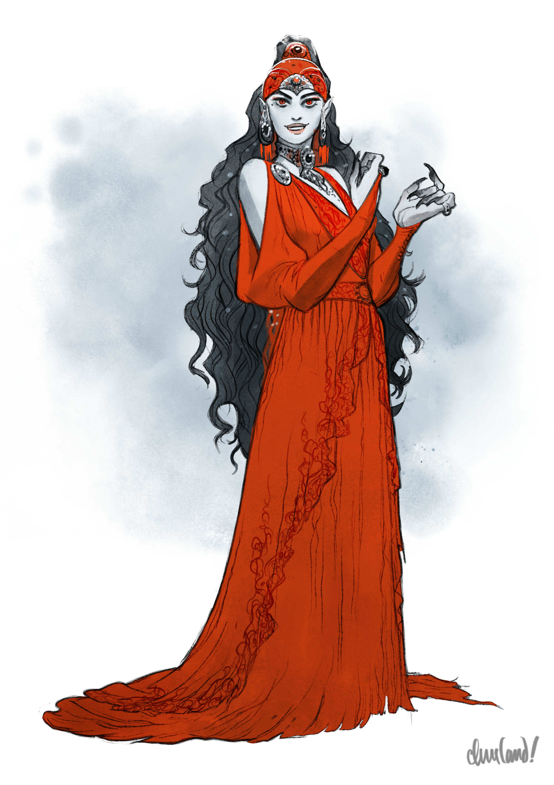
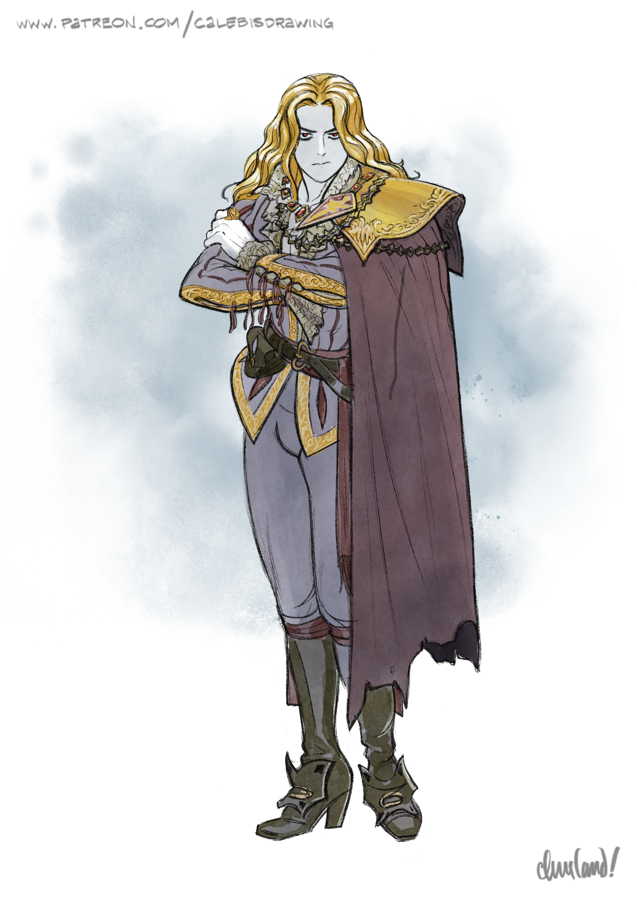
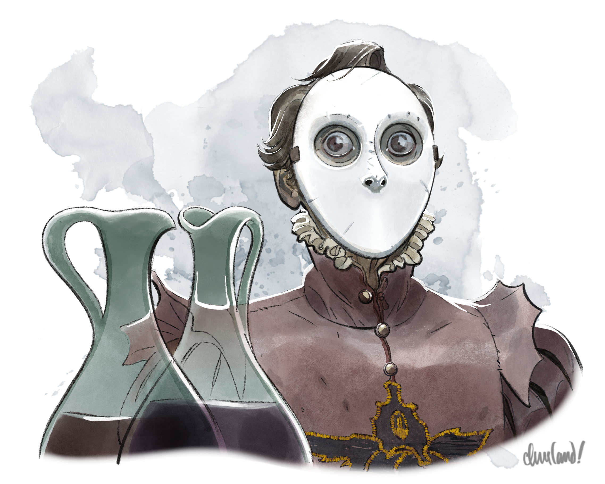
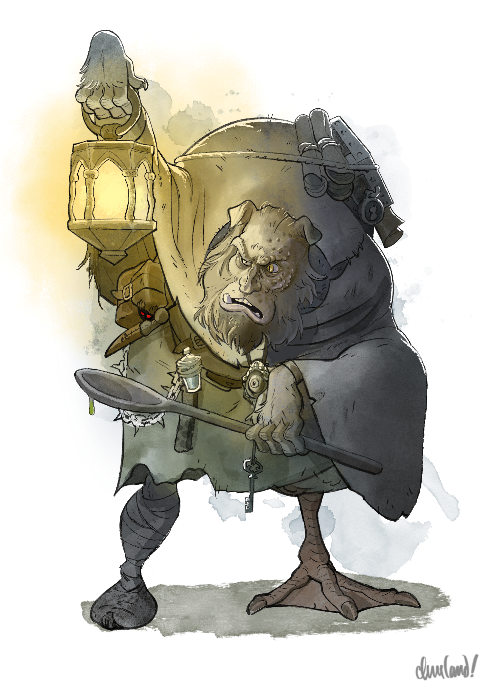
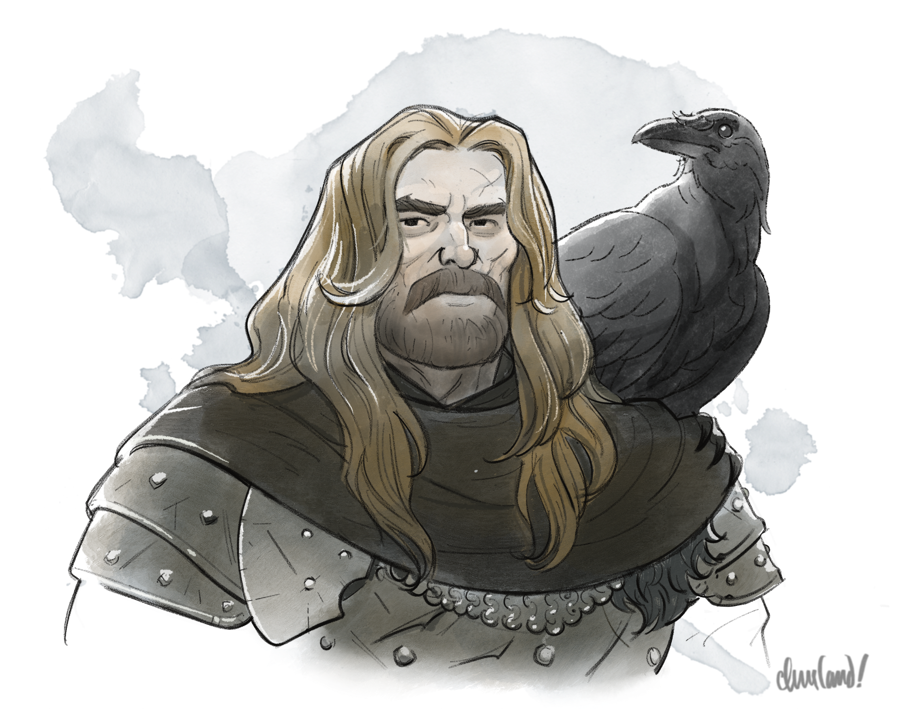
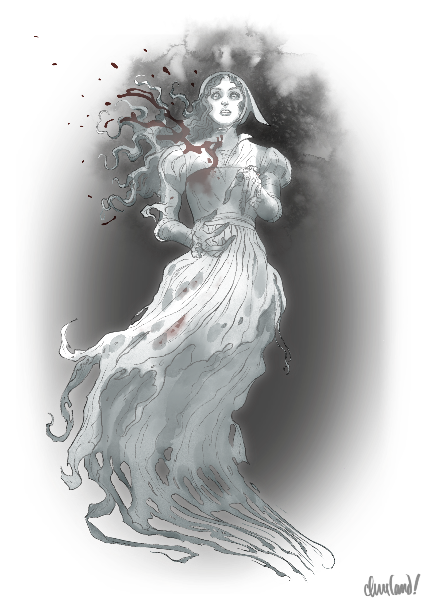

_Uma aventura para cinco personagens de 6º nível._
Neste arco, após receberem um convite para jantar com Strahd em Neyavr 14—a última noite antes da lua nova—os jogadores viajam para o leste, rumo ao Castelo Ravenloft. Pelo caminho, podem reencontrar Arrigal, que os incumbe de localizar um traidor na corte de Strahd; o Padre Donavich e o vampiro servo Doru, que viajaram até Vallaki em busca da prometida de Doru, Gertruda; e o cavaleiro esquelético, que pode conduzir os jogadores a um misterioso medalhão escondido nas Matas de Svalich.
Ao chegarem à encruzilhada do castelo, os jogadores são recebidos pela carruagem negra de Strahd, que traz presentes e pode escoltá-los até a fortaleza. No castelo, os jogadores são recebidos por Rahadin e pela terceira noiva favorita de Strahd, Anastrasya Karelova, bem como pelos demais consortes vampíricos de Strahd: Escher (o consorte mais recente de Strahd) e Sasha Ivliskova (a noiva mais antiga de Strahd, e a traidora a que Arrigal se referiu).
Enquanto participam das festividades, os jogadores precisam investigar as verdadeiras lealdades de Sasha, evitando ao mesmo tempo conflitos com as outras noivas de Strahd. Depois de jantar com o próprio Strahd, os jogadores têm a oportunidade de interrogar Sasha a respeito dos segredos do castelo—e descobrir que Strahd estará ausente do Castelo Ravenloft já na noite seguinte.
Após um passeio pelo castelo e um teste da capacidade de violência dos jogadores, um raio inesperado inutiliza a ponte levadiça do castelo, obrigando os jogadores a passar a noite no Castelo Ravenloft em meio a uma tempestade poderosa. Depois de subirem até seu quarto, porém, o fantasma de Varushka, uma antiga serva do Castelo Ravenloft, arrebata os jogadores para um pesadelo de múltiplas camadas, forçando-os a confrontar o passado sangrento do Castelo Ravenloft—ou jamais despertar . . .
O1. O Convite
Ao anoitecer da noite imediatamente posterior à lua cheia, Strahd—usando informações colhidas de seus espiões e uma localização determinada por sua magia de vidência (scrying)—envia Rahadin, seu camerlengo, para lhes entregar uma carta.
Strahd envia o convite na noite imediatamente posterior à lua cheia ou conforme descrito em Arc D - A Festa de São Andral, o que acontecer primeiro.
Rahadin, montado em seu _corcel fantasma_ (_phantom steed_)—um cavalo cinza-cinza com olhos baços e sombrios—faz a viagem até Vallaki em pouco mais de uma hora. Quer seja Lady Wachter ou o Barão quem governe Vallaki, os guardas dos portões estão apavorados demais para barrar a entrada do camerlengo e arauto de Strahd.
Rahadin então segue até a localização atual dos jogadores, desmonta do cavalo e entra. Se os jogadores estiverem na Estalagem Água Azul, todo o salão silencia com sua entrada.
Quando os jogadores virem Rahadin pela primeira vez, leia:
Vocês veem um homem alto e esguio, de pele morena, com longos cabelos negros que caem abaixo do pescoço. Uma capa leve está disposta sobre seus ombros, com a borda debruada de uma pele branca e espessa, e luvas de couro negro e macio cobrem suas mãos. Uma túnica azul-escura ornada de bronze aparece sob uma camada de armadura de couro rígida, porém flexível, e um sabre curvo pende de uma bainha em seu cinto, com um par de cimitarras presas às costas, logo acima.
Suas orelhas afinam-se para cima em pontas élficas, e seus olhos castanhos e escuros carregam uma consciência silenciosa e um olhar casual, quase predatório, enquanto percorrem lentamente o que está à sua volta. Uma longa e cruel cicatriz cruza sua testa, logo acima de onde as linhas começaram a marcar seu rosto com a idade, e seus lábios estão repuxados num franzido fino e perpétuo.
Conforme Rahadin se aproxima dos jogadores (ou vice—versa), os jogadores conseguem ouvir os sons de seus gritos dos mortos. Leia:
Começa como um rugido abafado—um formigamento na borda da sua percepção, como o quebrar do oceano contra a praia. Conforme o homem se aproxima, porém, o som abafado torna-se cada vez mais insistente, amplificando-se e acumulando-se sobre si mesmo—até que deixa de ser um ruído inócuo, quase como ondas, e se transforma numa torrente de gritos.
Seus ouvidos se enchem com a cacofonia de mil vozes, implorando, sofrendo, morrendo: um assalto psíquico que se arrebenta contra sua mente vindo de todas as direções, deixando pouco espaço para o pensamento. O homem, contudo, permanece impassível—aparentemente indiferente à sinfonia de gritos que o cerca.
Os jogadores podem notar que quaisquer outros barovianos a até três metros de Rahadin parecem igualmente perturbados. (Nenhum baroviano além do raio de três metros consegue ouvir os gritos.) Quando Rahadin fala, os gritos recuam um pouco—o suficiente para permitir que ele e os outros sejam ouvidos—mas ganham um notável timbre de medo.
Rahadin cumprimenta os jogadores e informa que veio entregar-lhes um convite de seu "mestre". Em seguida, retira um envelope lacrado com cera carmesim e ostentando o brasão dos Von Zarovich: um corvo de asas abertas sobre um escudo alto envolto por um estandarte, trazendo a imagem de um castelo em seu topo.
Se aberto, o envelope traz o seguinte, começando por uma lista dos nomes dos jogadores e preenchendo a lacuna com o número de dias até a noite anterior à próxima lua nova. (Devido ao calendário lunar encurtado de Barovia, a próxima lua nova ocorre sete dias depois da primeira lua cheia dos jogadores em Barovia.)
Para [Nomes dos Jogadores],
Ouvi falar de vossos feitos recentes em meu domínio, e desejo conhecer melhor aqueles que chegaram à minha amada terra de Barovia. Assim sendo, convido-vos a jantar em meu castelo, para que possamos nos encontrar em ambiente civilizado.
Espero vossa presença ao anoitecer da noite da última luz da lua, daqui a ___ dias. Vossa passagem de ida e volta ao meu lar será segura, e sereis hóspedes de honra por todo o tempo em que permanecerdes no Castelo Ravenloft.
Minha carruagem vos encontrará na encruzilhada de Ravenloft, além do portão ocidental. Aguardo vossa chegada.
Vosso anfitrião,
Strahd von Zarovich
Rahadin recusa-se a partir antes que os jogadores tenham lido o convite de Strahd e confirmado sua presença. Se os jogadores aceitarem o convite de Strahd, Rahadin inclina a cabeça e observa que os aguardará no Castelo Ravenloft pontualmente ao anoitecer da data indicada.
Se os jogadores perguntarem ou parecerem preocupados quanto a Strahd realmente não pretender lhes fazer mal, Rahadin observa friamente que Strahd é o senhor da terra, e sua palavra de passagem segura para ir e voltar do jantar é vinculante tanto para os outros quanto para ele mesmo. "Ele vos prometeu o direito de hóspede", observa Rahadin, encarando-os. "Não ouseis cuspir sobre sua honra ou autoridade."
Se os jogadores perguntarem ou parecerem preocupados quanto à segurança de Ireena no castelo, Rahadin observa friamente que tanto os jogadores quanto Ireena seriam hóspedes bem-vindos e protegidos pelo direito de hóspede, desde que não tenham cometido nenhuma ofensa pessoal contra Strahd—o que, até onde Rahadin sabe, nem Ireena nem os jogadores fizeram. Se os jogadores parecerem duvidosos, Rahadin observa com frieza: "Se meu mestre desejasse tomar Lady Kolyana de vós, poderia tê-lo feito quando bem entendesse, sem vossa permissão. Ela não é, por certo, obrigada a comparecer—mas aconselho-vos a não questionar a força de sua palavra."
Se os jogadores pedirem para adiar a resposta, Rahadin observa friamente que seu "mestre" espera uma resposta assim que ele retornar.
Se os jogadores recusarem o convite de Strahd ou insistirem em adiar a resposta, Rahadin, calmamente, sem tocar em suas cimitarras nem erguer a voz acima de um sussurro, pergunta se eles julgam sábio insultar o senhor do Castelo Ravenloft. "Não é ameaça, garanto-vos", promete, se questionado. "Considerai-o . . . um conselho cordial."
Se os jogadores recusarem novamente o convite ou continuarem a enrolar, Rahadin balança a cabeça, decepcionado. Observa que havia advertido "seu mestre" de sua suspeita de que os jogadores seriam "hóspedes difíceis, indelicados e indesejáveis", e diz que não terá prazer algum em informar a seu mestre que estava certo.
Se os jogadores nada fizerem para detê-lo, Rahadin então segue em direção à porta, faz uma pausa e observa em voz baixa que, apesar de suas próprias reservas, não se surpreenderia se seu mestre mantivesse o convite de pé mesmo assim, caso os jogadores mudem de ideia. Em seguida, parte.
Se souber do convite de Strahd depois de ser recrutada para a causa dos jogadores em Arc K - A Abadia Decaída, Ezmerelda d'Avenir aconselha-os avidamente a aceitá-lo—caso ainda não o tenham feito—como uma oportunidade única na vida de sondar o castelo antes de recuperar o Ícone da Graça do Amanhecer em Arc K - A Abadia Decaída, resgatar o lobisomem Emil Toranescu em Arc L - O Covil dos Lobos e/ou recuperar o crânio de Argynvost em Arc M - A Mansão do Dragão.
Ezmerelda observa, contudo, que ela não foi convidada ao jantar e, portanto, não pode comparecer abertamente. Ela está disposta, porém, a seguir seu próprio curso de ação independente enquanto os jogadores jantam com Strahd. A pedido dos jogadores, pode passar a noite guardando Ireena, vistoriando secretamente os terrenos do castelo em busca de entradas alternativas e possíveis guardas (embora não vá entrar sozinha no castelo em si), ou tomando alguma outra atitude que favoreça os interesses do grupo.
O2. A Revelação de Arrigal
Um dia antes da data marcada para o jantar, se os jogadores resgataram Arabelle em Arc E - A Vistana Desaparecida, Arrigal, de N9. Vistani Camp (p. 119), encontra os jogadores ao cair da noite ou pouco depois. (Se os jogadores passarem a noite longe de Vallaki, Arrigal os encontra ao passarem por dentro ou ao redor de Vallaki durante a viagem ao Castelo Ravenloft no dia seguinte.)
Ao topar com o grupo, Arrigal—reconhecível, embora vestindo uma capa pesada e um capuz para disfarçar as feições de olhares curiosos—"acidentalmente" esbarra em um dos jogadores, preferindo um alvo com Sabedoria (Percepção) passiva mais alta. Um jogador com Sabedoria (Percepção) passiva 14 ou mais nota a sensação de algo deslizando para dentro de seu bolso durante o breve instante de contato.
Sem reconhecer sua familiaridade, Arrigal então rosna para o jogador "olhar por onde anda" antes de se afastar rapidamente. Determinado a evitar a ira de Strahd por sua traição, Arrigal faz todo o esforço para dispensar os jogadores caso tentem segui-lo ou interagir com ele de qualquer outra forma.
Um jogador que verifique o bolso encontra um pequeno bilhete rabiscado. (Um jogador que não perceba a prestidigitação de Arrigal encontra o bilhete automaticamente na próxima vez que fizer um descanso curto ou longo.) O bilhete diz o seguinte:
Espião no castelo. Busca reunião para discutir uma oportunidade. Encontre a vítima em meio à corte.
Queime isto.
—A
 "Arrigal's Note" por Caleb Cleveland. Apoie-o no Patreon!
"Arrigal's Note" por Caleb Cleveland. Apoie-o no Patreon!
Se Ezmerelda souber do bilhete, ela aconselha animadamente os jogadores a usarem o jantar no Castelo Ravenloft como oportunidade para descobrir sutilmente a identidade do traidor—e articular um encontro, se possível.
Enquanto fazia um relatório de rotina a Anastrasya no Castelo Ravenloft, Arrigal tentou escutar às escondidas uma conversa que ela tinha com Strahd em particular. Ao fazê-lo, deparou-se com uma vampira serva cujo rosto estava oculto por um véu.
Antes que os dois se separassem, Arrigal perguntou se a vampira pretendia denunciá-lo. Em resposta, a serva riu baixinho e garantiu que nem todos os servos de Strahd o servem fielmente. "Vossa indiscrição", prometeu ela, "está a salvo comigo."
Arrigal não conhece os nomes nem as descrições de nenhuma das noivas vampíricas além de Anastrasya. Sem que ele saiba, a traidora é Sasha Ivliskova, a primeira noiva vampírica de Strahd. Veja abaixo mais informações sobre Sasha.
O3. A Antiga Estrada Svalich
O3a. Doru e Donavich
Quando os jogadores se prepararem para deixar Vallaki rumo ao Castelo Ravenloft no dia do jantar, se anteriormente pouparam o vampiro servo Doru e o ajudaram a vencer sua sede de sangue em Arc B - Bem-vindo a Barovia, eles encontram Doru e seu pai, o padre Donavich (usando as estatísticas de um acólito), no Portão da Manhã, a leste de Vallaki, ao se aproximarem da Antiga Estrada Svalich. Leia:
Quando o portão oriental fechado surge à vista, vocês avistam dois guardas discutindo acaloradamente com um par de figuras encapuzadas através das barras do portão. Quando uma das guardas desloca o peso do corpo para brandir a lança que traz ao lado, vocês reconhecem as duas figuras do outro lado do portão: o padre baroviano, Padre Donavich, e seu filho, Doru.
Se os jogadores se despediram dele em bons termos, Doru rapidamente nota os jogadores e acena empolgado, enquanto um Padre Donavich alheio continua a negociar em voz baixa com os guardas à sua frente.
Se os jogadores se apresentarem e tiverem auxiliado Lady Wachter em Arc F - O Desejo de Lady Wachter ou Arc H - A Alma Perdida, os guardas do portão os reconhecem pela aparência e os cumprimentam com respeito. Os guardas, chamados Gorek e Drilvia, desconfiam de Doru e Donavich e estão irritados com eles, e podem compartilhar as seguintes informações:
- Os dois homens, que se apresentaram como Doru e Padre Donavich, chegaram do lado de fora dos portões na noite passada e "exigiram" entrada. (Se conseguir ouvir essa descrição, Doru revira os olhos em óbvia irritação.)
- Por causa de seus olhos avermelhados e orelhas pontudas, tanto Gorek e Drilvia quanto os guardas do turno anterior acreditam que Doru seja um vampiro (o que ele e Donavich negam) e, por isso, recusaram-lhe a entrada. (Se perguntados, podem explicar, desconfortáveis, que embora Vallaki reconheça oficialmente o Diabo como senhor de Barovia, Lady Wachter manteve a política do Barão Vallakovich de barrar a entrada de qualquer morto-vivo—desde que tais mortos-vivos não sejam aprovados pelo próprio Diabo.)
- Os guardas de ambos os turnos ofereceram repetidamente ao Padre Donavich a oportunidade de entrar sozinho pelos portões, contanto que Doru permanecesse do lado de fora. Donavich, porém, recusou-se a entrar sem Doru, e ambos acabaram passando a noite dormindo na estrada.
Um jogador com Sabedoria (Intuição) passiva 14 ou mais nota que Gorek parece um tanto inseguro quanto a barrar a entrada de Doru. Um jogador que aponte isso a ele e passe num teste de Carisma (Persuasão) CD 14 pode convencê-lo a compartilhar sua crença hesitante de que, como Doru não parece ter presas, talvez não seja morto-vivo de forma alguma.
Se tiverem se separado dos jogadores em bons termos, Doru (cujas presas estão ocultas graças a seu controle sobre a sede de sangue) e Donavich cumprimentam os jogadores com calor e alívio. Doru e Donavich então pedem aos jogadores que os ajudem a conseguir entrar na cidade. Podem compartilhar as seguintes informações, se perguntados:
- Depois que os jogadores partiram da vila de Barovia, Doru e Donavich se reconciliaram e trabalharam para reparar os piores estragos infligidos à igreja baroviana. Os dois trabalharam duro juntos em sessões de "meditação e oração", e Donavich está orgulhoso do "progresso" de Doru.
- Depois de concluir os reparos da igreja e saber do desaparecimento de Gertruda, Doru ficou ansioso para tentar encontrá-la. Determinado a ajudar o filho e a futura nora, Donavich certificou-se de que a vila não precisaria mais de seus serviços de cura antes de partir com Doru pela estrada de Vallaki, na esperança de encontrar Gertruda—ou ao menos pistas de seu paradeiro ou destino final.
- Os dois passaram a noite no acampamento de Tser Pool duas noites atrás e partiram para Vallaki ontem de manhã, chegando a Vallaki pouco antes do anoitecer. (Se os jogadores insinuarem que Doru ou Donavich tinham motivo para temer os monstros da Mata de Svalich ao fazer a caminhada, Doru sorri friamente e diz: "Eu gostaria de vê-los tentar.") Embora Doru tenha insistido repetidamente para que seu pai fosse na frente e buscasse abrigo, Donavich teimosamente se recusou a deixar Doru para trás.
Uma versão anterior deste guia informava aos jogadores que Gertruda havia viajado para o Castelo Ravenloft, e não para Vallaki. Para adaptar esta cena a isso, faça com que Doru informe aos jogadores que está visitando Vallaki na esperança de obter orientação espiritual do Padre Lucian Petrovich, que Donavich lhe garantiu ser um padre sábio e instruído.
Os jogadores podem convencer Gorek e Drilvia a permitir a entrada de Donavich e Doru se atestarem o autocontrole de Doru e passarem num teste de Carisma (Persuasão ou Intimidação) CD 14. Como alternativa, os jogadores podem convencer Gorek e Drilvia de que Doru não é um vampiro apresentando um argumento convincente—por exemplo, que ele é um elfo com uma condição ocular—e passando num teste de Carisma (Enganação) CD 11, feito com vantagem se os jogadores tiverem encorajado Gorek a confiar em suas dúvidas.
Se os jogadores os ajudarem a garantir a entrada em Vallaki, Doru e Donavich ficam profundamente gratos pela ajuda, bem como por quaisquer indicações que os jogadores possam dar sobre a estalagem mais próxima.
O3b. A Orientação do Cavaleiro
A jornada de Vallaki até I. Black Carriage (p. 37) tem cerca de treze quilômetros e leva duas horas e quarenta e cinco minutos.
Quando os jogadores alcançarem o trecho da estrada próximo a Velho Triturador de Ossos, uma matilha de lobos emerge da mata. Fiel à palavra de Strahd, eles não demonstram agressividade. Leia:
O som de uivos à frente chama sua atenção. Mais adiante na estrada, uma matilha de lobos emerge da névoa, os olhos reluzindo. Eles param, farejando o ar, notando sua presença no caminho. Desinteressados, viram a cabeça para o outro lado e se esgueiram displicentemente mata adentro.
Cerca de quatrocentos metros e cinco minutos antes de os jogadores chegarem ao B. Gates of Barovia (p. 33) ocidental, se não mataram o Skeletal Rider (p. 31) em Arc C - Vale Adentro, eles o encontram mais uma vez. Leia:A Antiga Estrada Svalich os leva para leste, tocando brevemente a margem sul do Lago Zarovich antes de contornar uma esporão rochoso da montanha. Pouco depois de deixarem o promontório onde se ergue o velho moinho, a estrada mergulha de volta numa mata escura e lúgubre, enclausurada entre dois picos montanhosos.
O ar aqui é frio e silencioso, e o cascalho úmido da estrada estala de vez em quando sob os pés. Seus ouvidos captam o estalar de um graveto no mato rasteiro—e da névoa surge um familiar cavalo de guerra esquelético e seu cavaleiro. O cavaleiro esquelético permanece sentado em silêncio, sua lanterna sem luz erguida numa das mãos ossudas.
Se os jogadores tentarem passar por ele ou ignorarem de outra forma seu aparecimento, o cavaleiro ergue a mão livre e acena para que o sigam. Se os jogadores se aproximarem ou o seguirem, ele se vira e acena para que entrem na névoa, para longe da estrada.
O cavaleiro responderá até três perguntas com simples acenos ou negativas de cabeça antes de novamente chamar os jogadores adiante, embora seu comportamento indique uma óbvia impaciência para retomar a tarefa em questão. Se não souber ou não estiver disposto a responder a uma pergunta, ele simplesmente permanece em silêncio. Pode fornecer as seguintes informações, se lhe fizerem as perguntas certas:
- Ele não pretende fazer mal aos jogadores, e não os está conduzindo a perigo algum.
- Ele não foi enviado por Strahd, nem lhe é leal.
- Foi enviado por alguém que não é amigo de Strahd. (O cavaleiro não revela a identidade dessa pessoa.)
Se os jogadores o seguirem, leia:
O cavaleiro os conduz em silêncio por uma curta distância a noroeste através da mata, os cascos de sua montaria farfalhando suavemente sobre as folhas apodrecidas. O cavaleiro nunca olha para trás para encontrar o olhar de vocês, mantendo em vez disso suas órbitas escuras firmemente voltadas para a floresta adiante.
O terreno arborizado se inclina para cima aqui, o solo úmido dando lugar a matacões esparsos conforme a bacia lentamente se torna um penhasco montanhoso. O cavaleiro os guia até um pequeno afloramento rochoso que domina a mata ao redor, sobre o qual se ergue um carvalho alto e antigo. Suas folhas escuras farfalham inquietas ao vento gelado, e vinhas negras espalham-se por sua casca enrugada como veias envelhecidas.
Assim que tiver conduzido os jogadores até a árvore, o cavaleiro lhes dá um aceno silencioso e parte, gesticulando para que os jogadores fiquem para trás caso tentem segui-lo.
Jogadores que explorem ou de outra forma se demorem perto da árvore notam um pequeno entalhe de madeira feito no tronco, à altura do peito. Se os jogadores examinarem o entalhe, leia:
Duas letras ligadas por um "e" comercial parecem ter sido entalhadas no tronco da árvore: "K & V." Um pequeno oco escuro cheio de folhas esfareladas fica no tronco logo acima. Parece haver algo em meio às folhas.
O objeto no oco é um pequeno e antigo rolo de pergaminho, delicadamente amarrado com um barbante manchado de lama. Se aberto, o pergaminho traz o seguinte, em tinta rabiscada às pressas:
Queridíssima Varushka,
Espero que esta carta a encontre bem, embora eu tema que não. Meu coração dói enquanto escrevo estas palavras, sabendo que podem ser as últimas que jamais lhe escreverei.
Rezo para que você também tenha sobrevivido ao massacre. Por favor, perdoe minha covardia—embora eu tenha fugido para salvar minha vida, alguma parte de mim também sabia que eu fugia da vida que um dia poderíamos ter partilhado juntas. Se você está lendo esta carta, então meu espírito se alegra em saber que você também escapou em segurança. Meu coração se parte, contudo, ao dizer que jamais nos encontraremos de novo nesta vida.
Recebi—e aceitei—a oferta de um novo futuro, e de uma nova oportunidade. Faço isso não para abandoná-la, mas porque estou convencida de que não há outra forma de consertar as coisas. Você sempre dizia que nada jamais está quebrado demais para ser reparado. Enquanto estou aqui, nesta encruzilhada, apego-me à esperança de que você tinha razão.
Há algum tempo, você me deu um presente—um que não posso levar comigo nesta nova jornada. Deixei-o no alto da nossa árvore, vigiado por um par de guardiões fornecidos pelo meu novo benfeitor. Por favor, receba-o com meus mais profundos pesares e meus mais calorosos votos. Nenhuma alma merece amor e paz mais do que você.
Que você viva uma vida longa e feliz, e que a alegria siga para sempre seus passos, mesmo nas noites de mais escura tristeza.
Sinceramente e para sempre sua,
Katarina
O carvalho tem trinta metros de altura e quase dois metros de diâmetro, com galhos esparsos e grossos perto da base e galhos mais densos e finos em direção ao topo. Nenhum teste é necessário para escalar a árvore.
Se um jogador escalar até o topo da árvore, leia:
Sua cabeça irrompe pelas folhas da copa superior da árvore, escapando brevemente da névoa espessa e sombria que engole a paisagem lá embaixo. A poucos metros de distância, um velho ninho de pássaro repousa empoleirado entre os galhos. Você capta o brilho de algo metálico lá dentro.
Um jogador que se aproxime ou de outra forma tente interagir com o ninho é impedido por dois velhos corvos, que grasnam furiosamente para o jogador em advertência. Se o jogador ignorar os corvos ou tentar forçar passagem, as aves bicam ferozmente os dedos do jogador, obrigando-o a passar num teste de resistência de Força CD 10 ou cair de seu poleiro atual. Ao cair, o jogador precisa passar num teste de resistência de Destreza CD 10 adicional para se segurar num galho mais baixo, ou despencar trinta metros até o chão em caso de falha.
Os corvos são servos fiéis da Buscadora e descendentes dos corvos outrora incumbidos de guardar esta árvore. Os jogadores podem convencê-los a se afastar declarando sua intenção de entregar o item a Varushka ou de outra forma honrar a memória de Katarina e passando num teste de Carisma (Persuasão) CD 5. Os corvos não podem ser enganados nem intimidados, e lutam até a morte se atacados.
Um jogador que use falar com animais (speak with animals) ou magia semelhante para se comunicar com os corvos pode convencê-los a compartilhar sua missão com um teste de Carisma (Persuasão) CD 12 bem-sucedido. Se passar, os corvos revelam que são descendentes de corvos incumbidos de guardar este lugar há muito tempo, um dever que consideram "a mais alta honra". Se perguntados sobre quem ordenou que guardassem esta árvore, os corvos declaram com orgulho que servem à memória de "Aquela Que Busca nas Nuvens de Tempestade". (É por esse nome que os corvos conhecem a Buscadora.)
O objeto no ninho é uma pequena e velha caixa de madeira com um trinco de prata embaçada, marcado por séculos de arranhões e riscos de garras de corvo. Se aberta, a caixa contém a metade de um colar-medalhão de duas peças feito de prata embaçada.
Katarina—o alter ego de Madam Eva—e sua colega serva Varushka vinham com frequência a este afloramento juntas nos dias livres em que serviam no Castelo Ravenloft. Quando fugiu da carnificina de Strahd no dia de sua transformação em vampiro, Katarina veio primeiro a este lugar, esperando em vão que Varushka viesse ao seu encontro. Foi aqui que Katarina fez seu primeiro pacto com a Buscadora para se tornar Madam Eva, em troca da oportunidade de um dia dar descanso a Strahd e restaurar o sol a Barovia mais uma vez.
O3c. A Carruagem Negra
Depois de passarem pelo B. Gates of Barovia (p. 33) ocidental, os jogadores chegam à encruzilhada que leva ao Castelo Ravenloft. A carruagem negra de Strahd está agora presente, e é como descrita em I. Black Carriage (p. 37).
Quando os jogadores se aproximarem ou tentarem passar pela carruagem, eles notam um pequeno rolo de pergaminho amarrado à maçaneta interna da porta da carruagem. O rolo, amarrado com uma fita vermelho-sangue e lacrado com o familiar selo de cera do Castelo Ravenloft, está escrito com a caligrafia de Strahd e diz o seguinte:
É costume que um senhor providencie escolta segura e um presente aos hóspedes de sua casa. Aceitai ambos com meus mais sinceros cumprimentos.
Um baú de madeira finamente entalhado foi embrulhado com uma fita vermelha brilhante e deixado sobre um dos assentos almofadados dentro da carruagem. O baú, que está trancado e mede cerca de trinta centímetros de largura por quinze de profundidade, irradia uma aura de magia de conjuração sob o escrutínio de uma magia de detectar magia (detect magic). O baú tem as propriedades de uma bolsa de armazenamento (bag of holding), mas apenas se for aberto da maneira correta. (Apesar de sua aparência rígida, se aberta corretamente, a boca da caixa se expande para acomodar qualquer item colocado dentro dela, contanto que esse item caiba no volume interno da caixa. A caixa encolhe de volta ao tamanho original assim que o item está totalmente dentro dela.)
Caso os jogadores queiram fazê-lo, o espaço extradimensional dentro do baú é grande o bastante para guardar o crânio do dragão de prata Argynvost em Arc P - O Assalto a Ravenloft.
A frente do baú traz um quebra-cabeça deslizante entalhado, composto por oito painéis de madeira deslizáveis e um nono espaço vazio no centro do quebra-cabeça. Cada painel está entalhado com um animal diferente. Quando os jogadores o examinam pela primeira vez, as fileiras do quebra-cabeça são as seguintes, de cima para baixo: morcego, rato, alce; lobo, espaço vazio, urso; aranha, corvo, borboleta.
O seguinte poema está entalhado no topo do baú, em bela caligrafia:
Meus lábios ergo à noite rumo à lua prateada,
Com cordas trêmulas teço em meu tear minúscula morada,
Em asas de tinta deslizo sobre a treva amuada.
Correndo entre as sombras, na escuridão confio,
Com a frágil beleza do dia sobre meu olhar sombrio,
Silente no ventre da caverna, só as estrelas por guia sigo.
Busco majestade na solidão,
Não tenho verdades a esconder,
Minha coroa ainda assenta em minha fronte, para todos verem com orgulho.
O poema é uma pista quanto à ordem correta dos painéis: lobo, aranha, corvo; rato, borboleta, morcego; urso, espaço vazio, alce. Se os painéis forem dispostos na ordem correta, o baú se abre, dando acesso ao espaço de armazenamento extradimensional em seu interior. Quando aberto dessa forma pela primeira vez, o baú contém um número de embrulhos cuidadosamente atados igual ao número de jogadores. Cada embrulho contém um par de finas luvas de veludo negro com debrum de prata e uma fina capa de veludo negro forrada com pelo de lobo.
Os jogadores também podem abrir o baú arrombando a fechadura com um teste de Destreza (Ferramentas de Ladrão) CD 20 bem-sucedido, ou forçando o baú com um teste de Força CD 15 bem-sucedido. Se os jogadores abrirem o baú dessa forma, ele tem um interior comum e contém apenas uma garrafa de vinho Red Dragon Crush, estampada com o nome da Vinícola Feiticeiro dos Vinhos. Se os jogadores arrombarem o baú à força, a garrafa se estilhaça e quebra, manchando quaisquer dedos e botas próximos com um tom vermelho leve, mas perceptível.
O4. A Chegada ao Castelo Ravenloft
A jornada de I. Black Carriage (p. 37) até o Castelo Ravenloft tem cerca de quatro quilômetros e leva cinquenta minutos a pé ou quarenta minutos de carruagem.
Os portões de Ravenloft são em grande parte como descritos em J. Gates of Ravenloft (p. 38). Contudo, revise a descrição da área para o seguinte:
Depois de serpentear pela floresta e pelos picos rochosos das montanhas, a estrada faz uma curva abrupta para leste, e a presença assustadora e imponente do Castelo Ravenloft ergue-se diante de vocês. A carruagem para por completo diante de duas torres gêmeas de pedra, castigadas por anos de exposição. Além dessas torres de guarda está o precipício de um abismo de quinze metros de largura, tomado de névoa, que desaparece em profundezas desconhecidas.
Uma imponente ponte levadiça de velhas vigas de madeira escoradas paira bem acima do abismo, suspensa por correntes de ferro grosso e comido pela ferrugem que rangem e se retesam sob o peso. Do alto das muralhas, gárgulas de pedra encaram vocês com suas órbitas vazias e sorriem de forma medonha.
Um rangido profundo e ressonante ecoa pelo ar enquanto mecanismos invisíveis subitamente ganham vida com um gemido. As correntes lá em cima estremecem e guincham enquanto a ponte levadiça desce num ritmo deliberado e inexorável. Com uma pancada pesada e definitiva, ela se assenta cruzando o abismo.
Assim que a ponte levadiça desce, a carruagem retoma sua passagem rumo ao castelo. Leia:
A carruagem se sacode para a frente, as rodas rangendo enquanto rola sobre a ponte levadiça. As pranchas de madeira gemem sob seu peso, cada batida de casco soando como um tambor sombrio contra a antiga estrutura. Vocês captam um último vislumbre das gárgulas no alto das muralhas, seus sorrisos de pedra parecendo escárnios em meio às sombras da fortaleza.
Uma grade de madeira apodrecida, esverdeada pelo limo, pende acima do túnel de entrada. Quando os cavalos passam sob ela, as lanternas da carruagem lançam sombras trêmulas contra as paredes de pedra escura, formando figuras estranhas e retorcidas que se agarram à alvenaria argamassada.
A carruagem emerge do túnel num pátio, onde estremece até parar. A porta da carruagem estala—e se abre lentamente.
Os jogadores chegaram ao Castelo Ravenloft.
O4a. O Pátio
This scene takes place in Chapter 4, Area K1.
Esta área é em grande parte como descrita em K1. Front Courtyard (p. 52). Contudo, quando os jogadores saírem da carruagem, revise a descrição desta área para o seguinte:
Uma névoa espessa e fria roda por este pátio, e clarões esporádicos de relâmpago rasgam as nuvens chorosas lá em cima enquanto o trovão sacode o chão. Através da garoa, vocês veem chamas de tochas tremulando de cada lado das altas portas principais da fortaleza. Bem acima da entrada há uma janela redonda com cacos de vidro quebrado encravados em sua moldura de ferro.
As portas do castelo estão abertas, uma luz quente jorrando da entrada e inundando o pátio. Duas figuras estão paradas entre as portas. Uma delas, um homem alto e esguio de orelhas pontudas e pele morena, veste uma rica túnica azul adornada com intrincados padrões em espiral e debruada com fio dourado. Seu lábio está curvado num franzido fino e perpétuo, e ele mantém ambas as mãos primorosamente entrelaçadas atrás das costas.
Sua companheira, uma mulher, usa um impressionante vestido vermelho com babados em camadas. Um lenço de cabeça de seda negra e carmesim envolve sua cabeça, o tecido luxuoso costurado com joias preciosas, e um pingente de opala negra reluz numa gargantilha de prata pendurada frouxamente em seu pescoço. Seus olhos vermelhos brilham à luz tremeluzente, e vocês vislumbram uma presa de um branco reluzente por trás de seu lábio superior curvado.
Os jogadores reconhecem o homem como Rahadin, o camerlengo de Strahd. A mulher é Anastrasya Karelova, uma das noivas vampíricas de Strahd.
Informações de Interpretação Ressonância. Anastrasya deve inspirar lisonja por seus elogios e charme, suspeita por seus esforços disfarçados de sondar os segredos dos jogadores, e repulsa por sua apatia diante do sofrimento do povo baroviano.
Emoções. Anastrasya na maioria das vezes sente-se calma, divertida, satisfeita ou intrigada.
Motivações. Anastrasya quer eliminar Volenta, Ludmilla e os jogadores como concorrentes pelo afeto de Strahd—colocando-os uns contra os outros, se possível.
Inspirações. Ao interpretar Anastrasya, canalize Lara Raith (The Dresden Files), Margaery Tyrell (Game of Thrones) e Irene Adler (Sherlock Holmes)
Informações do Personagem Persona. Para o mundo, Anastrasya é uma socialite empática, atenciosa e encantadora. Para quem a conhece melhor, Anastrasya é uma mestre de xadrez astuta e impiedosa, com o dom de se safar até das situações mais complicadas.
Moral. Numa luta, Anastrasya negociaria a paz—e apunhalaria o inimigo pelas costas assim que surgisse um momento oportuno.
Relações. Anastrasya é a terceira noiva mais jovem de Strahd e uma antiga nobre vallakiana de uma casa hoje extinta.
Informações de Interpretação Ressonância. Rahadin deve inspirar raiva por sua condescendência e inquietação por sua calma letal e devoção inabalável em cumprir a vontade de Strahd.
Emoções. Rahadin na maioria das vezes sente-se calmo, desdenhoso, satisfeito, entediado ou irritado.
Motivações. Rahadin quer servir à vontade de Strahd como seu servo fiel e eternamente leal—não importa o custo para si mesmo ou para os outros.
Inspirações. Ao interpretar Rahadin, canalize Tywin Lannister (Game of Thrones), Severus Snape (Harry Potter) e o Agente Smith (The Matrix).
Informações do Personagem Persona. Para o mundo, Rahadin é o leal braço direito de Strahd e seu executor impiedoso. Só Rahadin conhece a profundidade de sua dedicação à família Von Zarovich, que ele acredita tê-lo salvado da vergonha e do desespero.
Moral. Numa luta, Rahadin sacaria imediatamente suas armas e ofereceria suavemente ao oponente a oportunidade de recuar—e então atacaria sem piedade e com todas as vantagens estratégicas, caso fosse recusado.
Relações. Rahadin é o camerlengo do Castelo Ravenloft, o irmão adotivo de Strahd von Zarovich, o primo do elfo do crepúsculo Kasimir Velikov, o filho do falecido príncipe elfo do crepúsculo Erevan Löwenhart (o dono original da lâmina que mais tarde se tornaria a Sunsword) e o assassino das mulheres elfas do crepúsculo (exceto a banshee Patrina Velikovna, que foi morta por seu irmão Kasimir).

"Anastrasya" por Caleb Cleveland. Apoie-o no Patreon!Anastrasya cumprimenta calorosamente os jogadores pelo nome ("Vocês devem ser . . . "), e então lhes dá as boas-vindas ao Castelo Ravenloft. Ao fazê-lo, expressa seu alegre deleite por finalmente ter a oportunidade de conhecê-los pessoalmente e conta que ouviu falar "tanta coisa" sobre eles.
Se os jogadores perguntarem sobre a ausência de Strahd, Rahadin observa secamente que "o mestre está ocupado com outros assuntos", e atenderá os jogadores em breve.
Se algum jogador parecer desleixado, sujo (por exemplo, por ter derramado o vinho da caixa de armazenamento de Strahd) ou mal vestido, Rahadin curva o lábio e pergunta, com evidente descrença, se eles realmente se consideram apresentáveis. "Estais prestes a jantar com o senhor do Castelo Ravenloft", entoa ele, encarando-os. "Certo . . . decoro se espera daqueles que desejam demonstrar respeito." Se algum jogador estiver usando as capas da caixa de armazenamento de Strahd ou de outra forma tiver se esforçado para causar boa impressão, Rahadin inspeciona brevemente suas roupas antes de declarar sua aparência "adequada".
Se Anastrasya notar algum jogador usando o _Holy Symbol of Ravenkind_, ela o destaca e, enquanto ajeita suas roupas, ajusta ostensivamente o peso do objeto no pescoço do jogador. Ao fazê-lo, elogia a "adorável joia" do jogador, mas questiona em voz alta se ela "não estaria decorada demais". Acrescenta: "Alguns diriam que é de mau gosto, mas, querido, eu adoro um hóspede capaz de usar uma peça dessas com tanta _confiança_."
Um jogador com Sabedoria (Intuição) passiva 16 ou mais nota que, ao observar o _Holy Symbol_, a voz de Anastrasya fica tensa, seus lábios ligeiramente curvados, e seus olhos carregam um leve brilho de reconhecimento furioso. Se confrontada quanto a esse aparente reconhecimento, Anastrasya ri deliciada e afirma que o símbolo "lembra um pouco um item que uma _velha amiga_ dela usava, há muito tempo". (Anastrasya se refere à paladina Lugdana, que caçou Anastrasya e a forçou a se esconder há quase um século.)
Depois que Anastrasya ajeita as roupas dos jogadores e os conduz para dentro de K7. Entry (p. 54), longe da chuva, Rahadin se vira, acena com a cabeça e estala a língua na direção da carruagem. Os cavalos então partem a trote, levando a carruagem através do K2. Center Court Gate (p. 54) ao norte e para dentro do K3. Servants’ Courtyard (p. 54), onde são recebidos e conduzidos até a K4. Carriage House (p. 54) pelo vira-lata (mongrelfolk) Cyrus Belview. (Veja K62. Servants’ Hall (p. 76) para mais informações sobre Cyrus.)
Quando os jogadores entram na fortaleza, a ponte levadiça do castelo se ergue mais uma vez. Leia:
Um ronco grave corta a chuva. À distância, vocês veem as correntes maciças da ponte levadiça se retesarem, seus elos tinindo uns contra os outros enquanto o mecanismo desperta mais uma vez. Lentamente, como um gigante que se agita, a ponte levadiça se ergue noite adentro, deixando para trás o abismo sufocado de névoa. Com uma pancada estremecida, ela se assenta no lugar, a luz das tochas tremulando novamente sobre suas vigas de madeira e seus ferrolhos enferrujados.
O4b. O Saguão
This scene takes place in Chapter 4, Area K7.
O saguão do castelo é em grande parte como descrito em K7. Entry (p. 54). Contudo, reduza o número de estátuas de filhote de dragão para duas. (As outras duas são estatuária inofensiva.) As estátuas de dragão não atacam os jogadores enquanto eles estiverem aqui a convite.
Além disso, revise a descrição desta área para o seguinte, conforme Rahadin conduz os jogadores por ela pela primeira vez:
Vocês atravessam as ornamentadas portas externas e entram no saguão abobadado do castelo, seus passos ecoando pelo piso de pedra escura. Lá em cima, quatro estátuas de dragões olham para baixo com desprezo, seus olhos realistas tremeluzindo à luz das tochas.
Seis metros castelo adentro há um segundo conjunto de portas, guarnecido por duas figuras. À esquerda está um jovem bonito de longos cabelos loiros, suas feições suaves aguçadas por um sorriso congelado. À direita, uma mulher de pele pálida num velho vestido de noiva permanece rigidamente parada. Seus cabelos, negros como penas de corvo, caem em cascata sobre os ombros, e seus lábios estão delicadamente repuxados para revelar duas presas finas e pontiagudas. Quando vocês se aproximam, ambos fazem uma profunda reverência a Rahadin—o homem com a graça zombeteira de um gato, a mulher com um movimento brusco e cauteloso—e se afastam para abrir as portas e franquear-lhes a passagem.
Os jogadores reconhecem o homem como Escher, o consorte vampiro servo de Strahd, que eles conheceram anteriormente em Arc C - Vale Adentro. A mulher é Sasha Ivliskova, uma vampira serva e a mais antiga noiva vampírica de Strahd.

"Escher" por Caleb Cleveland. Apoie-o no Patreon! "Sasha Ivliskova" por Caleb Cleveland. Apoie-o no Patreon!
"Sasha Ivliskova" por Caleb Cleveland. Apoie-o no Patreon!
Informações de Interpretação Ressonância. Escher deve fazer os jogadores se sentirem divertidos e lisonjeados com seu comportamento espalhafatosamente sedutor, irritados com seus comentários maldosos ou condescendentes e, por fim, solidários à culpa não confessada que ele carrega por seu papel em trazer desgraça a seus amigos e vizinhos ao despertar Strahd.
Emoções. Escher na maioria das vezes sente-se incomodado, curioso, irritado, presunçoso, ansioso, temeroso, brincalhão, travesso, divertido, culpado, amargurado, arrependido ou envergonhado.
Motivações. Escher quer agradar a Strahd e evitar cair em desgraça.
Inspirações. Ao interpretar Escher, canalize Astarion (Baldur's Gate 3), Crowley (Good Omens) e Renly Baratheon (Game of Thrones).
Informações do Personagem Persona. Para o mundo, Escher é um membro espalhafatoso e autoconfiante da corte de Strahd, apaixonado por se enfeitar, por luxos e por atenção. Só Escher sabe que é um homem quebrado, tomado de culpa e ódio por si mesmo, que anseia desesperadamente pela aprovação de Strahd e há muito se resignou à jaula em que suas escolhas o aprisionaram.
Moral. Numa luta, Escher tentaria suplicar ao adversário ou fugir dele, lutando apenas se encurralado ou gravemente ofendido.
Relações. Antes de se tornar um dos consortes de Strahd, Escher era apaixonado por Doru, seu antigo melhor amigo. Agora é um dos consortes de Strahd—embora não formalmente casado com ele—e um membro inferior da corte de Strahd.
Informações de Interpretação Ressonância. Sasha deve fazer os jogadores se sentirem solidários ao seu evidente desconforto como uma das noivas de Strahd, cativados por seus esforços em manter a dignidade diante do desprezo e da crueldade das outras noivas de Strahd, e levemente incomodados por sua relutância arredia em deixar que os outros se aproximem dela.
Emoções. Sasha na maioria das vezes sente-se melancólica, ansiosa, desanimada, desconfortável, angustiada, relutante ou temerosa. Se tratada com gentileza, pode sentir-se grata ou esperançosa.
Motivações. Sasha é movida pelo desejo de evitar a ira de Strahd, proteger outros barovianos vulneráveis de caírem sob o domínio de Strahd e libertar-se da maldição vampírica da não-morte.
Inspirações. Ao interpretar Sasha, canalize Sansa Stark (Game of Thrones)), Katniss Everdeen (The Hunger Games) e Elsa (Frozen).
Informações do Personagem Persona. Para o mundo, Sasha é uma vampira silenciosa e taciturna, com pouco interesse pelos outros. Para aqueles em quem confia, Sasha é uma alma pesarosa e tomada de culpa, desesperada para escapar de sua existência monstruosa.
Moral. Numa luta, Sasha tentaria fugir ou suplicar ao adversário, lutando apenas se encurralada por um oponente maligno ou malévolo.
Relações. Sasha é a primeira noiva de Strahd e uma amiga secreta de Gertruda, a prometida de Doru e prisioneira de Strahd.
Há quase quatrocentos anos, em seu luto após perder Tatyana, Strahd atraiu várias outras mulheres ao Castelo Ravenloft conforme descrito em Rahadin (p. 236). Todas pereceram diante de sua recém-descoberta sede de sangue—mas apenas Sasha Ivliskova, cujo temperamento Strahd achou notavelmente semelhante ao de Tatyana, manteve seu interesse por muito tempo.
Numa cerimônia de casamento assistida pelos aterrorizados burgomestres e demais nobres de Barovia, Strahd fez de Sasha uma vampira serva—e sua primeira noiva vampírica. A união deles, porém, não foi feliz. Amargurado e desapontado pela perda de Tatyana, Strahd frequentemente esbravejava contra a "insuficiência" de Sasha, amaldiçoando-a e tratando-a com crueldade por suas muitas falhas imaginadas. Aterrorizada, mas incapaz de aceitar seus abusos por mais tempo, Sasha exigiu sua liberdade—e Strahd a puniu aprisionando-a numa cripta minúscula nas catacumbas de Ravenloft.
Sasha permaneceu em sua cripta por séculos, mergulhando na loucura enquanto os longos anos a privavam tanto de sangue quanto de companhia. Compelida pelas ordens de Strahd a permanecer ali, ela era incapaz até mesmo de tocar a pesada laje que selava seu túmulo silencioso, cuja superfície lisa de pedra estava a meros centímetros de suas mãos murchas e trêmulas.
Foi somente quando Strahd despertou de sua recente hibernação que ele finalmente retirou Sasha de sua prisão, permitindo que seus olhos vissem a luz pela primeira vez em quase quatro séculos. Levada ao frenesi pelos três prisioneiros barovianos que ele lhe deixou, ela caiu sobre eles como um animal, sua mente só retornando depois que sugou até a última gota de sangue deles.
Sasha odeia aquilo em que se transformou—e a única coisa que odeia mais do que isso é Strahd. Embora não tenha certeza do motivo pelo qual ele a despertou, ela não deseja nada menos que o fim completo e absoluto dele—e a sua própria chance de finalmente encontrar descanso.
Se Ireena estiver com o grupo, Sasha se sobressalta brevemente ao vislumbrá-la—quase como se "tivesse visto um fantasma"—mas rapidamente recobra a compostura.
Embora Sasha e Tatyana nunca tenham se conhecido em vida, Sasha conhece profundamente o rosto de Tatyana, tendo passado muitos anos estudando as feições da outra mulher no retrato encomendado que Strahd colocou em K37. Study (p. 66). Embora Sasha um dia tenha odiado Tatyana por escapar das garras de Strahd, o tempo amadureceu seu ódio em pena, e Sasha hoje lamenta por Tatyana como uma mulher não muito diferente de si mesma: uma vítima dos apetites e da crueldade de Strahd.
Embora não saiba ao certo se ela mesma acredita nisso, Sasha sabe que Strahd acredita que Ireena é Tatyana reencarnada—um fato que ele usou para zombar dela distraidamente pouco depois de sua saída do túmulo. Embora seja incapaz de desobedecer à vontade de Strahd, Sasha—chocada com a semelhança de Ireena com Tatyana—reza para que Ireena escape do destino de sua contraparte, e para que sua alma um dia encontre liberdade das garras sombrias de Strahd.
O4c. O Grande Vestíbulo
This scene takes place in Chapter 4, Area K8.
Esta área é em grande parte como descrita em K8. Great Entry (p. 55). Contudo, reduza o número de gárgulas para quatro. As gárgulas não atacam enquanto os jogadores estiverem aqui a convite.
Além disso, remova a descrição dos "tons tristes e majestosos de órgão" da última frase da descrição desta área, omita a descrição de Rahadin e acrescente o seguinte texto ao final da descrição desta área, modificando-o conforme necessário se Volenta Popofsky ou Ludmilla Vilisevic já tiverem sido mortas:
Uma mulher delicada, vestindo um desbotado vestido de noiva dourado e uma máscara de platina em forma de caveira, agita uma taça de vinho cheia de um líquido carmesim e profundo enquanto gesticula descontroladamente. Sua companheira, uma mulher alta de pele escura usando uma tiara de ouro e um simples vestido branco, a ignora, o olhar frio deslizando na direção de vocês enquanto sua expressão se fecha. Seu aperto na própria taça de vinho se firma, e os cantos de sua boca descem quase imperceptivelmente.
Apresentações
Se já as encontraram anteriormente em Arc D - A Festa de São Andral e Arc J - A Gema Roubada, os jogadores reconhecem a mulher delicada como Volenta Popofsky e a mulher alta como Ludmilla Vilisevic. Volenta e Ludmilla reconhecem os jogadores—Ludmilla encarando-os com um desdém gélido, e Volenta esvaziando sua taça enquanto os fuzila com o olhar por trás da máscara.
Escher e Sasha então fecham as portas de entrada atrás deles, juntando-se aos jogadores e aos demais consortes no grande vestíbulo. Se não for interrompida, Anastrasya tenta apresentar os jogadores a Volenta e Ludmilla—embora acrescente, com um sorriso divertido, que "acredita que eles já possam ter se conhecido".
Anastrasya então tenta apresentar os jogadores a Escher e Sasha, apresentando-os como "o mais novo deleite do nosso Senhor" e "a mais antiga noiva do nosso Senhor", respectivamente. "A queridíssima Sasha não aparenta a idade que tem, é claro", ela acrescenta, quase como um pensamento tardio. "Ora, o nosso Senhor me disse recentemente que ela continua tão radiante quanto no primeiro dia em que pôs os olhos nela." (Um jogador com Sabedoria (Intuição) passiva 13 ou mais nota Sasha tremer visivelmente diante do "elogio" atravessado de Anastrasya, seus dedos se fechando em punhos enquanto suas garras vampíricas tiram sangue das próprias palmas.)
Se Ireena não estiver presente, Escher é espalhafatoso, alegre e sedutor com os jogadores, determinado a mostrar aos outros consortes de Strahd que não se intimidará com as tentativas deles de puxar hierarquia. Se Ireena estiver presente, Escher, embora ainda espalhafatoso, é mais retraído e até ocasionalmente ríspido e irritadiço. Envergonhado demais das consequências de sua decisão de despertar Strahd—como a morte do pai de Ireena e as mortes de muitos de seus amigos e vizinhos—ele não está disposto a encarar os olhos dela durante toda a noite.
O Brinquedo de Volenta
Enquanto as apresentações se encerram, Rahadin desloca-se para o K9. Guests' Hall (p. 56) a fim de guardar a entrada da K21. South Tower Stair (p. 59). Ao fazê-lo, um homem emerge da escada da torre sul e junta-se aos jogadores e às noivas no grande vestíbulo. Leia:
Um homem magro, vestido com finas roupas de criado, sai da escadaria iluminada por tochas, o rosto completamente encoberto por uma máscara branca e pálida. Ele carrega uma bandeja com várias taças de vinho e duas jarras de líquido—uma de um roxo profundo, outra de um carmesim vivo—e caminha com cuidado pelo piso de pedra em direção a vocês.
O homem é um aldeão baroviano de meia-idade chamado Anton Konstantinovich. Ele não tem língua e não consegue falar.

"Anton" por Caleb Cleveland. Apoie-o no Patreon!A menos que seja interrompido, Anton primeiro oferece aos jogadores vinho da jarra roxa. (Se os jogadores pedirem que suas bebidas sejam servidas da jarra vermelha, o homem balança silenciosamente a cabeça e oferece novamente a jarra roxa. O líquido da jarra vermelha é sangue, que apenas os vampiros bebem.)
Qualquer jogador para quem o homem sirva uma bebida nota que cada uma de suas pontas de dedo foi decepada até a primeira falange, e um jogador com Sabedoria (Intuição) passiva 13 ou mais nota que suas mãos estão tremendo. Um jogador que espie por trás da máscara, dentro dos olhos do homem, e passe num teste de Sabedoria (Intuição) CD 13 nota que estão arregalados de medo.
Volenta sequestrou Anton e sua esposa, Dezdrelda Konstaninova, há várias semanas e os submeteu a inúmeras torturas para satisfazer seus deleites profanos, incluindo arrancar a língua de Anton e decepar as pontas de seus dedos.
Enquanto Anton foi "autorizado" a servir como atendente das festividades da noite, o cadáver de Dezdrelda foi pendurado na K63. Wine Cellar (p. 77) e dessangrado, seu sangue drenado para alimentar os apetites dos vampiros durante a festa desta noite.
Enquanto as bebidas são servidas, Anastrasya tenta prosseguir com a conversa, mencionando seu vivo interesse em "conhecer melhor forasteiros tão exóticos" e perguntando sobre seus interesses, passatempos e experiências. Anastrasya faz tudo o que pode para demonstrar um interesse vivo e sincero pelos jogadores, fazendo perguntas complementares, rindo de suas piadas e sondando a fundo suas histórias e anedotas.
Depois de servir a Anastrasya e Escher taças de "vinho" da jarra vermelha—Sasha recusa uma para si, balançando a cabeça com um franzido curto e fino—Anton se aproxima de Volenta e Ludmilla e tenta reabastecer suas taças. Ao fazê-lo, leia:
O homem mascarado tropeça, perdendo o controle da jarra vermelha—e uma onda de líquido carmesim voa pelo ar antes de se espalhar sobre o vestido dourado de Volenta. Os outros vampiros silenciam abruptamente enquanto Volenta gira em direção a ele, o vestido encharcado pendendo frouxo sobre seu peito. Seus olhos ardem de fúria frenética por trás da máscara, e sua mão aperta a taça de vinho com tanta força que ela se estilhaça.
A menos que os jogadores impeçam, Volenta então vira a haste pontiaguda de sua taça na direção da garganta de Anton e sussurra docemente que "o pobre Anton foi um menino malvado e desajeitado". "Eu também posso ser desajeitada", ela acrescenta em voz baixa, roçando delicadamente o vidro serrilhado contra a borda de sua garganta. "Só um pequeno escorregão da mão, e—ops!"
Os jogadores podem convencer Volenta a poupar Anton com um teste de Carisma (Persuasão) CD 15 ou um teste de Carisma (Intimidação) CD 20, feito com vantagem se invocarem a possibilidade de que Volenta possa atrair a ira de Strahd ao derramar sangue no chão do castelo. Os jogadores também podem distrair Volenta encontrando outra coisa para chamar sua atenção e passando num teste de Carisma (Atuação) CD 15, ou usando magia para limpar seu vestido e passando num teste de Carisma (Persuasão) CD 5.
Se os jogadores demonstrarem interesse em atacar Volenta, Rahadin rapidamente se interpõe, colocando uma das mãos no punho negro-azeviche de seu sabre enquanto apoia a outra no peito do jogador agressor. "Sois hóspedes entre estas paredes", diz ele suavemente, "mas não vos esqueçais de onde estais." Seus olhos brilham perigosamente. "Violar a santidade do direito de hóspede aqui é convidar . . . consequências severas."
Se os jogadores mataram Volenta anteriormente em Arc D - A Festa de São Andral, Anton derrama o vinho em Ludmilla. Em vez de estilhaçar sua taça de vinho, ela invoca um nimbo de eletricidade crepitante ao redor da mão livre. "Talvez Volenta tenha te quebrado além de qualquer conserto", murmura ela friamente, erguendo a mão em direção ao peito dele enquanto ele choraminga de medo. "Há muito me acostumei a limpar as sujeiras dela."
O Senhor do Castelo
Quer os jogadores consigam convencer ou distrair Volenta ou não, Strahd então desce imediatamente do K19. Grand Landing (p. 58) para o K8. Great Entry (p. 55).
Se os jogadores conseguiram convencer ou distrair Volenta, leia:
O som de aplausos discretos enche seus ouvidos.
Caso contrário, se os jogadores não conseguiram convencer nem distrair Volenta
As narinas de Volenta se dilatam, seus olhos cintilando de fúria. Sua mão se move, o vidro quebrado embaçando rumo ao pescoço exposto do homem—
A voz severa de um homem, rica e ressonante, corta o ar. "Estais vos esquecendo de vós mesma", entoa ele. "Há hóspedes em nossa casa."
A mão de Volenta congela, a um fio de cabelo de rasgar a carne.
Em qualquer dos casos, continue:
Passos regulares e comedidos ecoam pela grandiosa escadaria de pedra, e uma figura alta e elegante desce à vista. Ele veste um colete ajustado de escarlate profundo sobre uma camisa branca impecável, cada fecho ornamentado meticulosamente abotoado.
Ele se move com a graça de um gato, sua longa capa de veludo negro sussurrando pelo ar atrás dele. Conforme se aproxima, a luz trêmula das tochas dança sobre sua pele pálida, seus olhos carmesins reluzindo como rubis.
"Boa noite", diz Strahd von Zarovich, os lábios curvando-se num sorriso cordial.
 "Strahd at Dinner" por Caleb Cleveland. Apoie-o no Patreon!
"Strahd at Dinner" por Caleb Cleveland. Apoie-o no Patreon!
Cada vampiro servo silencia imediatamente e se volta para oferecer a Strahd uma profunda mesura ou reverência. Ao fazer sua mesura, Anastrasya baixa a cabeça e fecha os olhos, murmurando: "Boa noite, meu senhor." Ela acrescenta, os olhos deslizando na direção de Volenta: "Espero que a folia da noite não tenha perturbado vosso trabalho."
Depois de dispensar cordialmente as preocupações de Anastrasya, Strahd cumprimenta os jogadores, dando-lhes as boas-vindas ao Castelo Ravenloft e pedindo desculpas pelo comportamento de Volenta, se necessário. ("Ela pode ser bastante exaltada às vezes", observa ele, seco. "Uma de suas qualidades mais atraentes—e talvez seu maior defeito.")
Strahd então lamenta brevemente o "vinho" derramado antes de se voltar para Sasha. "Minha querida Sasha—importar-vos-íeis de buscar um esfregão com Cyrus e cuidar desta bagunça?", pergunta ele. Seus olhos se demoram em Volenta: "Dois esfregões, talvez, se alguém quiser ajudar."
Se um dos jogadores se voluntariar para ajudar Sasha a limpar, Strahd parece momentaneamente surpreso, mas agradece pela sua "magnanimidade". "Sasha vos mostrará o caminho", acrescenta ele, e então se volta para os outros jogadores. Sasha então faz uma reverência a Strahd, toma o voluntário pela mão e o conduz em direção à K21. South Tower Stair (p. 59). (Conforme o jogador desce as escadas com Sasha, continue em Sasha a Sós, abaixo.)
Enquanto Sasha desce as escadas, Strahd pergunta aos jogadores sobre sua viagem até Ravenloft. "Achastes a jornada confortável, espero", diz ele. Ele fica satisfeito se os jogadores concordarem, observando que o Castelo Ravenloft "outrora recebeu muitos hóspedes", e que é um prazer recebê-los mais uma vez.
Enquanto Sasha está ausente, Strahd continua a puxar conversa leve com os jogadores, fazendo qualquer uma ou todas as seguintes perguntas, em nenhuma ordem específica:
- "Sois recém-chegados à minha terra—sem lar nem salão, imagino. Confio, ainda assim, que a hospitalidade de meu povo tenha sido de vosso agrado?" (Se os jogadores responderem com um simples "sim" ou "não", Strahd sorri e pede que elaborem, observando: "É bom que a simples honra da hospitalidade ainda seja lembrada. Talvez eu possa recompensá-los por sua bondade.")
- "Lamento que as névoas tenham ocultado boa parte da beleza outrora radiante do vale. Ainda assim, dizem-me que sois bastante viajados por ele. Como achastes seus habitantes e suas paisagens?"
- "A Antiga Estrada Svalich pode ser solitária quando percorrida a sós. Encontrastes companhia agradável em meu domínio?"
Se perguntado sobre os seguintes residentes ou facções de Barovia, Strahd pode compartilhar as seguintes opiniões:
- Matilha de Lobisomens. "Um bando de animais selvagens, e duas vezes mais indisciplinados. Ainda assim, com seus excessos devidamente domados, têm sua utilidade."
- Povo da Floresta. "Não têm nada da graça de seus ancestrais, e pouco de sua sabedoria. O fanatismo deles, embora lisonjeiro, ocasionalmente deixa um gosto desagradável na boca. Um senhor que se deleita em adoração é um tolo, não um deus."
- Povo da Montanha. "Um povo peculiar e silencioso. Foram quebrados há muito tempo, contudo. Não se intrometem em meus assuntos, nem eu nos deles."
- Baba Lysaga. "Uma mulher excêntrica, embora bastante capaz em assuntos de magia. Ela vive isolada, e não lhe invejo essa solidão."
- Coven de Bonegrinder. (Se o coven estiver morto) "Entendo que eram criaturas cruéis e pútridas, que encontravam prazer na prática da corrupção mesquinha. Meu reino não é menor por sua ausência."
- Ordem do Dragão Prateado. "Uma milícia esquecida e maculada, há muito abandonada por vontade própria. Dai-lhes pouca atenção."
- O Abade. "Uma criatura estranha, bastante tomada por seus próprios caprichos e fantasias. Embora eu ache sua fé obsessiva desagradável, é preciso ter certo respeito pela pura profundidade de sua dedicação."
Sasha a Sós
This scene takes place in Chapter 4, Areas K8, K9, K21, K61, K62, and K63.
Se for acompanhada, Sasha permanece em silêncio enquanto desce a escadaria, passa pela K61. Elevator Trap (p. 74) e entra no K62. Servants' Hall (p. 76). (A armadilha do elevador está atualmente desativada e não dispara quando Sasha passa por ela.) Se algum jogador tentar falar com ela, Sasha apenas ergue um dedo e balança a cabeça antes de olhar para o teto acima, um franzido sombrio no rosto.
O salão dos criados é em grande parte como descrito em K62. Servants’ Hall (p. 76). Contudo, revise a descrição desta área para o seguinte:
Vigas pesadas sustentam o teto arriado, de três metros de altura, deste longo salão, cujas paredes argamassadas são iluminadas pela luz trêmula de tochas. Na extremidade esquerda do salão há um par de portas de madeira, suas pesadas pranchas cintadas com aço. Na extremidade direita há uma grade de metal erguida, além da qual se estende uma adega escura.
Três portas se alinham na parede oposta, ao lado de uma escadaria escura que sobe. A porta do meio está aberta, uma luz quente derramando-se sobre o frio piso de pedra ao seu lado. Duas travessas de prata cobertas, exalando aromas deliciosos e de dar água na boca, flutuam da porta pelo salão, como se erguidas por uma força invisível.
A porta aberta leva à K65. Kitchen (p. 78). As travessas cobertas são carregadas por servos invisíveis (unseen servants), que são em grande parte como descritos em Unseen Servant (p. 51).
As travessas contêm a comida destinada ao jantar com Strahd. Uma travessa traz uma cesta de pãezinhos frescos e quentes ao lado de um pote de manteiga, enquanto a segunda traz uma tigela de fatias de maçã e pera temperadas com canela. Se não forem perturbadas, as travessas se aproximam das portas de madeira à esquerda, que se abrem lentamente com um rangido e permitem a passagem dos servos invisíveis antes de se fecharem e trancarem, exigindo um teste de Destreza (Ferramentas de Ladrão) CD 20 para serem abertas novamente. (Os servos então atravessam o K67. Hall of Bones (p. 78) até o K68. Guards' Run (p. 79), sobem a K64. Guards' Stair (p. 78) até o (livre de teias de aranha) K13. Turret Post Access Hall (p. 57) e atravessam o K11. South Archers' Post (p. 57) antes de sair pela porta secreta (atualmente aberta) do posto dos arqueiros para depositar seus produtos no K10. Dining Hall (p. 56).
Se um jogador tentar seguir os servos invisíveis, Sasha primeiro agarra seu pulso, advertindo-o num sussurro áspero que se embrenhar mais fundo no castelo arrisca sua morte—e, pior, quebrar o direito de hóspede por invasão. "Se ele souber que invadistes, podereis desejar ter morrido pelas mãos de outro", sibila ela. (É óbvio que ela se refere a Strahd.)
Jogadores que ignorarem Sasha e ainda assim tentarem se esgueirar atrás dos servos invisíveis para dentro do K67. Hall of Bones (p. 78) precisam passar num teste de resistência de Destreza CD 12 para impedir que as portas se fechem. Se os jogadores entrarem no Hall of Bones, a porta para o K70. Kingsmen Hall (p. 79) está trancada com uma magia de _fechadura arcana_ (_arcane lock_), exigindo um teste de Destreza (Ferramentas de Ladrão) CD 30 ou um teste de Força CD 35 bem-sucedido para abrir.
Sasha então entra pela porta aberta que leva à K65. Kitchen (p. 78). Se o jogador a seguir, leia:
Uma espessa nuvem de fumaça enche esta sala escaldante e cheia de vapor, tingida de aromas doces e salgados. Um porco inteiro gira lentamente sobre uma fogueira ardente no centro da sala, sua carne rosada dourando e enrugando enquanto seus sucos estalam e chiam entre as chamas abaixo.
A parede do fundo está forrada de ganchos, dos quais pendem numerosos e grandes utensílios de cozinha—alguns dos quais poderiam facilmente servir também como instrumentos de tortura. Um homem baixo e barbudo se ocupa junto a um par de fogões não muito longe dali, um pé equilibrado precariamente sobre um banquinho de madeira encardido enquanto se inclina para dar um gole de uma colher de pau lascada.
Sasha pigarreia. "Precisamos de um par de esfregões, Mestre Belview", diz ela, educadamente. "Houve um pequeno derramamento."

"Cyrus" por Caleb Cleveland. Apoie-o no Patreon!O homem é o vira-lata Cyrus Belview, e é em grande parte como descrito em K62. Servants’ Hall (p. 76). Contudo, Cyrus serve a Strahd há apenas alguns meses. Ele fica irritado por ter sido interrompido, mas diz distraidamente a Sasha que "deixou as vassouras na adega".
Informações de Interpretação Ressonância. Cyrus deve inspirar ternura por seus esforços sinceros em se tornar útil apesar de suas limitações físicas e de sua memória fraca, diversão por seu mau humor e por seus discursos bizarramente opinativos (e ocasionalmente conspiratórios), e desconforto por sua incapacidade de compreender os limites do espaço pessoal.
Emoções. Cyrus na maioria das vezes sente-se curioso, intrigado, determinado, agitado, impaciente ou cético.
Motivações. Cyrus quer ajudar Strahd a restaurar o Castelo Ravenloft, acreditando que Strahd lhe fornecerá o conhecimento necessário para devolver sua família às formas originais.
Inspirações. Ao interpretar Cyrus, canalize Ebenezer Scrooge (A Christmas Carol), o Vovô Simpson (The Simpsons) e o Grande Meistre Pycelle (Game of Thrones).
Informações do Personagem Persona. Para o mundo, Cyrus é um velho mordomo caduco com uma queda por discursos conspiratórios. Para aqueles em quem confia—e em seus momentos de lucidez—Cyrus é um velho triste que há muito se resignou à crença de que sua família está para sempre condenada pelos pecados de seus ancestrais.
Moral. Numa luta, Cyrus se encolheria num canto, brandindo qualquer objeto próximo como arma improvisada, mas se rendendo imediatamente se de fato fosse ferido.
Relações. Cyrus é o antigo patriarca da família Belview e o mordomo do Castelo Ravenloft.
Se os jogadores perguntarem a Cyrus sobre sua vida no Castelo Ravenloft ou sobre a "perfeição" do Abade e mencionarem a curiosidade de Clovin, Otto e Zygfrek Belview, Cyrus inicialmente reluta em interromper seus preparos culinários para lhes responder. Se os jogadores, contudo, continuarem a pressioná-lo por uma resposta e passarem num teste de Carisma (Persuasão) CD 5, Cyrus faz uma pausa, suspira e balança a cabeça antes de responder: "São bons meninos. Digam a eles que estou bem e prosperando."
Se perguntado, Cyrus pode compartilhar as seguintes informações:
- Há mais de um século, a família Belview foi à Abadia de Santa Markovia em busca de transformação. O Abade atendeu ao pedido deles, concedendo-lhes atributos de animais—uma bênção que logo se revelou uma maldição.
- O Abade, porém, não agiu sozinho. Ele deu aos Belview seus traços bestiais com o benefício do conhecimento fornecido por Strahd von Zarovich. Embora os Belview há muito busquem a "perfeição" de suas formas, Cyrus acredita que a verdadeira salvação só virá quando sua família houver retornado à sua verdadeira natureza humana.
- Para tanto, Cyrus concordou em trabalhar para Strahd como mordomo no Castelo Ravenloft, por recomendação do Abade. Strahd lhe prometeu que, caso Cyrus restaure o castelo à sua antiga glória e mantenha essa restauração por um período de dez anos, ele lhe fornecerá o conhecimento necessário para devolver sua família às formas originais—curando-os de suas enfermidades e de sua loucura para sempre.
Se o jogador seguir Sasha até a adega, esta área é em grande parte como descrita em K63. Wine Cellar (p. 77), mas o barril sul do lado direito está cheio de Purple Grapemash No. 3, em vez de apodrecido e vazio. Além disso, acrescente o seguinte texto ao final da descrição desta área:
Uma mulher morta está pendurada por uma corda amarrada em seus calcanhares, o rosto congelado numa expressão macabra e aterrorizada. Sua garganta foi cortada, e gotas de sangue escorrem lentamente de seu pescoço talhado para uma bacia de cerâmica embaixo.
Sasha lhe lança um olhar silencioso de esguelha enquanto se move para pegar um par de esfregões encostados na parede ali perto. "Você não esqueceu que estava jantando com monstros, esqueceu?", pergunta ela, sem humor, a boca torcida de repulsa.
Sasha então pergunta, desconfiada, por que o jogador escolheu segui-la até as despensas. "Se tem algum motivo mais profundo, então diga", rosna ela.
Se confrontada quanto à sua falta de lealdade a Strahd, Sasha se enrijece, olha temerosa pelo corredor e insiste, dura como madeira, que é inteiramente fiel a ele. Um jogador pode convencê-la a falar livremente passando num teste de Carisma (Persuasão) CD 10, sendo bem-sucedido automaticamente se mencionar suas vitórias sobre as outras noivas de Strahd ou de outra forma oferecer conforto e segurança.
Se convencida a falar livremente, Sasha fecha os olhos, respira fundo e se inclina em direção ao ouvido do jogador antes de sussurrar: "Depois do jantar, arrume uma desculpa para se demorar no salão de jantar. Assim que estiver sozinho, pressione o sexto pedal da esquerda no órgão. Eu o encontrarei na câmara além. Não deixe que ele saiba o que você está fazendo."
Sasha não elabora mais nada. Em vez disso, assim que sua mensagem tiver sido recebida, ela imediatamente volta para o andar de cima.
O5. O Jantar é Servido
Quando a conversa leve se encerra no K8. Great Entry (p. 55), Rahadin se aproxima do grupo, faz uma reverência e anuncia que o jantar está servido. Strahd lhe agradece, volta-se para os jogadores e pergunta: "Vamos?" Se os jogadores concordarem, Rahadin então os conduz ao K10. Dining Hall (p. 56).
As noivas e Escher então se viram para partir pela K21. South Tower Stair (p. 59).
O5a. Rumo ao Salão de Jantar
This scene takes place in Chapter 4, Area K10.
O salão de jantar é em grande parte como descrito em K10. Dining Hall (p. 56). Contudo, remova as últimas três frases da descrição desta área que se referem à figura sentada ao órgão. Além disso, mova a primeira frase do segundo parágrafo, que se refere aos espelhos do chão ao teto e ao órgão, para imediatamente depois da primeira frase do primeiro parágrafo.
Quando os jogadores entram, Strahd toma seu lugar à cabeceira da mesa, junto ao órgão, e então os convida a se sentar.
Durante a refeição, Strahd toma uma taça de vinho vermelho-sangue ao lado de um prato de porco assado e legumes de raiz. Contudo, um jogador com Sabedoria (Intuição) passiva 13 ou mais nota que Strahd nunca toca sua comida, parecendo contentar-se em sorver o líquido de sua taça.
Se perguntado se o líquido em sua taça é sangue, Strahd apenas sorri de leve, como se risse de alguma piada íntima, e pergunta ao jogador o que ele acredita que seja sua bebida. (Ele não nega, contudo, que seja sangue.)
Se Strahd for confrontado a respeito do baroviano morto na adega, ou se os jogadores de outra forma o confrontarem quanto à sua natureza predatória, ele retruca com calma: "Todos os homens devem agir conforme sua natureza—é da natureza dos fortes dobrar o mundo à sua vontade, assim como é da natureza dos sábios aceitar o mundo como ele é. Há tiranos neste mundo que espetam cabeças de crianças em lanças pelos pecados de seus pais; imperadores que privam seus súditos de pão e de ouro igualmente." Ele então toma um longo gole de sua taça antes de encarar diretamente o olhar de quem o confrontou e acrescentar: "Não nego que tomo o que preciso. Mas todos os senhores exigem o que lhes é devido—e eu não tomo mais do que o necessário."
O5b. Puxando Conversa
Ao longo da refeição, Strahd dá continuidade à conversa iniciada no saguão, convidando os jogadores a compartilhar:
- Suas terras de origem,
- Suas experiências com magia e/ou fé,
- As histórias de suas famílias e de seus povos, e
- As origens e a extensão de sua perícia.
Strahd aprecia debates teológicos com clérigos, paladinos e druidas; gosta de aprender sobre o treinamento marcial e a estratégia de bárbaros, guerreiros, patrulheiros, ladinos e monges; e sente-se intrigado pelo ofício e pela pesquisa de artífices, magos, bardos, feiticeiros e bruxos.
Strahd também está disposto a compartilhar as seguintes informações sobre si mesmo, embora prefira ouvir a falar, e sempre transformará uma anedota sobre si numa pergunta a respeito dos interesses ou da história de um jogador:
- Seu pai foi o Rei Barov von Zarovich II, um grande rei e general. Foi ao lado dele que Strahd aprendeu as artes da guerra e da conquista, trazendo ordem a uma terra tomada pelo caos e pela confusão.
- Após a morte de seu pai, Strahd assumiu o comando dos exércitos paternos, conduzindo-os à batalha para reclamar as terras ancestrais de sua família. "Velha Zarovia, era como se chamava então", conta ele. "Um sussurro de memória que nossos inimigos nos haviam tomado há muito tempo."
- Barovia, ele observa, era a última e pequena peça do império que seu pai buscava reivindicar: um vale guardando o desfiladeiro na borda oriental da nação. "Quando olhei pela primeira vez para seus picos cobertos de neve e contemplei sua beleza, soube que havia chegado em casa—à sede legítima do legado de minha família", diz ele, soando quase saudoso.
O5c. As Perguntas de Strahd
Conforme a conversa se aproxima do fim, Strahd avisa aos jogadores que deseja "explorar sua argúcia e astúcia" e os convida a participar de um jogo de três perguntas. "Como senhor destas terras", diz ele, "intriga-me aprender como outros avaliariam os dilemas que o poder tantas vezes apresenta." Ele lhes garante que não há respostas incorretas; em vez disso, a resposta de um jogador a uma pergunta apenas revela uma parte de si mesmo aos demais à mesa.
Se os jogadores aceitarem, Strahd então lhes propõe as três seguintes perguntas hipotéticas, passando à pergunta seguinte apenas depois que todos os jogadores tiverem tido a chance de responder e (se necessário) debater e discutir a hipótese:
- "Imaginai que sois o suserano e senhor de um vassalo. Quando desceis para recolher os impostos deste ano da vila de vosso vassalo, vosso contador relata que a arrecadação do ano está lamentavelmente aquém. Quando indagado, o senhor explica que as colheitas foram magras e que a doença assolou a vila. Notais, contudo, que o senhor traz uma fina corrente de ouro ao pescoço e uma capa de lã nova com botões forjados em prata pura. O que fazeis?"
- "Imaginai que sois o monarca de um reino. Um dia, um arquimago temível ergue um exército de mortos-vivos em rebelião contra vós. Enquanto ele se aproxima de vossa fortaleza, tendes a oportunidade de parlamentar com ele sobre a ponte levadiça de vosso castelo. O que fazeis?"
- "Imaginai novamente que sois o monarca de um reino. Enquanto dormis em vosso leito, um assassino se esgueira para dentro de vossos aposentos, mas é afugentado pela chegada oportuna de vossos guardas antes que vossa garganta seja cortada. O que fazeis?
Quando os jogadores responderem à última pergunta, Strahd observa que sobreviveu às adagas de muitos assassinos ao longo de sua vida—como soldado, como rei e mesmo "desde seu renascimento na não-morte".
Ele então suspira, parece pensativo por um instante e acrescenta: "Embora eu deteste macular uma noite de camaradagem e alegria com assuntos de negócios, devo confessar que sofri as atenções de um desses assassinos bem recentemente—uma víbora de nome Rudolph van Richten." Strahd examina cuidadosamente as expressões dos jogadores, uma sobrancelha erguendo-se enquanto pergunta: "Para meu pesar, contudo, meus servos não conseguiram capturá-lo. Creio que ele ainda esteja à solta. Ouvistes algum sussurro de sua presença em vossas viagens por meu domínio?"
Um jogador que saiba do paradeiro de Van Richten precisa passar num teste de Carisma (Enganação) CD 19 para enganar Strahd com sucesso ao lhe responder. Contudo, Strahd trata todas as respostas como se fossem verdadeiras, embora um jogador que falhe no teste note um brilho de entendimento nos olhos de Strahd enquanto ele responde à sua resposta.
O6. Um Passeio pelo Castelo
Quando o jantar se encerra, Strahd agradece aos jogadores por terem jantado com ele e lhes oferece um breve passeio pelo castelo. "Temo que ele tenha decaído de sua antiga glória desde que iniciei meu sono", observa ele, sombrio, "mas espero que aqueles com visão possam vê-lo pela maravilha que um dia foi." Se os jogadores aceitarem seu convite, Strahd os conduz para fora do salão de jantar.
Se algum jogador pedir para permanecer no salão de jantar (isto é, com a intenção de se encontrar secretamente com Sasha) e oferecer uma desculpa razoável (como admirar o órgão ou digerir a refeição farta), Strahd lhe lança brevemente um olhar inquisitivo, e então concede de bom grado o pedido.
Ele o adverte, contudo, com secura, "a não se afastar do salão". "Muitas coisas espreitam nos cantos escuros desta fortaleza", observa ele. "Seria uma pena se perdêssemos vossa companhia tão cedo. Enviarei Escher para buscá-lo quando nosso passeio houver terminado." (Veja O6e. O Encontro com Sasha para mais informações sobre a conversa deste jogador com Sasha.)
Depois de sair do salão de jantar, Strahd conduz o grupo pela seguinte rota:
1. K9. Guests’ Hall (p. 56) 2. K8. Great Entry (p. 55) 3. K14. Hall of Faith (p. 57) 4. K15. Chapel (p. 57) 5. K16. North Chapel Access (p. 58) 6. K29. Creaky Landing (p. 62) 7. K28. King’s Balcony (p. 62) 8. K27. King’s Hall (p. 27) 9. K26. Guards' Post (p. 61) 10. K25. Audience Hall (p. 61)
Antes de deixar o Great Entry, Strahd incentiva um ou mais jogadores a pegar uma tocha de um suporte no Guests' Hall para iluminar o caminho. "Meus olhos estão bem adaptados às sombras que espreitam nestes corredores", diz ele com ironia, "mas uma fonte de luz móvel talvez seja mais gentil com vossos próprios sentidos."
O6a. Salão da Fé
This scene takes place in Chapter 4, Area K14.
Esta área é como descrita em K14. Hall of Faith (p. 57).
Enquanto guia os jogadores por esta área, Strahd conta que o castelo foi construído há mais de quatro séculos sobre as ruínas de uma fortaleza muito mais antiga, que se erguia sobre a Pedra-Pilar de Ravenloft. "Convoquei magos, arquitetos e engenheiros de todos os cantos de minhas conquistas", diz ele com carinho, "e de todos os cantos eles vieram."
O6b. Capela
This scene takes place in Chapter 4, Areas K15, K16, K17, K18, K19, and K28.
Esta área é em grande parte como descrita em K15. Chapel (p. 57), K16. North Chapel Access (p. 58), K17. South Chapel Access (p. 58), K18. High Tower Staircase (p. 58), K29. Creaky Landing (p. 62) e K28. King’s Balcony (p. 62).
Contudo, remova os restos mortais de Gustav Herrenghast e o Icon of Ravenloft (renomeado neste guia como Ícone da Graça do Amanhecer) da Capela. Além disso, remova qualquer referência a esses restos mortais, ao Icon of Ravenloft e ao "feixe penetrante de luz" da descrição desta área. Além disso, remova os dois zumbis de Strahd do King's Balcony.
Ao entrar na capela, Strahd relembra em voz alta: "Recordo o dia em que o Prefeito Ciril Romulich dedicou pela primeira vez este salão sagrado à glória do Senhor da Manhã. Cada homem e cada mulher tinha tanta fé no poder de sua consagração—e vede no que se tornou." Ele balança a cabeça e então pergunta aos jogadores, curioso: "Em que é que vós tendes fé?"
Strahd fica claramente divertido com quaisquer jogadores que declarem fé numa divindade ou religião. Quando todos os jogadores tiverem compartilhado a fonte de sua fé, se houver, ele se vira para contemplar o grande sol de vitral na janela mais alta da capela e diz: "Nunca encontrei muita utilidade em ter fé em outras coisas ou criaturas. Muito melhor, ao que parece, é depositar a fé inteiramente em si mesmo, e dominar o próprio destino sem depender de outros. Discordais?"
Quando o assunto se esgotar, Strahd guia os jogadores pelo K16. North Chapel Access (p. 58), escada acima passando pelo K29. Creaky Landing (p. 62) e pelo K28. King’s Balcony (p. 62) até o K27. King’s Hall (p. 61).
O6c. Salão do Rei
This scene takes place in Chapter 4, Area K27.
Esta área é em grande parte como descrita em K27. King’s Hall (p. 61). Contudo, esta sala agora contém a tapeçaria descrita em K83a. Spiral Stair Landing (p. 85), que fica no meio da parede sul do corredor, cobrindo a porta secreta que leva ao K31. Trapworks (p. 63). Acrescente a descrição dessa tapeçaria ao final da descrição desta área.
Além disso, a armadilha dos manequins está atualmente desarmada e não é ativada quando os personagens atravessam o corredor.
Quando os jogadores se aproximam da tapeçaria, Strahd faz uma pausa ao lado dela. "Sabeis quem esta tapeçaria retrata?", pergunta ele.
Strahd pode contar que a tapeçaria retrata seu pai, o Rei Barov, conduzindo seus temíveis cavaleiros à batalha gloriosa. Se os jogadores perguntarem sobre a espada que o Rei Barov empunha, Strahd conta que era a Brightblade—uma espada forjada a partir do punho de uma Moonblade élfica e de uma lâmina de cristal imbuída com o resplendor do Senhor da Manhã. "Ela foi quebrada há muito tempo, contudo", acrescenta em voz baixa, o tom estranhamente oco.
Quando o assunto se esgotar, Strahd guia os jogadores pelo K26. Guards' Post (p. 61) até o K25. Audience Hall (p. 61).
O6d. Salão de Audiências
This scene takes place in Chapter 4, Area K25.
Esta área é em grande parte como descrita em K25. Audience Hall (p. 61). Contudo, revise a primeira frase da descrição desta área para o seguinte:
Uma luz fraca vinda do pátio cai neste grande salão através do vidro quebrado e do gradeado de ferro de uma ampla janela na parede oeste. Um vento frio guincha pela janela quebrada enquanto arcos de relâmpago rasgam os céus chorosos lá fora, cada raio seguido pelo estalo de um trovão próximo.
Se um dos jogadores tiver permanecido no salão de jantar para se encontrar com Sasha, Strahd estala a língua, convocando um solitário morcego pendurado no teto junto à janela. "Peça a Escher que busque nosso hóspede no salão de jantar", ordena ele. O morcego guincha uma única vez e então esvoaça pela janela, chuva adentro.
Se algum jogador perguntar por que o trono está virado de costas para o resto da sala, Strahd o elogia pela perspicácia. Ele então compartilha as seguintes informações:
- Quando Strahd era criança, São Andral ungiu seu pai, o Rei Barov, como legítimo herdeiro da coroa da velha Zarovia. Quando o Rei Barov morreu, Strahd herdou sua coroa e, com ela, o título de Rei.
- Contudo, quando as Névoas desceram sobre Barovia, as terras que Strahd havia conquistado foram relegadas à história, o legado ancestral de sua família abandonado e perdido. "Seria uma arrogância além da insensatez chamar a mim mesmo de 'rei' sem um reino para governar", diz Strahd, "e por isso mantenho o assento do Rei virado para longe de meu alcance, como lembrança das terras que perdi." Ele então acrescenta em voz baixa: "E, no entanto—poucas coisas se perdem para sempre." (Se lhe pedirem que elabore, Strahd recusa e apenas sorri com ironia.)
O6e. O Encontro com Sasha
Um jogador que siga as instruções de Sasha pode abrir a porta secreta atrás do órgão de tubos descrito em K10. Dining Hall (p. 56) pressionando o sexto pedal da esquerda no órgão.
Posto dos Arqueiros Sul
This scene takes place in Chapter 4, Area K11.
Esta área é como descrita em K11. South Archers' Post (p. 57). Se Sasha instruiu um jogador a encontrá-la aqui, ela está agarrada ao teto, imediatamente acima da entrada. Quando o jogador entra, ela desce das sombras atrás dele e sussurra com ferocidade: "Você foi seguido?", só se revelando se receber garantias suficientes.
Sasha adverte o jogador de que tem pouco tempo, e que a ausência de ambos certamente será notada se eles se demorarem aqui. Ela então exige saber por que a abordaram e a confrontaram. "Parece que vocês não pretendem me matar", observa ela, seca. "Mas também parece que me deixaram pouca escolha senão atender às suas exigências."
Sasha pode compartilhar qualquer uma ou todas as seguintes informações sobre si mesma, se perguntada:
- Ela é Sasha Ivliskova, a primeira e mais antiga noiva de Strahd. Ele se casou com ela há quase quatro séculos, na esteira da perda de seu primeiro amor, Tatyana Federovna. Ele se cansou dela, contudo, e, quando ela ousou desafiá-lo, ele a trancou numa cripta por quatrocentos anos, libertando-a com propósitos desconhecidos pouco depois de seu recente despertar. (Se perguntada como foi a experiência, Sasha diz sem emoção: "foi enlouquecedor—e um tempo que desejo esquecer para sempre.")
- Ela despreza Strahd com cada fibra de seu ser. "Sou velha, e estou cansada", sibila ela. "Há duas coisas que desejo ver antes de morrer: a luz do sol nascente e a morte do monstro Strahd von Zarovich."
Se o jogador não revelar seu interesse em se infiltrar no Castelo Ravenloft, Sasha pergunta abertamente se eles a procuraram porque desejam roubar o castelo. Em qualquer dos casos, ela está disposta a compartilhar informações sobre o conteúdo, o traçado e os habitantes do castelo—bem como um momento em que Strahd estará ausente da fortaleza—se os jogadores concordarem em levar consigo certa prisioneira quando o fizerem. "O nome dela é Gertruda", diz Sasha, as sobrancelhas franzidas de preocupação. "Ela é uma aldeã de Barovia, arrebatada enquanto seguia pela estrada rumo a Vallaki. Ela está viva, por ora, mas temo por sua vida se permanecer mais tempo na fortaleza. Ela me pediu que a ajudasse a se libertar, se eu pudesse—um pedido que, até agora, eu não tinha esperança de cumprir."
Sem que Sasha saiba, Gertruda está enfeitiçada por Strahd desde o dia em que chegou ao castelo. Embora a amizade de Gertruda com Sasha seja real, foi Strahd quem disse a Gertruda que buscasse a ajuda de Sasha para escapar.
Strahd espera usar Gertruda como isca para atrair os jogadores ao castelo enquanto estiver ausente, buscando testar as habilidades deles contra suas noivas. Embora ele não tenha conhecimento dos outros objetivos dos jogadores no castelo—como obter o crânio de Argynvost ou libertar o lobisomem Emil Toranescu—ele tem se decepcionado com o desempenho de suas noivas contra os jogadores, e espera orquestrar uma oportunidade de separar o joio do trigo. Caso os jogadores tenham êxito, acredita Strahd, terão provado que são dignos de se tornarem seus generais vampíricos nas guerras que virão.
Se os jogadores concordarem em resgatar Gertruda, Sasha pode compartilhar as seguintes informações sobre o Castelo Ravenloft:
- Desde seu despertar, Strahd deixa o castelo uma vez a cada quinzena, montado em seu corcel pesadelo Beucephalus, na noite de lua nova. Sasha não sabe para onde ele vai, nem o que faz, mas sabe que ele não retorna até a primeira luz da manhã. Sasha pode ainda contar que a próxima lua nova é amanhã à noite—e que não tem motivo para acreditar que Strahd não repetirá o padrão mais uma vez.
- Gertruda é prisioneira no terceiro andar do castelo, nas suítes do rei. Os jogadores podem acessar as suítes pela escadaria do saguão (K21. South Tower Stair, p. 59).
- Sasha não conhece nenhuma das armadilhas que Strahd ou seus servos possam ter armado no castelo. Ela sabe, contudo, que o interior da fortaleza é frequentemente patrulhado por corpos anciões (wights) mortos-vivos—os restos animados daqueles que outrora guardaram o castelo.
- Strahd mantém prisioneiros nas masmorras, no andar abaixo das despensas do castelo. Os jogadores podem acessar as masmorras pela escadaria do saguão (K21. South Tower Stair, p. 59).
- Sasha viu um crânio de dragão uma vez—numa câmara do porão que Volenta mais recentemente transformou num ossuário. A câmara (K67. Hall of Bones (p. 78)) fica atrás das portas de madeira fechadas a oeste da K65. Kitchen (p. 78).
- Embora não tenha descido até lá desde que Strahd a libertou de sua cripta, as catacumbas do castelo são acessíveis pela K18. High Tower Staircase (p. 58).
- Strahd ordenou a seus servos que relatem a presença de quaisquer intrusos no castelo, e por isso Sasha não pode ajudar os jogadores a entrar na fortaleza. Contudo, ela pode revelar a existência de uma segunda entrada de serviço, nos fundos (K23. Servants’ Entrance (p. 59)), que dá acesso ao castelo pelo K3. Servants’ Courtyard (p. 54), permitindo o acesso aos aposentos dos criados e às cozinhas.
- Caso os jogadores precisem disso ao percorrer o castelo, Sasha recorda que a senha mais antiga de Strahd é "Venho em memória de Dostron". Ela não sabe ao certo quem é Dostron, nem se Strahd ainda a usa como senha, mas acredita que ele seja arrogante o bastante para crer que ninguém no castelo—além de Rahadin—é velho o suficiente para lembrá-la. (Sasha não sabe, mas os jogadores podem usar essa senha para abrir tanto o Tome of Strahd, como descrito em Arc H - A Alma Perdida, quanto a Fortaleza Instantânea de Daern (Daern's Instant Fortress) localizada na K41. Treasury (p. 67)).
Sasha adverte os jogadores de que provavelmente não conseguirão deixar o castelo sem enfrentar Rahadin, o camerlengo do castelo. "O mestre do castelo pode estar ausente", diz ela, "mas seu braço direito espreita nas sombras qualquer um que entre."
A memória e o conhecimento de Sasha sobre o castelo são limitados além dessas informações, e ela se desculpa por qualquer incapacidade de responder às perguntas adicionais dos jogadores.
Quando o jogador tiver esgotado seu conhecimento, Sasha o informa secamente que ambos precisam voltar aos corredores do castelo antes que dêem por sua falta, e lhe deseja sorte enquanto se despedem. Antes de ir embora, o jogador a vê lançar um último olhar pesaroso aos espelhos do salão—nenhum dos quais traz seu reflexo—e então suspirar e sumir dentro do K12. Turret Post (p. 57).
Pouco depois de o jogador retornar ao salão de jantar e fechar a porta secreta, Escher entra na câmara para buscá-lo e escoltá-lo escada acima pelo K8. Great Entry (p. 55), subindo as escadas do K19. Grand Landing (p. 58) até o K25. Audience Hall (p. 61), para se reunir aos outros jogadores.
O6f. O Prisioneiro
Pouco depois de todos os jogadores se reunirem no Audience Hall, Rahadin sobe o K19. Grand Landing (p. 58) e entra na sala acompanhado por outra figura. Leia:
Rahadin segura uma corrente na mão direita, seus elos ligados a uma coleira de aço firmemente presa ao pescoço da figura cambaleante que ele arrasta atrás de si. As feições da figura estão encobertas pelo saco que traz sobre a cabeça, suas roupas arrancadas e substituídas por um manto puído e disforme.
Strahd cumprimenta Rahadin com afeto. "Pontual como sempre, pelo que vejo", diz ele.
Ao se aproximar de Strahd e dos jogadores, Rahadin para e então puxa a corrente com brutalidade para a frente, forçando o prisioneiro a se ajoelhar. "O prisioneiro aguarda vosso julgamento, meu senhor", diz ele friamente.
Ao aceno de Strahd, Rahadin arranca o saco que cobre a cabeça da figura, revelando suas feições. Leia:
A figura é um homem, os olhos arregalados e aterrorizados. Seu corpo, contudo, foi deformado além do reconhecível—seus músculos grotescamente inchados, sua pele rachada e fissurada como terra ressecada. Mais perturbadoras de tudo são as quatro protuberâncias que lhe adornam os ombros, cada uma parecendo uma cabecinha minúscula e disforme, de olhos apertados e fechados.
Strahd então se volta expectante para os jogadores e compartilha as seguintes informações:
- O homem é um assassino condenado. Era um vallakiano que matou o vizinho depois de flagrar a esposa e o vizinho num caso. ("Dizem-me que ele arrancou uma viga de madeira da própria casa da vítima e a usou para esmagá-lo até a morte", diz Strahd, sério, balançando a cabeça. "Um bruto selvagem.") Por seus crimes, foi sentenciado à morte.
- Strahd ficou impressionado com a destreza marcial dos jogadores—mas quer ver o que farão diante de um inimigo que não empunha espada. "A justiça de um senhor não é como a justiça do campo de batalha", diz ele, "e chegou a hora de decidir como esta criatura partirá deste mundo." Ele os observa com curiosidade. "Como deve ser feito?"
O homem é Alek Tyminski, um açougueiro de Vallaki. Ao comprar uma leva de peixe fresco do pescador Bluto Krogarov, Alek encontrou um fragmento de âmbar enterrado no estômago de um dos peixes. O fragmento, que carregava uma conexão com o vestígio Great Taar Haak, o Destruidor de Cinco Cabeças, prometeu a Alek o poder de impor sua vontade ao mundo.
Quando Alek mais tarde flagrou sua esposa, Korina, na cama com seu vizinho Korga, Alek aceitou a dádiva de Taar Haak e ganhou grande força—ao custo de sua aparência física. Alek então arrancou uma viga de madeira da parede da casa de Korga, que usou em seguida para esmagá-lo até a morte. Os guardas de Lady Wachter, auxiliados por seus fanáticos cultistas, conseguiram capturá-lo pouco depois.
Se os jogadores perguntarem a Strahd por que o corpo do homem está desfigurado, ele observa com gravidade que "há alguns em Barovia que tentam lidar com poderes muito mais sombrios do que eu". Ele observa o homem com evidente repulsa, acrescentando solenemente: "De um jeito ou de outro, todos recebem sua recompensa no fim."
Strahd deixa a cargo dos jogadores decidir como o homem deve ser executado. Se os jogadores conseguirem chegar a uma decisão, Strahd então os convida a executar a sentença eles mesmos—"se tiverem estômago para isso".
Se os jogadores não conseguirem decidir uma sentença, ou se não conseguirem executá-la eles mesmos, Strahd balança a cabeça, decepcionado, e faz sinal para que Rahadin recoloque o saco sobre a cabeça do homem. "Uma pena", lamenta. "Eu esperava uma demonstração melhor de vossa parte. Que Ludmilla fique com ele, então. Imagino que ela vá apreciar a inspeção de suas numerosas deformidades."
Se os jogadores partirem para matá-lo, o homem começa a rir enquanto morre. "Sinto cheiro de âmbar", chia ele, a voz rascante. "Vocês se julgam acima de mim, mas carregam esse fedor também." Ele arqueja em busca de ar, e então crocita, rouco: "Será que ele sussurra para vocês também?", antes de morrer.
Se os jogadores executarem a sentença, Strahd os parabeniza por sua força de vontade. "Nem todos teriam a compleição necessária para aplicar a justiça como vós fizestes", diz ele, aprovador. Se os jogadores perguntarem sobre o "fedor de âmbar" que o homem mencionou, Strahd ergue uma sobrancelha e diz: "Há muitas coisas amaldiçoadas há muito perdidas nesta terra. É melhor não se demorar demais sobre elas, como fez esta pobre alma."
O6g. A Ponte Levadiça Quebrada
Após os eventos de O6f. O Prisioneiro, Strahd agradece aos jogadores por uma noite agradável e pelo prazer de sua companhia, e sugere que a noite, infelizmente, está chegando ao fim. Enquanto o faz, um raio atinge uma das torres da ponte levadiça. Leia:
Um clarão de branco ofuscante enche o ar acima do pátio, e uma explosão de som faz chacoalhar o vidro quebrado e o gradeado de ferro da ampla janela da câmara. Enquanto o cheiro acre de ozônio toma a sala, vocês veem uma nuvem de fumaça espessa e negra erguendo-se de uma das torres ao lado da ponte levadiça erguida.
Se necessário, Strahd tranquiliza os jogadores dizendo que não correm perigo, e que aparentemente um raio perdido apenas atingiu uma parte da fortaleza.
Pouco depois do raio, Ludmilla entra na câmara vinda do K19. Grand Landing (p. 58), a expressão pétrea. Ela faz uma profunda reverência diante de Strahd e então o informa que, ao que parece, um raio atingiu a torre do portão sul. Ela conta que despachou Diavola, uma de suas aprendizes, para inspecionar o mecanismo da torre e determinar se algum reparo é necessário.
Strahd então convida os jogadores a acompanhá-lo ao K8. Great Entry (p. 55) para uns refrescos enquanto aguardam o relatório de Diavola. Se Escher estiver presente (isto é, porque um dos jogadores se encontrou com Sasha em O6e. O Encontro com Sasha), Strahd o incumbe de mandar buscar vinho e chá nas cozinhas. Caso contrário, Strahd estala a língua, convocando um solitário morcego pendurado no teto, e o incumbe de fazer o mesmo. O morcego guincha uma única vez e então esvoaça para baixo pelo K19. Grand Landing (p. 58).
Pouco depois de os jogadores descerem ao Great Entry, se Strahd enviou Escher às cozinhas, ele sobe a K21. South Tower Stair (p. 59) trazendo uma bandeja com canecas de vinho quente especiado e chá de ervas. (Se Strahd enviou o morcego, Sasha traz as bebidas em seu lugar.) Enquanto desfrutam de seus refrescos, Strahd se desculpa com os jogadores pela demora e pelo inconveniente, mas observa: "Tenho plena fé em Ludmilla e em suas associadas para remediar qualquer problema."
Passados alguns minutos, as grandes portas que levam ao K7. Entry (p. 54) se abrem, revelando Diavola, uma bruxa baroviana infeliz e encharcada.
A conversa então se desenrola da seguinte forma, a menos que os jogadores intervenham:
- Ludmilla se volta para Diavola e a instrui a "entregar seu relatório ao Mestre".
- Diavola lança os olhos ao chão enquanto se curva apressadamente diante de Strahd, gaguejando: "Perdoai-me, Grande Um. O raio chamuscou as runas inscritas na torre superior. A ponte—ela não funcionará até que as runas sejam lançadas de novo."
- Strahd pergunta friamente a Diavola se ela consegue relançar as runas da torre. Ela assente, torcendo as mãos e lambendo os lábios, e acrescenta: "Sim—mas eu precisaria da ajuda de todo o coven. E, mesmo assim, poderia nos tomar até de manhã."
- "Então cuidai para que esteja feito até lá", responde Strahd com severidade. "Estais dispensada." Diavola faz uma profunda reverência e então foge pela K21. South Tower Stair (p. 59) até alcançar a K54. Familiar Room (p. 71), onde se reúne às outras bruxas barovianas.
Strahd então se volta para os jogadores e se desculpa novamente pelo inconveniente, observando que parece improvável que consiga mandá-los para casa de carruagem naquela noite. "Se assim desejardes, ficaria mais do que contente em ter quartos preparados para a noite", promete ele. "Nossos aposentos de hóspedes são quentes e confortáveis, e estão em condições muito melhores do que muitas outras câmaras do castelo."
Se algum jogador parecer desconfortável em aceitar a hospitalidade de Strahd, ele lhes garante que "nenhum servo meu porá a mão em vós enquanto permanecerdes em vossos quartos—e sereis, é claro, livres para partir pela manhã, assim que a tempestade amainar e a ponte for reparada."
Se os jogadores recusarem categoricamente a hospitalidade de Strahd, ele balança a cabeça e observa que, para seu pesar, não pode permitir que eles simplesmente durmam em outro lugar do castelo. "Sois bem-vindos, é claro, a armar vossas tendas no pátio da frente—mas não posso garantir vossa segurança diante de quaisquer criaturas que possam espreitar pelos terrenos do castelo."
Se algum jogador sugerir usar voo para cruzar o abismo, Strahd o adverte de que "a tempestade pode ser bem menos gentil do que esperais—e não sereis o primeiro indivíduo a perder a vida num voo insensato para longe das muralhas do castelo." (Se perguntado, Strahd conta brevemente a tragédia do Príncipe Ariel du Plumette, cuja história é como descrita em Crypt 4 (p. 86).)
Durante a tempestade, os céus ao redor do Castelo Ravenloft estão tomados por precipitação intensa e vento forte (Dungeon Master’s Guide, p. 110), tornando o abismo de quinze metros quase intransponível para qualquer criatura voadora. (Lembre-se de que uma criatura voadora carregando outra criatura de tamanho semelhante move-se com metade do deslocamento, e de que uma criatura voadora sob vento forte precisa pousar ao fim de seu turno ou cair.) Além disso, a direção do vento aponta para o castelo, tornando o ar terreno difícil para qualquer criatura que tente voar para longe da fortaleza.
Por exemplo, um ladino encantado com a magia voo (fly) tem deslocamento de voo de 18 metros, reduzido a 9 metros ao voar por terreno difícil. Se o ladino estiver carregando outro jogador, seu deslocamento é ainda mais reduzido, para 4,5 metros, por causa do peso. Mesmo que o ladino corra duas vezes, ele não consegue percorrer mais de 13,5 metros antes de ser forçado a pousar ou cair—mandando o ladino e sua carga despencando no abismo, a menos que escolham voltar antes de alcançar o meio do caminho.
Caso os jogadores aceitem a oferta de hospitalidade de Strahd, ele bate as palmas e chama Escher ou Sasha—dependendo de qual dos dois estiver presente—para "mostrar aos nossos hóspedes seus quartos, por favor".
Strahd então dá boa-noite aos jogadores, permanecendo no Great Entry para falar com Ludmilla enquanto Escher (ou Sasha) instrui os jogadores a segui-lo (ou segui-la) até seus quartos. "Não se afastem do meu caminho", adverte Escher ou Sasha, pegando uma tocha da parede do K9. Guests’ Hall (p. 56), "a menos que queiram morrer da forma mais dolorosa."
Escher ou Sasha então conduz os jogadores pela K21. South Tower Stair (p. 59), passando pelo patamar do segundo andar que leva ao K30. King’s Accountant (p. 62), passando pelo patamar do terceiro andar que leva à K35. Guardian Vermin (p. 64), até o patamar do quarto andar que compreende o K47. Portrait of Strahd (p. 68).
Se Escher for o guia dos jogadores, ele é ríspido e visivelmente encurvado enquanto os leva para cima. (Escher, que gosta de usar o Lounge como um lugar confortável para relaxar ou emburrar, está azedo e enciumado por os jogadores terem temporariamente roubado seu refúgio favorito no castelo. Um jogador pode identificar sua amargura com um teste de Sabedoria (Intuição) CD 12 bem-sucedido.)
Se algum jogador desobedecer às instruções de seu guia e se separar do restante do grupo para explorar o Castelo Ravenloft, ele encontra as seguintes cenas ao fazê-lo.
Se, em vez disso, um jogador descer dois andares pela K21. South Tower Stair (p. 59) a partir do K9. Guests’ Hall (p. 56), ele emerge no K73. Dungeon Hall (p. 79). Esta área é em grande parte como descrita em K73. Dungeon Hall (p. 79); contudo, remova a referência ao "grito por socorro" da descrição desta área. As armadilhas de teleporte funcionam como descrito em Arc P - O Assalto a Ravenloft. Se o personagem cair vítima de uma das armadilhas de teleporte, ele é rapidamente recuperado por Rahadin, que o escolta até a suíte de hóspedes.
Se, em vez disso, um jogador descer um andar pela K21. South Tower Stair (p. 59) a partir do K9. Guests’ Hall (p. 56), ele emerge na K61. Elevator Trap (p. 74), que permanece desativada e não dispara se um jogador passar por ela. O restante deste andar é o seguinte:
- Salão dos Criados. Esta área é em grande parte como descrita em K62. Servants’ Hall (p. 76), mas remova a última frase que se refere à "figura sombria" da descrição desta área. Além disso, as portas duplas que levam ao K67. Hall of Bones (p. 78) estão trancadas, exigindo um teste de Destreza (Ferramentas de Ladrão) CD 20 ou um teste de Força CD 25 bem-sucedido para abrir.
- Adega. Esta área é como descrita em Sasha a Sós.
- Cozinha. Esta área é como descrita em Sasha a Sós, mas Cyrus está ausente e a fogueira se reduziu a brasas fracas.
- Aposentos do Mordomo. Esta área é em grande parte como descrita em K66. Butler’s Quarters (p. 78). Contudo, Cyrus está atualmente encolhido e adormecido em sua cama, abraçado ao lobisomem de pelúcia descrito em Blinsky Toy (p. 50).
- Salão dos Ossos. Esta área é em grande parte como descrita em K67. Hall of Bones (p. 78). Contudo, seis garras rastejantes subiram até a mandíbula do crânio de Argynvost e se soltam do alto sobre qualquer jogador para atacar assim que ele entrar nesta câmara. O som de luta atrai a atenção de Rahadin, que rapidamente confronta os jogadores e os escolta até a suíte de hóspedes.
- Corredor dos Guardas, Aposentos dos Guardas e Escada dos Guardas. Estas áreas são como descritas em K68. Guards’ Run (p. 79), K69. Guards’ Quarters (p. 79) e K64. Guards’ Stair (p. 78).
- Salão dos Homens do Rei. Esta área é como descrita em K70. Kingsmen Hall (p. 79).
- Aposentos dos Homens do Rei. Esta área é em grande parte como descrita em K71. Kingsmen Quarters (p.79). Contudo, dois corpos anciões ocultos montam guarda nas alcovas dos fundos, emergindo para atacar quaisquer invasores assim que os veem. (Os corpos anciões não perseguem jogadores que fujam para o K67. Hall of Bones (p. 78), recolhendo-se em vez disso a seus esconderijos originais.)
- Escritório do Camerlengo. Esta área é em grande parte como descrita em K72. Chamberlain’s Office (p. 79). Contudo, embora o jogador possa captar vislumbres breves e ocasionais de uma sombra em movimento pelo canto do olho, o demônio sombrio só emerge para atacar um jogador que procure por uma porta secreta.
Se, em vez disso, um jogador se demorar no K9. Guests’ Hall (p. 56), ele é rapidamente encontrado por Strahd, que cordialmente o aconselha a seguir Rahadin até os aposentos de hóspedes.
Se um jogador subir apenas um andar pela K21. South Tower Stair (p. 59) a partir do K9. Guests’ Hall (p. 56), a porta que leva ao K30. King’s Accountant (p.62) está trancada, exigindo um teste de Destreza (Ferramentas de Ladrão) CD 15 bem-sucedido para abrir sem alertar Rahadin.
- O Contador do Rei. Esta área é em grande parte como descrita em K30. King’s Accountant (p. 62). Contudo, Lief Lipsiege é um corpo ancião leal e neutro, sem ataques. Quando os jogadores se aproximarem dele, o notarem ou interagirem com ele pela primeira vez, leia:
A figura cadavérica sobre o banquinho é—ou um dia foi—um homem idoso, trajando uma camisa branca de gola alta outrora impecável, um colete marrom-escuro e um lenço de pescoço rosa-claro, todos desbotados e apodrecidos pelos estragos do tempo. Seu penteado de cabelos brancos ralos e puxados para o lado está prolixamente repartido sobre a testa pálida e enrugada, e seu rosto magro e cinza-cinzento é emoldurado por um par impressionantemente espesso de costeletas. Suas mãos quase esqueléticas tremem levemente enquanto ele rabisca num rolo de pergaminho esfarelado, seus olhos cinzentos jamais se voltando na direção de vocês.
Lief não está acorrentado à sua escrivaninha de madeira. Contudo, ele não sai da sala voluntariamente sob nenhuma circunstância.
Se tratado com gentileza e deixado divagar sobre as diversas riquezas, conquistas e cobranças de impostos de Strahd, Lief acaba (acidentalmente) mencionando a localização da K41. Treasury (p. 67), em vez da localização do Holy Symbol of Ravenkind. Leia:
"Se ao menos o Conde Strahd me deixasse tabular adequadamente os itens que ele acrescentou ao velho tesouro ao longo dos anos", resmunga Lief. "Bugigangas e quinquilharias demais, todas cobertas de poeira. Sem lançamentos no livro-caixa, sem somatórios, e ele espera que os números batam!" O velho corpo ancião coça o queixo, grunhindo. "Ao menos a velha senhora fica de olho neles, abençoado seja seu coração. Um negócio terrível quando ela era viva, contudo. Uma verdadeira pena."
Quando Khazan se tornou o conselheiro arcano de Strahd, há quatro séculos, Strahd já contava com os serviços adicionais de Lief Lipsiege, um idoso mestre contador inteiramente dedicado a seu trabalho. Não querendo perder os serviços de Lief quando este morreu, Strahd—depois de prometer a Lief que seu salário continuaria a sustentar seus irmãos e os descendentes deles—trabalhou com Khazan para transformar Lief num corpo ancião, permitindo assim que Lief prosseguisse com o trabalho de sua vida mesmo na não-morte. Desde então, Lief serviu obedientemente como contador de Strahd, embora sua mente tenha se dispersado e sua memória se enchido de buracos ao longo dos muitos anos desde sua morte.
Lief então continua a divagar. Se for interrompido e questionado mais a fundo sobre "a velha senhora" que mencionou, Lief faz uma pausa para lembrar e então recorda em voz alta que ela era "a mulher ruiva". Se Ireena estiver presente, ele aponta um dedo murcho na direção dela e acrescenta: "Como ela." (Embora não se lembre do nome dela nem do que lhe aconteceu, Lief está se referindo ao retrato de Tatyana Federovna.)
Se lhe perguntarem como acessar o "velho tesouro", Lief só está disposto a ajudar os jogadores se eles primeiro prometerem tabular e registrar integralmente os itens ali encontrados, e não levar nenhum para si. ("O Conde Strahd sempre descobre", chia ele, sacudindo um dedo ossudo na direção deles.) Jogadores que pretendam roubar o tesouro podem convencer Lief de sua boa-fé passando num teste de Carisma (Enganação) CD 12. Se o fizerem, Lief admite, encabulado, que não se recorda da maneira correta de entrar, mas lembra que envolvia "cutucar" algo no escritório do terceiro andar. (Lief não se lembra, mas está se referindo ao mecanismo do atiçador junto à lareira em K37. Study (p. 66). > >
>
- Salão de Audiências. Esta área é em grande parte como descrita em K25. Audience Hall (p. 61). Contudo, pouco depois de um jogador entrar nesta sala, Strahd usa sua característica de metamorfose para entrar secretamente na sala em forma de névoa, vindo do K19. Grand Landing (p. 58), surpreendendo qualquer jogador com Sabedoria (Percepção) passiva 26 ou menos. Strahd então assume sua verdadeira forma e repreende, divertido, seu "amigo curioso" por "vagar entre as sombras". Depois de perguntar se os aposentos de hóspedes do castelo não foram de seu agrado, ele pergunta se é preciso que os escolte até seus quartos. "Afinal", acrescenta, os olhos reluzindo na escuridão, "não gostaríamos que vos perdêsseis de novo."
Se um jogador subir apenas dois andares pela K21. South Tower Stair (p. 59) a partir do K9. Guests’ Hall (p. 56), a porta que leva à K35. Guardian Vermin (p. 64). está trancada, exigindo um teste de Destreza (Ferramentas de Ladrão) CD 15 bem-sucedido para abrir sem alertar Rahadin.
Alimárias Guardiãs. Esta área é em grande parte como descrita em K35. Guardian Vermin (p. 64), exceto que a porta que leva ao K36. Dining Hall of the Count (p. 65) está trancada, exigindo um teste de Destreza (Ferramentas de Ladrão) CD 15 ou um teste de Força CD 20 bem-sucedido para abrir. Os enxames de ratos atacam qualquer jogador que os toque, bem como qualquer jogador que tente arrombar a fechadura ou forçar a porta.
Salão de Jantar do Conde. Esta área é em grande parte como descrita em K36. Dining Hall of the Count (p. 65). Contudo, esta câmara é guardada pela vampira serva Anastrasya Karelova, que assumiu a forma de um morcego escondido atrás das cortinas que cobrem a janela sul. Se um jogador se aproximar de qualquer uma das duas portas que saem desta sala, Anastrasya assume sua verdadeira forma e amigavelmente informa ao jogador que ele "parece estar perdido", mas que ela ficaria feliz em escoltá-lo até seu devido destino.
Se um jogador tentar subir a K48. Offstair (p. 70) além do K47. Portrait of Strahd (p. 68), ele precisa passar num teste de Destreza (Furtividade) CD 24 ou será flagrado por Rahadin. Se o jogador escapar com sucesso do olhar de Rahadin, pode continuar subindo a escadaria da seguinte forma:
- 5F. Sala dos Familiares, Sala dos Elementos e Caldeirão. Se um jogador subir mais um andar além do patamar do quarto andar que compreende o K47. Portrait of Strahd (p. 68), ele emerge no patamar do quinto andar que leva à K54. Familiar Room (p. 71). A Sala dos Familiares e as salas além dela são em grande parte como descritas em K54. Familiar Room (p. 71), K55. Element Room (p. 72) e K56. Cauldron (p. 72). Contudo, a Sala dos Elementos contém uma poção de sopro de fogo e duas poções de cura escondidas entre as garrafas e os potes. Além disso, não há bruxas barovianas na sala do Caldeirão, que em vez disso é guardada por quatro vassouras de ataque animado encostadas na parede. As vassouras se animam e atacam quaisquer invasores assim que os veem, mas não perseguem jogadores que fujam além da Sala dos Familiares para a K48. Offstair (p. 70).
- 6F. Topo da Torre. Se um jogador subir mais dois andares além do patamar do quarto andar que compreende o K47. Portrait of Strahd (p. 68), ele emerge no K57. Tower Roof (p. 72). Um jogador que se aproxime da K58. Bridge (p. 73) é interrompido pela vampira serva Ludmilla Vilisevic, que se manifesta de um banco de névoa no alto da torre atrás dele e declara friamente que ele "se aventurou onde não pertence", e que ela "cuidará para que ele seja devolvido ao seu devido lugar"—a menos, acrescenta ela, os olhos reluzindo perigosamente, que ele prefira "permanecer como membro permanente da corte do Mestre".
O7. A Suíte de Hóspedes
O7a. Acomodando-se
This scene takes place in Chapter 4, Areas K47 and K49.
O patamar no topo da K21. South Tower Stair (p. 59) é em grande parte como descrito em K47. Portrait of Strahd (p. 68). Contudo, nem o tapete sufocante nem o retrato guardião atacam os jogadores enquanto durar sua estada em Ravenloft.
O Ciúme de Escher
Se Escher escoltou os jogadores até seus quartos, ele entra no K49. Lounge (p. 70) e varre o braço dramaticamente pela sala. "Espero que tudo esteja do seu agrado", diz ele com frieza, os olhos se estreitando. "Há mais alguma coisa minha que vocês gostariam de tomar?"
Escher, que tem ciúmes dos jogadores, teme perder o favor de Strahd e está desesperado para justificar sua traição à rebelião de Doru, está sedento por um confronto com os novos "brinquedinhos" de Strahd. A menos que seja forçado a partir, ele tenta alfinetar os jogadores, insultando sua aparência, sua falta de cultura ou sua "inteligência decepcionante". "Não consigo imaginar por que ele manteve vocês por perto até agora", sibila Escher. "Talvez ele apenas ache que vocês guincharão especialmente alto quando ele inevitavelmente se cansar de vocês."
Se for desafiado quanto à sua posição na corte de Strahd, Escher insiste com raiva que conquistou seu lugar à direita do Lorde Strahd, e jura que os jogadores são "incapazes de imaginar a lealdade que o Lorde Strahd tem por ele".
Se for confrontado quanto à sua traição à rebelião de Doru, Escher se assusta e então nega com raiva ter tido qualquer papel na queda de Doru. "O fim dele era inevitável", insiste. "Tal é o destino de qualquer um que desafie a vontade do Lorde Strahd." (Um jogador que passe num teste de Sabedoria (Intuição) CD 13 percebe que Escher parece estar tentando convencer a si mesmo tanto quanto aos jogadores.)
Conforme o confronto de Escher com os jogadores se encerra, Rahadin surge silenciosamente à porta e pigarreia, sobressaltando Escher. Rahadin adverte os jogadores de que não devem deixar seus aposentos até de manhã, observando com um olhar severo que "coisas sombrias" vagam pelo castelo à noite—e que a curiosidade excessiva, na casa de seu mestre, pode ser um defeito fatal. "Para garantir vossa segurança, Escher montará guarda à vossa porta durante a noite", acrescenta ele, para óbvia surpresa e ressentimento de Escher.
Antes de partir, Rahadin também tira uma chave do bolso, que usa para trancar os jogadores na suíte de hóspedes—de novo, "para a segurança deles". Ele voltará para destrancar a porta, promete, à primeira luz da manhã.
A Revelação de Sasha
Se Sasha escoltou os jogadores até seus quartos, ela hesita antes de partir. Se for confrontada quanto à sua falta de lealdade a Strahd, ela se enrijece, olha temerosa ao redor e insiste, dura como madeira, que é inteiramente fiel a ele. Um jogador pode convencê-la a falar livremente passando num teste de Carisma (Persuasão) CD 10, sendo bem-sucedido automaticamente se mencionar suas vitórias sobre as outras noivas de Strahd ou de outra forma oferecer conforto e segurança.
Se convencida a falar livremente, Sasha fecha os olhos, respira fundo e pergunta se pode entrar no K49. Lounge (p. 70) para falar com os jogadores em particular. Se os jogadores concordarem, ela fecha a porta atrás de si e continua falando em tom sussurrado.
Uma vez dentro do lounge, Sasha pode compartilhar qualquer uma ou todas as seguintes informações sobre si mesma, se perguntada:
- Ela é Sasha Ivliskova, a primeira e mais antiga noiva de Strahd. Ele se casou com ela há quase quatro séculos, na esteira da perda de seu primeiro amor, Tatyana Federovna. Ele se cansou dela, contudo, e, quando ela ousou desafiá-lo, ele a trancou numa cripta por quatrocentos anos, libertando-a com propósitos desconhecidos pouco depois de seu recente despertar. (Se perguntada como foi a experiência, Sasha diz sem emoção: "foi enlouquecedor—e um tempo que desejo esquecer para sempre.")
- Ela despreza Strahd com cada fibra de seu ser. "Sou velha, e estou cansada", sibila ela. "Há duas coisas que desejo ver antes de morrer: a luz do sol nascente e a morte do monstro Strahd von Zarovich."
Se os jogadores não revelarem seu interesse em se infiltrar no Castelo Ravenloft, Sasha pergunta abertamente se eles a procuraram porque desejam roubar o castelo. Em qualquer dos casos, ela está disposta a compartilhar informações sobre o conteúdo, o traçado e os habitantes do castelo—bem como um momento em que Strahd estará ausente da fortaleza—se os jogadores concordarem em levar consigo certa prisioneira quando o fizerem. "O nome dela é Gertruda", diz Sasha, as sobrancelhas franzidas de preocupação. "Ela é uma aldeã de Barovia, arrebatada enquanto seguia pela estrada rumo a Vallaki. Ela está viva, por ora, mas temo por sua vida se permanecer mais tempo na fortaleza. Ela me pediu que a ajudasse a se libertar, se eu pudesse—um pedido que, até agora, eu não tinha esperança de cumprir."
Se os jogadores concordarem em resgatar Gertruda, Sasha pode compartilhar as seguintes informações sobre o Castelo Ravenloft:
- Desde seu despertar, Strahd deixa o castelo uma vez a cada quinzena, montado em seu corcel pesadelo Beucephalus, na noite de lua nova. Sasha não sabe para onde ele vai, nem o que faz, mas sabe que ele não retorna até a primeira luz da manhã. Sasha pode ainda contar que a próxima lua nova é amanhã à noite—e que não tem motivo para acreditar que Strahd não repetirá o padrão mais uma vez.
- Gertruda é prisioneira no terceiro andar do castelo, nas suítes do rei. Os jogadores podem acessar as suítes pela escadaria do saguão (K21. South Tower Stair, p. 59).
- Sasha não conhece nenhuma das armadilhas que Strahd ou seus servos possam ter armado no castelo. Ela sabe, contudo, que o interior da fortaleza é frequentemente patrulhado por corpos anciões mortos-vivos—os restos animados daqueles que outrora guardaram o castelo.
- Strahd mantém prisioneiros nas masmorras, no andar abaixo das despensas do castelo. Os jogadores podem acessar as masmorras pela escadaria do saguão (K21. South Tower Stair, p. 59).
- Sasha viu um crânio de dragão uma vez—numa câmara do porão que Volenta mais recentemente transformou num ossuário. A câmara fica atrás das portas de madeira fechadas a oeste da K65. Kitchen (p. 78).
- Embora não tenha descido até lá desde que Strahd a libertou de sua cripta, as catacumbas do castelo são acessíveis pela K18. High Tower Staircase (p. 58).
- Strahd ordenou a seus servos que relatem a presença de quaisquer intrusos no castelo, e por isso Sasha não pode ajudar os jogadores a entrar na fortaleza. Contudo, ela pode revelar a existência de uma segunda entrada de serviço, nos fundos (K23. Servants’ Entrance (p. 59), que dá acesso ao castelo pelo K3. Servants’ Courtyard (p. 54), permitindo o acesso aos aposentos dos criados e às cozinhas.
- Caso os jogadores precisem disso ao percorrer o castelo, Sasha recorda que a senha mais antiga de Strahd é "Venho em memória de Dostron". Ela não sabe ao certo quem é Dostron, nem se Strahd ainda a usa como senha, mas acredita que ele seja arrogante o bastante para crer que ninguém no castelo—além de Rahadin—é velho o suficiente para lembrá-la. (Sasha não sabe, mas os jogadores podem usar essa senha para abrir tanto o Tome of Strahd, como descrito em Arc H - A Alma Perdida, quanto a Fortaleza Instantânea de Daern localizada na K41. Treasury (p. 67)).
Sasha adverte os jogadores de que provavelmente não conseguirão deixar o castelo sem enfrentar Rahadin, o camerlengo do castelo. "O mestre do castelo pode estar ausente", diz ela, "mas seu braço direito espreita nas sombras qualquer um que entre."
A memória e o conhecimento de Sasha sobre o castelo são limitados além dessas informações, e ela se desculpa por qualquer incapacidade de responder às perguntas adicionais dos jogadores.
Conforme a conversa de Sasha com os jogadores se encerra, ouve-se uma batida à porta. Ao abrirem a porta, os jogadores são recebidos por Rahadin, acompanhado de Escher.
Depois de dispensar Sasha, Rahadin adverte os jogadores de que não devem deixar seus aposentos até de manhã, observando com um olhar severo que "coisas sombrias" vagam pelo castelo à noite—e que a curiosidade excessiva, na casa de seu mestre, pode ser um defeito fatal. "Para garantir vossa segurança, Escher montará guarda à vossa porta durante a noite", acrescenta ele, para óbvio ressentimento de Escher.
Antes de partir, Rahadin também tira uma chave do bolso, que usa para trancar os jogadores na suíte de hóspedes—de novo, "para a segurança deles". Ele voltará para destrancar a porta, promete, à primeira luz da manhã.
Se um ou mais jogadores se afastaram enquanto eram conduzidos pela K21. South Tower Stair (p. 59), o olhar de Rahadin se estreita enquanto ele silenciosamente conta o número de jogadores presentes ao se preparar para partir. Ao notar que algum dos jogadores parece estar faltando, ele pergunta com aspereza para onde esse jogador foi.
Se nenhuma resposta vier, ou se o jogador não se apresentar de imediato, Rahadin ordena gelidamente que os jogadores permaneçam em seu quarto e não "ponham um único dedo fora da linha". Ele então parte para localizar quaisquer jogadores desaparecidos—"pela força, se necessário".
A menos que um jogador errante tenha feito esforço especial para ocultar seus rastros, Rahadin o rastreia rapidamente, localizando-o na primeira vez em que (1) o jogador for reduzido a 15 pontos de vida ou menos num combate ou (2) o jogador reentrar na K21. South Tower Stair (p. 59) depois de tê-la deixado.
O7b. Recolhendo-se
This scene takes place in Chapter 4, Areas K49, K50, and K51.
A suíte de hóspedes é em grande parte como descrita em K49. Lounge (p. 70), K50. Guest Room (p. 70) e K51. Closet (p. 70). Contudo:
- No Lounge, remova a referência a Escher na descrição desta área;
- No Guest Room, revise a segunda frase para o seguinte: "Vários divãs confortáveis estão dispostos pela sala, e um relógio ornamentado em forma de fortaleza de castelo olha para eles de seu lugar na parede acima." O relógio de metal, feito pelo lendário inventor Fritz von Weerg há quase quatro séculos, tem a forma da fachada frontal do Castelo Ravenloft. Contudo, o relógio está quebrado e não funciona. Um jogador que passe 1 minuto vasculhando o relógio em busca de segredos e passe num teste de Inteligência (Investigação) CD 20 encontra um compartimento de armazenamento oculto na porção do relógio correspondente à torre norte do castelo, que normalmente abriga o K20. Heart of Sorrow (p. 59) e o K60. North Tower Peak (p. 74).
- No Closet, remova a "capa negra empoeirada" e revise a segunda frase da descrição desta área para simplesmente: "Ganchos de ferro forram as paredes."
Caso os jogadores deixem a suíte de hóspedes pela janela do K49. Lounge (p. 70) ou encontrem e subam pelo alçapão do K51. Closet (p. 70), Ludmilla os nota e os confronta no K53. Rooftop (p. 73) ou no K57. Tower Roof (p. 72), respectivamente, ordenando que retornem ao quarto, sob pena de ela informar "ao Mestre" que andaram invadindo os corredores da fortaleza sem sua permissão.
Um jogador que entre em transe ou adormeça enquanto estiver na suíte de hóspedes entra em O8. O Pesadelo de Varushka. Além disso, qualquer criatura que não seja morto-vivo nem constructo e que permaneça na suíte de hóspedes por mais de uma hora após o anoitecer cai imediatamente inconsciente e entra em O8. O Pesadelo de Varushka, abaixo.
Segundo seus respectivos livros de origem, raças jogáveis como o dhampir ou o forjado só possuem o tipo de criatura "humanoide", e não os tipos "morto-vivo" ou "constructo". (Veja Van Richten’s Guide to Ravenloft, p. 16 e Eberron: Rising From the Last War (p. 35).) Assim sendo, tais raças jogáveis não contam como "mortos-vivos" nem como "constructos".
O8. O Pesadelo de Varushka
Um jogador ou NPC aliado que caia inconsciente no lounge, no quarto de hóspedes ou no closet é mentalmente transportado para o Pesadelo de Varushka—um reino de pesadelo moldado pelo espírito de uma das primeiras vítimas de Strahd.
O Pesadelo de Varushka existe em cinco cópias quase idênticas da suíte de hóspedes de Ravenloft, sobrepostas verticalmente umas às outras. Dentro do Pesadelo, o alçapão do K51. Closet (p. 70) sempre leva ao alçapão do K47. Portrait of Strahd (p. 68). Contudo, a porta do Closet no quinto e mais alto nível do Pesadelo leva, em vez disso, a uma cópia do Castelo Ravenloft no dia do casamento de Sergei, através de uma cópia da K23. Servants' Entrance (p. 59), conforme descrito em O8f. A Fortaleza Sangrenta, abaixo.

Ao entrarem no Pesadelo, os jogadores mantêm seus pontos de vida, espaços de magia e equipamentos atuais do mundo físico. Contudo, quaisquer pontos de vida, Dados de Vida, espaços de magia, itens mágicos consumíveis ou cargas de itens mágicos que eles gastem dentro do Pesadelo não são gastos no mundo físico, e são devolvidos quando os jogadores despertam.
O8a. O Primeiro Nível
This scene takes place in Chapter 4, Areas K49, K50, and K51.
Esta área é em grande parte como descrita em K49. Lounge (p. 70), K50. Guest Room (p. 70) e K51. Closet (p. 70).
Quando os jogadores despertarem no pesadelo, leia:
Vocês acordam na suíte de hóspedes. O aposento, porém, está impregnado de uma luz cinzenta e enevoada, e o relógio do Quarto de Hóspedes tiquetaqueia com um eco sonoro.
Quando os jogadores chegam ao Pesadelo pela primeira vez, eles despertam nas mesmas posições e locais em que adormeceram ou perderam a consciência.
Pouco depois de os jogadores recobrarem o senso de orientação, leia:
Algo pesado bate contra a porta do closet. Momentos depois, o relógio na parede bate dez horas. A cada badalada sonora, os portões frontais do castelo em miniatura se abrem, revelando um intrincado morcego de ferro forjado cujas asinhas se desdobram e se recolhem repetidamente.
Quando a última badalada se dissipa, cada um de vocês sente duas pressões frias e afiadas espetarem a carne de seus pescoços, que rapidamente dão lugar a um estranho torpor formigante.
Os jogadores então sofrem os efeitos de O Relógio Badalante, abaixo.
O relógio badala a cada hora. Toda vez que o relógio badala a hora, cada jogador deve fazer imediatamente um teste de resistência de Constituição CD 16, sofrendo 7 (2d6) de dano necrótico em caso de falha, ou metade disso em caso de sucesso. Um jogador que sofra esse dano tem seu máximo de pontos de vida reduzido em uma quantidade igual ao dano necrótico sofrido. Essa redução dura até o jogador terminar um descanso longo. Um personagem cujo máximo de pontos de vida seja reduzido a 0 dessa forma desaparece do pesadelo, sua alma arrancada de seu corpo até que os jogadores derrotem ou redimam o espírito de Varushka em O8g. Escapando do Pesadelo.
O relógio continua a badalar a cada hora, mesmo se danificado ou destruído. Se for arremessado por uma janela ou removido de outra forma da suíte de hóspedes, ele reaparece pouco depois em seu lugar original na parede, em perfeitas condições.
Uma hora se passa cada vez que os jogadores fazem um descanso curto.
Se um jogador investigar o closet, leia:
O cadáver de uma mulher pende de um laço improvisado feito de tecido rasgado, amarrado a um gancho de ferro negro no centro da parede mais distante. Cerca de um metro acima do gancho, um alçapão de madeira está aberto sobre dobradiças de metal enferrujadas.
O cadáver da mulher morta tem cabelos castanhos, é baixa e sardenta. Ela veste um simples vestido de lã branco e um avental. Um jogador que inspecionar seu corpo encontra um par de marcas de perfuração em seu pescoço.
Jogadores que conjurarem falar com os mortos (speak with dead) no cadáver de Varushka podem aprender as mesmas informações que em O8e. O Quinto Nível. O cadáver de Varushka também pode revelar que ela cometeu suicídio por enforcamento ao perceber que Strahd jamais a deixaria partir livre.
Um jogador que suba pelo alçapão emerge na K47. Portrait of Strahd (p. 68) em O8b. O Segundo Nível.
Em vez de levar à K55. Element Room (p. 72), o alçapão no Pesadelo sempre leva à saída do alçapão na K47. Portrait of Strahd (p. 68). Além disso, enquanto os jogadores permanecerem no Pesadelo, o tapete sufocante e o retrato guardião na K47. Portrait of Strahd (p. 68) são objetos inanimados e não atacam os jogadores.
Cada vez que os jogadores emergem pelo alçapão, a área é em grande parte como descrita em K47. Portrait of Strahd (p. 68). Contudo, as entradas para a K21. South Tower Stair (p. 59) e para a K48. Offstair (p. 70) foram tapadas com tijolos, impedindo que os jogadores subam ou desçam mais na direção do castelo.
Se um jogador investigar a porta no lounge que dá acesso à K47. Portrait of Strahd (p. 68), ele descobre que a porta está trancada, sua fechadura substituída por uma fechadura dourada e ornamentada. A porta não pode ser arrombada, e a fechadura não pode ser forçada.
Os jogadores podem descer aos níveis anteriores se assim desejarem, até encontrarem a chave dourada e ornamentada em O8f. A Fortaleza Sangrenta. Uma vez que a encontrem, quaisquer tentativas de descer a um nível anterior os devolverão a O8a. O Primeiro Nível.
O8b. O Segundo Nível
This scene takes place in Chapter 4, Areas K49, K50, and K51.
Esta área é em grande parte como descrita em K49. Lounge (p. 70), K50. Guest Room (p. 70) e K51. Closet (p. 70). Contudo, este nível parece um pouco menos decadente e sujo que o primeiro nível. Além disso, a porta que leva à K49. Lounge (p. 70) não possui a fechadura dourada e ornamentada do O8a. O Primeiro Nível.
Pouco depois de os jogadores emergirem na K47. Portrait of Strahd (p. 68), um homem emerge da parede que obstrui a K21. South Tower Stair (p. 59). Leia:
Uma silhueta paira contra a parede de tijolos de pedra que obstrui a escada descendente—e então emerge da alvenaria como um fantasma, revelando um homem encapuzado, de ombros largos, cabelos loiros e compridos, nariz forte e ligeiramente torto, e uma barba espessa e bem aparada. Ele segura uma tocha flamejante em uma das mãos e uma espada de aço reluzente na outra, e um corvo de penas negras pousa em seu ombro.

"Ismark the Great" por Caleb Cleveland. Apoie-o no Patreon!
O homem é uma memória de Ismark Antonovich (Ismark, o Grande), e parece estranhamente familiar a qualquer jogador que já tenha visto a estátua de Ismark, o Grande, na praça da vila de Barovia. O corvo em seu ombro é uma memória do corvo-licantropo Livius Martikov, o fundador dos Guardiões da Pena.
Ismark fica sobressaltado, mas "alegremente surpreso" ao ver outros mortais vivos no castelo. Ele se apresenta como Ismark Antonovich, e o corvo em seu ombro como Livius. Enquanto prosseguem as apresentações, ele observa que os jogadores "não parecem ser daqui", mas pondera em voz alta que não é incomum que forasteiros sejam levados para Barovia pelas Brumas.
Ismark, que possui as estatísticas de um veterano e é um homem afável e gregário, está disposto a compartilhar as seguintes informações, se perguntado:
- Ele é da vila próxima de Barovia, que fica à sombra do Castelo Ravenloft. Seus lares têm sido atacados nos últimos anos por um ninho de vampiros servos, cujo mestre dorme nas profundezas desta fortaleza.
- O corvo em seu ombro se chama Livius, e tem sido o "companheiro fiel" de Ismark nesta incursão ao castelo. Ismark também está acompanhado nesta expedição por uma mulher chamada Lugdana—uma guerreira poderosa—de quem ficou temporariamente separado. (Se perguntado, Ismark pode revelar que Lugdana foi apanhada por algum tipo de armadilha em meio a um duelo com um par de corpos anciões no porão do castelo. "O chão se ergueu ao redor dela e a carregou para cima, para as alturas do castelo", ele relembra, preocupado. "Ainda não vi sinal dela, mas espero que tenha conseguido encontrar segurança em algum lugar dessas torres.")
- Ismark e Lugdana vieram até aqui em busca do Sigil of the Sun, um item mágico dito capaz de fortalecer aqueles que lutam contra os mortos-vivos. Se perguntado, Ismark descreve o Sigil como um amuleto de platina em forma de sol, com um grande cristal de rubi engastado em seu centro. (Ismark nunca ouviu falar do Holy Symbol of Ravenkind. Se lhe mostrarem o Holy Symbol, Ismark o reconhece como correspondente à descrição do Sigil, e diz aos jogadores para guardá-lo bem perto de si enquanto fogem do castelo.)
Ismark está interessado em explorar a suíte de hóspedes em busca de qualquer sinal de Lugdana, e convida os jogadores a se juntarem a ele. "Força em números, não é mesmo?", pergunta ele, piscando o olho.
A suíte de hóspedes é em grande parte como descrita em K49. Lounge (p. 70), K50. Guest Room (p. 70) e K51. Closet (p. 70). Contudo, uma das mesas no Lounge traz dois cálices de prata, que são como descritos em Unseen Servant (p. 51).
Além disso, quando uma criatura tenta abrir a porta do Closet pela primeira vez, os seguintes objetos no Quarto de Hóspedes se animam e atacam, usando as estatísticas para objetos animados dadas no Player’s Handbook, p. 213, exceto onde indicado de outra forma:
- a cama de quatro colunas (objeto animado grande),
- as duas cadeiras (objetos animados médios),
- o pufe (objeto animado pequeno), e
- o tapete (tapete sufocante, Monster Manual, p. 20, com 63 pontos de vida, um valor de Força de 18 (+4), +6 para acertar, uma CD de fuga de 14, e causando 18 (4d6 + 4) de dano por acerto).
Ismark e Livius lutam ao lado dos jogadores, se presentes, com Livius permanecendo em sua forma de corvo. (Por estar carregando uma tocha, Ismark não pode usar sua espada curta, e deve empunhar sua espada longa com apenas uma das mãos.)
Quando os jogadores alcançarem e abrirem o alçapão com sucesso, Ismark se despede deles e lhes deseja sorte em sua jornada, observando que buscará Lugdana em outro lugar.
Um jogador que suba pelo alçapão emerge na K47. Portrait of Strahd (p. 68), na seção correspondente de O8c. O Terceiro Nível.
O8c. O Terceiro Nível
This scene takes place in Chapter 4, Areas K49, K50, and K51.
Esta área é em grande parte como descrita em K49. Lounge (p. 70), K50. Guest Room (p. 70) e K51. Closet (p. 70). Esta área parece um tanto decadente, mas livre de boa parte da sujeira e do envelhecimento que marcavam os níveis inferiores. Além disso, a porta que leva à K49. Lounge (p. 70) não possui a fechadura dourada e ornamentada do O8a. O Primeiro Nível.
Qualquer jogador que entre no Quarto de Hóspedes percebe imediatamente um tique-taque baixo e persistente, mais profundo e ressonante que o do relógio. Um jogador que preste atenção ao som pode perceber que ele parece emanar de debaixo da cama. Um jogador que olhe debaixo da cama ou perturbe seu conteúdo de outra forma encontra Pidlwick II, que é como descrito em K59. High Tower Peak (p. 73).
Um jogador que abra a porta do closet descobre que o gancho que abre o alçapão foi desparafusado e removido de seu encaixe. Embora não consiga falar, Pidlwick II pode usar acenos, gestos e diagramas simples para comunicar que escondeu o gancho em algum lugar da suíte de hóspedes. Contudo, como Pidlwick II está sozinho e quer brincar, não revela de imediato onde o gancho está escondido. Porém, se perguntado, ele inclina a cabeça para o lado e parece pensativo, como se estivesse escutando algo.
Pidlwick II escondeu o gancho no relógio do quarto de hóspedes. Um jogador que passe 1 minuto procurando segredos no relógio e for bem-sucedido em um teste de Inteligência (Investigação) CD 20 encontra um compartimento oculto na parte do relógio que corresponde à torre norte do castelo, que normalmente guarda a K20. Heart of Sorrow (p. 59) e a K60. North Tower Peak (p. 74).
Um jogador que trate Pidlwick II com gentileza e for bem-sucedido em um teste de Carisma (Persuasão) CD 12 pode convencê-lo a apontar timidamente para o relógio na parede, se perguntado sobre a localização do gancho.
Se um jogador ameaçar Pidlwick II e for bem-sucedido em um teste de Carisma (Intimidação) CD 10, Pidlwick II toma sua mão timidamente e o conduz na direção da K47. Portrait of Strahd (p. 68). Por meio de gestos rudimentares, ele os convida a se posicionarem bem em frente à parede de pedra tapada com tijolos que bloqueia o acesso à K21. South Tower Stair (p. 59).
Se o jogador o fizer, ele então tenta empurrá-lo escada abaixo, como descrito em Pidlwick II (p. 73). Um jogador que falhe no teste de resistência de Destreza cai por trinta metros de escada antes de atravessar a parede de pedra tapada com tijolos que bloqueia o acesso à K48. Offstair (p. 70), sofrendo dano como descrito em K59. High Tower Peak (p. 73). Seja qual for o resultado, sucesso ou falha, Pidlwick II então desaparece imediatamente de vista, deixando para trás um som fraco de metal tilintante e retinindo que soa quase como uma risada. O som logo se dissipa em silêncio.
Uma vez que Pidlwick tenha desaparecido e o som de seu próprio mecanismo de relojoaria tenha sumido, um jogador que retorne à K50. Guest Room (p. 70) pode ouvir que o som do relógio do quarto de hóspedes é mais metálico e menos ressonante que nos outros níveis. (Isso é causado pela presença do gancho, que abafa o som do mecanismo interno do relógio.) Um jogador que então inspecione o relógio encontra automaticamente o compartimento oculto.
O8d. O Quarto Nível
This scene takes place in Chapter 4, Areas K49, K50, K51, and K53.
O alçapão leva a uma cópia da suíte de hóspedes, em grande parte como descrita em K49. Lounge (p. 70), K50. Guest Room (p. 70) e K51. Closet (p. 70). Esta área parece um tanto decadente, mas livre de boa parte da sujeira e do envelhecimento que marcavam os níveis superiores. Além disso, a porta que leva à K49. Lounge (p. 70) não possui a fechadura dourada e ornamentada de O Primeiro Nível.
Em vez de abrir para o closet, a porta do closet na suíte de hóspedes abre para uma parede de pedra lisa. Quando a porta do closet é aberta pela primeira vez, as janelas sudoestes do Lounge se escancaram, permitindo que a tempestade uive para dentro e revelando uma cópia do telhado do castelo, que é em grande parte como descrita em K53. Rooftop (p. 71). Contudo, o restante do castelo está ausente, deixando os telhados cercados apenas por um vazio brumoso e infinito. Quando um personagem olha pela janela pela primeira vez, leia:
A janela se abre para um telhado longo e escuro, envolto em névoas espiralantes. A chuva respinga contra o telhado combado e inclinado enquanto relâmpagos iluminam gárgulas empoleiradas nos picos das bordas do telhado, seus olhares hediondos para sempre fixos no abismo escuro e infinito abaixo. No lado oposto do telhado, um closet pequeno, escuro e aberto se ergue silenciosamente sobre um parapeito em meio à tempestade.
Um personagem que tente atravessar o telhado deve fazer um teste de Destreza (Acrobacia) CD 10. Se o teste for bem-sucedido, o personagem se move à metade do deslocamento pelo telhado. Com um resultado de 6-9 no teste, o personagem não ganha nem perde terreno; com um resultado de 5 ou menos, o personagem cai e sofre 1d6 de dano de concussão, caindo 4,5 metros até uma saliência que se estende sob a borda do telhado. Para escalar de volta ao telhado a partir da saliência, um personagem deve ser bem-sucedido em um teste de Força (Atletismo) CD 15.
Quando todos os jogadores tiverem saído pela janela, seis enxames de morcegos descem para atacar quaisquer personagens que ainda não tenham alcançado o lado oposto. Personagens têm desvantagem em testes feitos para atravessar o telhado enquanto compartilharem um espaço com um enxame de morcegos. Se algum personagem estiver concentrado em uma magia que conceda voo, três enxames de morcegos atacam esse personagem simultaneamente, na esperança de quebrar sua concentração.
Na contagem de iniciativa 20 da primeira rodada após os enxames de morcegos descerem, um dragão negro adulto começa a perseguir os jogadores a partir da K47. Portrait of Strahd (p. 68). Leia:
Um estrondo profundo reverbera pela alvenaria do castelo, o telhado tremendo enquanto as telhas se agitam e deslizam para o abismo infinito abaixo. Um coro de mil gritos ecoa à distância, mas se aproxima lentamente.
Algo enorme bate contra a pedra do patamar do lado de fora da suíte de hóspedes. Enquanto vocês observam, uma mão reptiliana enorme e garrada se curva lentamente ao redor do batente da porta, a madeira se estilhaçando enquanto a pedra se desfaz sob ela.
O dragão é uma representação simbólica de Rahadin, que serviu como carcereiro das mulheres que Strahd atraiu e aprisionou no castelo. Qualquer criatura que já tenha ouvido o coro mortal de Rahadin reconhece que os gritos se assemelham à mesma manifestação.
Faça as seguintes alterações nas estatísticas do dragão:
- Uma criatura que falhe no teste de resistência contra a característica presença assustadora do dragão por 5 ou mais fica paralisada até o final de seu próximo turno.
- Uma criatura que falhe no teste de resistência contra o sopro ácido do dragão não sofre dano algum. Em vez disso, o ácido se transforma num emaranhado retorcido de correntes douradas incrustadas de joias, que imobilizam o alvo até o final de seu próximo turno. Uma criatura que seja bem-sucedida em seu teste de resistência tem as pernas parcialmente enroladas pelas correntes, e fica lenta até o final de seu próximo turno. (Uma criatura lenta deve gastar 30 centímetros extras de deslocamento para cada 30 centímetros que se mova usando seu deslocamento, jogadas de ataque contra ela têm vantagem, e ela tem desvantagem em testes de resistência de Destreza.)
- O dragão não pode usar ações lendárias.
Uma criatura presa pelas correntes do dragão percebe que não são correntes de fato, mas milhares de anéis, braceletes e colares dourados entrelaçados. Cada conjunto de correntes tem CA 15, 20 pontos de vida, imunidade a dano perfurante, psíquico e de veneno, e vulnerabilidade a dano de fogo, e pode ser quebrado com um teste de Força CD 15 bem-sucedido.
O dragão, que age na contagem de iniciativa 0 de cada rodada, age da seguinte forma:
Em seu primeiro turno, ele usa sua característica presença assustadora, mas não atravessa a porta.
Em seu segundo turno, ele começa a se espremer pela porta da suíte de hóspedes, então usa seu sopro ácido, atingindo quaisquer jogadores que estejam a menos da metade do caminho pelo telhado. Leia:
Um coro estridente de gritos aumenta enquanto uma cabeça reptiliana monstruosa e de escamas negras se enfia na suíte, seu crânio sozinho tão largo e com metade da altura do próprio batente da porta. Uma longa e perversa cicatriz corta sua testa. Chifres que lembram orelhas élficas pontudas se projetam das laterais de sua cabeça, e seus olhos brilham com um propósito cruel e malévolo.
Lentamente, ele começa a empurrar seus ombros largos e musculosos pela porta da suíte de hóspedes, a alvenaria ancestral rachando sob seu volume pesado. Enquanto isso, seu pescoço serpentino se enrosca, seu peito se inchando grotescamente enquanto suas escamas se esticam e se projetam.
Um rosnado gutural cresce no fundo de sua garganta, subindo a um rugido ensurdecedor enquanto as mandíbulas da fera se escancaram, revelando fileira após fileira de dentes afiados como agulhas. Uma torrente de ácido roxo-escuro irrompe das mandíbulas do dragão, enchendo o ar com um fedor acre e cáustico.
Em seu terceiro turno, o dragão entra no lounge e ruge, estilhaçando o vidro de todas as janelas voltadas para o oeste. Se seu sopro ácido tiver recarregado, ele o usa novamente; caso contrário, ele tenta se espremer pelas janelas, então perseguir os jogadores pelos telhados até alcançar um alvo para seu ataque múltiplo, preferindo se aproximar de quaisquer personagens que tenham caído para a saliência abaixo do telhado.
O closet no lado oposto do telhado é uma cópia do closet na K51. Closet (p. 70), embora sem a capa pendurada no gancho. Um jogador que suba pelo alçapão emerge na K47. Portrait of Strahd (p. 68), na seção correspondente de O8e. O Quinto Nível. O dragão não pode seguir os jogadores pelo alçapão.
O8e. O Quinto Nível
This scene takes place in Chapter 4, Areas K49 and K50.
Esta área é em grande parte como descrita em K49. Lounge (p. 70) e K50. Guest Room (p. 70). Contudo, a pedra do castelo está brilhante, limpa e recém-esculpida, com seus móveis impecáveis e recém-fabricados. Além disso, a porta que leva à K49. Lounge (p. 70) não possui a fechadura dourada e ornamentada do O8a. O Primeiro Nível.
Um personagem que se aproxime do quarto de hóspedes ouve o som de soluços baixos de uma mulher vindos de dentro. Quando um jogador entra pela primeira vez no quarto de hóspedes, leia:
Uma jovem mulher está sentada sobre a cama. Ela veste uma simples túnica de lã branca, com um avental limpo amarrado à cintura, e sua franja castanha e desalinhada cai sobre seu rosto. Suas pernas estão apertadas contra o peito, a cabeça enterrada nos joelhos enquanto grandes soluços sacodem seu corpo. Ela parece estar segurando algo em uma das mãos.
Se um jogador falar ou interagir de outra forma com a mulher, leia:
Os soluços da mulher se acalmam, e ela espia por cima dos joelhos na direção de vocês. Seus olhos estão vermelhos e inchados, suas bochechas sardentas manchadas de lágrimas. Vocês podem ver agora que a gola direita de seu vestido branco está manchada de um vermelho escuro e úmido, e duas feridas de perfuração carmesim marcam a lateral de seu pescoço. Ela solta o punho em torno do objeto na palma da mão, revelando um pequeno colar em forma de meio-coração, feito de prata baça, que pende contra seu peito.
A mulher é uma memória da criada Varushka, tal como era nos primeiros dias após a chegada das Brumas. Qualquer jogador que tenha visto o cadáver enforcado em O8a. O Primeiro Nível a reconhece imediatamente como a mesma mulher.
Se perguntada, Varushka pode compartilhar as seguintes informações:
- Ela é Varushka, uma criada do Castelo Ravenloft. Até recentemente, gostava de seu trabalho. Contudo, isso mudou há dez dias, "o dia em que o céu ficou vermelho, e as brumas se ergueram ao redor do vale". Naquela manhã, ela viu "uma grande escuridão" aparecer nos aposentos do Rei Von Zarovich e falar com ele. "Ele não me viu, mas eu o vi enquanto limpava", Varushka sussurra. "Antes de fugir, ouvi o sussurro de mil vozes—e vi um brilho de âmbar no ar diante dele."
- Desde então, o senhor do castelo passou a visitá-la em particular. "Ele se tornou um monstro", Varushka engasga, apertando os joelhos contra o peito. Embora não tenha tomado nenhuma liberdade física com ela—uma pequena graça pela qual é grata—ele já se alimentou dela várias vezes como um morcego, drenando o sangue de seu pescoço. (Se perguntada, Varushka pode confirmar que o senhor do castelo é Strahd, embora esteja com medo demais para pronunciar seu nome em voz alta.)
- Quando o senhor se alimentou dela pela primeira vez, Varushka tentou fugir da fortaleza, apavorada por sua vida. Contudo, foi capturada e trancada na suíte de hóspedes. "Rahadin, o camerlengo, mantém a chave trancada na escrivaninha de seu escritório, nos porões bem abaixo de nós", ela lamenta. "Não há chance alguma de eu escapar algum dia." Se perguntada, Varushka pode informar aos jogadores que o escritório de Rahadin fica perto das cozinhas e do salão dos criados, logo após a sala de reunião dos guardas e o salão dos homens do rei. (Varushka está se referindo às câmaras descritas em K67. Hall of Bones (p. 78) e K70. Kingsmen Hall (p. 79).)
- Desde o aprisionamento de Varushka, o senhor a visita todas as noites para saciar sua sede. Ela agora acredita que não há escapatória de seu destino final—mas está determinada a negar-lhe a oportunidade de transformá-la em um monstro como ele.
- O meio-medalhão foi um presente de uma "querida amiga" sua, chamada Katarina. ("Acho que nunca mais vou vê-la, porém", Varushka soluça.) Se perguntada sobre Katarina, Varushka parece triste, e revela apenas que era alguém com quem Varushka um dia pensou que poderia compartilhar um futuro, embora saiba que isso agora é impossível.
Varushka não pode deixar a suíte de hóspedes. Se lhe mostrarem a saída, ela a encara como uma porta trancada e fechada; se for empurrada por ela, uma força invisível a impede dolorosamente de sair.
Varushka não tem certeza de por que os jogadores apareceram em seus aposentos, embora seja grata por qualquer conforto ou palavra de consolo que possam lhe oferecer. Se os jogadores a tratarem com gentileza e lhe disserem que desejam entrar em seu closet, ela os avisa que "ele" espreita ali, "ensanguentado e faminto, e cheio de tristeza, raiva e ódio". (Não há dúvida, pelo tom de sua voz, de que ela está se referindo a Strahd.) Se os jogadores se moverem para entrar no closet, ela os avisa que ele é "jovem, e mais fraco do que um dia poderá se tornar", mas que ainda é um inimigo a ser temido.
A porta do closet não abre para o closet da suíte de hóspedes. Em vez disso, um jogador que abra a porta do closet emerge na K23. Servants’ Entrance (p. 59), como descrito em O8f. A Fortaleza Sangrenta, abaixo.
Se um jogador oferecer a Varushka a metade do colar de Katarina obtida em O3b. A Orientação do Cavaleiro, Varushka fica encantada ao vê-lo, mas recusa aceitá-lo. "Acho que há alguém mais que precisa dele", diz ela suavemente, embora não tenha certeza de quem seria essa pessoa.
O8f. A Fortaleza Sangrenta
This scene takes place in Chapter 4, Area K23.
Um jogador que passe pela porta do closet em O8e. O Quinto Nível emerge na K23. Servants’ Entrance (p. 59), tal como era no dia da morte de Strahd, quase quatro séculos atrás. Leia:
Uma luz vermelho-sangue penetra por uma janela na parede leste. Uma mesa grande e pesada se ergue no centro do piso, meio coberta por uma poça de tinta negra de um tinteiro derrubado. Uma adaga ensanguentada foi cravada nas páginas de um livro grosso ao lado do tinteiro, e o cadáver de um homem jaz caído contra a perna da mesa, bem abaixo dele.
Há uma porta estilhaçada na parede norte, e uma escada na parede sul que mergulha na escuridão. Os sons de gritos distantes ecoam do espaço abaixo.
Um jogador que olhe pela janela não percebe nada além de um vazio infinito vermelho-sangue. (A porta pela qual os jogadores entraram ainda leva de volta ao closet da suíte de hóspedes.)
O cadáver está vestido com a armadura de malha de um guarda. Sua lança de madeira, partida, jaz descartada nas pedras logo abaixo, não muito longe. Um jogador que inspecione o cadáver pode perceber que sua garganta foi rasgada. Um teste de Sabedoria (Medicina) CD 14 bem-sucedido revela que a carne do homem foi dilacerada por garras longas e finas.
A porta estilhaçada leva aos Aposentos dos Criados (veja abaixo). A escada desce ao Porão do Castelo (veja abaixo).
Aposentos dos Criados
This scene takes place in Chapter 4, Areas K24, K34, and K20.
Esta área inclui a K24. Servants’ Quarters (p. 61), a K34. Servants’ Upper Floor (p. 64) e a K20. Heart of Sorrow (p. 59), mas tal como eram no dia da morte de Strahd.
Alojamento dos Criados
Um jogador que passe pela porta estilhaçada emerge na K24. Servants’ Quarters (p. 61), tal como era no dia da morte de Strahd, quase quatro séculos atrás. Leia:
Uma luz carmesim vinda das janelas ilumina um aposento arrumado, contendo diversas peças de mobília simples, incluindo uma escrivaninha, uma dúzia de cadeiras de madeira e um par de mesas decoradas com toalhas de padrão floral. Uma escada estreita com corrimão de madeira sobe ao longo da parede norte.
Um jogador com uma Sabedoria (Percepção) passiva de 10 ou mais percebe algo tremendo debaixo da toalha da mesa mais distante. Um jogador que puxe a toalha de lado revela Varushka, de olhos arregalados, pálida e visivelmente aterrorizada. Ela não reconhece os jogadores, e sussurra amedrontada para que eles "a deixem em paz" e "fujam por suas próprias vidas".
Varushka não deixará voluntariamente seu esconderijo debaixo da mesa. Contudo, se questionada, Varushka lhes diz que, se estiverem procurando pelo "Capitão Dilisnya", chegaram tarde demais—ele acabou de fugir escada abaixo e escapou para o pátio do castelo. (Varushka está se referindo a Leo Dilisnya, o capitão da guarda de Strahd. Ela está confusa quanto a como ele veio parar no andar superior dos criados—já que o viu pela última vez descendo a escada rumo ao salão dos criados—mas não perdeu tempo para pensar no assunto com mais cuidado, já que o mundo inteiro parece ter mergulhado em loucura.)
Varushka está apavorada demais para compartilhar qualquer informação além de que "o Rei Strahd" enlouqueceu, e está atualmente arrasando os andares inferiores do castelo. "Os céus ficaram vermelhos", ela soluça. "Vamos todos morrer?"
Andar Superior dos Criados
Um jogador que suba a escada a partir do Alojamento dos Criados emerge na K34. Servants’ Upper Floor (p. 64), tal como era no dia da morte de Strahd, quase quatro séculos atrás. Leia:
Fileiras arrumadas de catres pequenos e organizados margeiam o lado esquerdo deste cômodo do andar de cima. Um guarda-roupa alto e empoeirado, moldado grosseiramente como um caixão, com suas portas negras pintadas com criaturas feéricas, ergue-se entre dois espelhos de corpo inteiro pendurados na parede sul. Um dos espelhos está ligeiramente torto.
O espelho oculta a porta secreta descrita em K34. Servants’ Upper Floor (p. 64). Ele pode ser puxado e aberto, revelando um pequeno closet vazio que contém uma escada de madeira, como descrito em K34. Servants’ Upper Floor (p. 64).
Torre Norte
Um jogador que passe pela porta secreta emerge na K20. Heart of Sorrow (p. 59), tal como era no dia da morte de Strahd, quase quatro séculos atrás. Leia:
Um vazio bocejante e vermelho-sangue envolve os destroços estilhaçados de uma torre outrora poderosa. Acima de vocês, fragmentos de pedra pulverizada flutuam impotentes pelo ar, marcando a silhueta onde uma escada em espiral pode um dia ter subido às alturas.
Abaixo de vocês, degraus de pedra escura descem até um piso em mosaico, contornando a parede externa da torre em ruínas. No centro do cômodo abaixo, outro conjunto de escadas leva ainda mais para baixo.
A ausência de escadas torna impossível qualquer ascensão adicional na torre em ruínas. Um jogador que desça as escadas descobre que o corredor que leva à K13. Turret Post Access Hall (p. 57) desabou parcialmente, bloqueando qualquer exploração além do ponto médio do corredor.
O segundo conjunto de escadas abaixo é como descrito em K20a. Tower Hall Stair (p. 59), e forma um ciclo com o Porão do Castelo através da K71. Kingsmen Quarters (p. 79).
Porão do Castelo
Salão dos Criados
Um jogador que desça as escadas a partir da K23. Servants' Entrance (p. 59) emerge na K62. Servants’ Hall (p. 76), tal como era no dia da morte de Strahd, quase quatro séculos atrás. Leia:
Um último grito é abruptamente cortado enquanto vocês descem as escadas de pedra. Três cadáveres vestidos com malha ensanguentada estão espalhados por este longo salão. As portas à esquerda e à direita permanecem fechadas, embora as duplas portas pesadas no fim do salão tenham sido escancaradas. O torso superior de mais um cadáver jaz caído na base de uma longa mancha sangrenta ao longo da porta do lado direito, suas pernas decepadas descartadas no chão a alguns metros de distância.
O corredor além da porta do lado esquerdo, que leva à K61. Elevator Trap (p. 74), foi tapado com tijolos e atualmente está inacessível. Os demais cômodos desta área são os seguintes:
- Adega. A adega é em grande parte como descrita em K63. Wine Cellar (p. 77), mas os barris estão novos e frescos, sem a presença de ratos.
- Cozinha. A cozinha é em grande parte como descrita em K65. Kitchen (p. 78), mas sem odor de decomposição, sem panela fervendo sobre a fogueira, e com a fogueira apagada.
- Aposentos do Mordomo. Os aposentos do mordomo são em grande parte como descritos em K66. Butler’s Quarters (p. 78), mas contêm apenas uma cama arrumada e bem-feita e uma cômoda de gavetas cheia de túnicas, calças e roupas íntimas limpas e passadas.
Sala de Reunião dos Guardas
Um jogador que passe pelas portas duplas no fim do salão dos criados emerge na K67. Hall of Bones (p. 78), tal como era no dia da morte de Strahd, quase quatro séculos atrás. Leia:
Vocês emergem da porta para uma cena de carnificina ensanguentada. Poças vermelhas cobrem o piso desta área, ainda mais repleta de meia dúzia de cadáveres despedaçados. Grandes mesas de carvalho, marcadas e maltratadas, jazem espalhadas como brinquedos pelo cômodo, sua madeira esmagada e estilhaçada. Acima das portas a leste está montado o crânio de um dragão.
Uma porta permanece fechada ao sul. Ao norte, uma segunda porta está entreaberta.
Se os jogadores ainda não tiverem encontrado Strahd anteriormente, acrescente:
A voz de um homem ruge de além da porta entreaberta: "Covarde! Traidor! Revela-te, Dilisnya, e talvez eu te conceda uma morte rápida como aos outros. Demora-te, e farei com que teu sofrimento dure séculos."
A voz é reconhecível como a de Strahd, mas mais cheia de emoção e vida.
O corredor além da porta sul, que leva à K68. Guards’ Run (p. 79), foi tapado com tijolos e atualmente está inacessível.
Salão e Aposentos dos Homens do Rei
Salão dos Homens do Rei. Um jogador que passe pela porta entreaberta na extremidade norte do salão de reunião dos guardas, ou que entre pelos aposentos dos homens do rei (veja abaixo), emerge na K70. Kingsmen Hall (p. 79), tal como era no dia da morte de Strahd, quase quatro séculos atrás. Leia:
Este cômodo de nove metros quadrados é uma bagunça total. Mobília espalhada jaz amontoada perto das paredes. Cadáveres quebrados e ensanguentados jazem espalhados pelo chão, muitos vestindo armadura de placas amassada e esmagada. Escudos e espadas se projetam das paredes, como se tivessem sido cravados nelas por alguma força tremenda.
Duas portas se encontram uma em frente à outra, no centro da parede norte e da parede sul. Um arco escuro leva para fora pela parede leste.
No momento em que os jogadores chegam pela primeira vez, esta câmara está atualmente habitada por uma memória de Strahd von Zarovich. Se ele estiver presente quando os jogadores entrarem pela primeira vez, leia:
Uma figura alta e ensanguentada permanece em pé em meio à carnificina—Strahd. Suas vestes outrora impecáveis estão manchadas de sangue, respingos de vísceras pintando um quadro grotesco sobre suas roupas e sua pele. Sua carne pálida e quase translúcida contrasta fortemente com o vermelho escuro e escorrente que mancha suas mãos trêmulas, cada dedo com uma longa garra ensanguentada na ponta. Sob seus cabelos emaranhados de sangue, seus olhos vermelhos ardem com um brilho feroz, suas narinas de morcego se contraindo enlouquecidamente.
Um guarda ferido se contorce nas garras de Strahd, então subitamente fica mole enquanto as presas do vampiro afundam profundamente em seu pescoço nu e carmesim. Sangue jorra da garganta do homem enquanto Strahd bebe avidamente, riachos de sangue escorrendo por seu peito e suas roupas.
Se os jogadores tiverem sido submetidos à característica elo de juramento (oathbind) de Vladimir em Arc M - A Mansão do Dragão, ela ainda estará em vigor com a memória de Strahd nesta cena.
Esta memória de Strahd possui as estatísticas descritas em Strahd von Zarovich (p. 240), mas sem a característica conjuração, a característica encantar, a característica filhos da noite, nem quaisquer ações de covil. Além disso, em vez de ações lendárias, Strahd pode realizar até três reações por rodada, mas apenas uma por turno. (Se Strahd fosse perder suas reações, ele perde apenas uma reação.) Ele também ganha as seguintes reações:
- Mover-se. Em resposta a sofrer dano de uma magia ou habilidade à distância, Strahd se move até seu deslocamento sem provocar ataques de oportunidade na direção do atacante.
- Ataque Desarmado. Em resposta a um personagem a até 1,5 metro acertá-lo ou errá-lo com um ataque, Strahd faz um ataque desarmado.
- Mordida (Custa 2 Reações). Em resposta a um personagem agarrado a até 1,5 metro atacá-lo, conjurar uma magia, ou tentar escapar do agarrão, Strahd faz um ataque de mordida.
Se reduzido a 0 pontos de vida, Strahd usa sua característica fuga nebulosa para se transformar em uma nuvem de névoa. Ele então recua pela fenda na parede descrita em K63. Wine Cellar (p. 77).
Strahd não percebe imediatamente jogadores que apenas espiam para dentro do cômodo em vez de entrar nele. Além disso, enquanto estiver no Pesadelo, Strahd está sedento de sangue e enlouquecido de fúria e pesar. Nesse estado, ele tem desvantagem em testes de Sabedoria e Inteligência, reduzindo sua Sabedoria (Percepção) passiva para 17.
Os jogadores podem tentar atrair Strahd para longe da porta do escritório do camerlengo por meios mágicos ou outros. Se os jogadores não conseguirem se esconder dele ou de outra forma se revelarem, Strahd rosna: "Mais traidores? Cuidarei de vós como fiz com os últimos—e em breve, vosso líder se juntará a vós."
Um jogador que então informe Strahd do paradeiro de Leo Dilisnya e for bem-sucedido em um teste de Carisma (Persuasão) CD 20 pode convencer Strahd a deixá-los, a eles e seus companheiros, com vida. Caso contrário, Strahd os ataca à vista, perseguindo-os por onde quer que vão no castelo. Contudo, se os jogadores recuarem para O8e. O Quinto Nível e fecharem a porta, Strahd não pode segui-los para dentro.
Aposentos dos Homens do Rei. Um jogador que passe pelo arco no salão dos homens do rei ou desça a K20a. Tower Hall Stair (p. 59) a partir da Torre Norte emerge na K71. Kingsmen Quarters (p. 79), tal como era no dia da morte de Strahd, quase quatro séculos atrás. Leia:
Esta passagem escura se estende por seis metros, ligando um arco a oeste a uma escada de pedra ascendente a leste. Ao norte e ao sul há alcovas de três metros quadrados, atulhadas de catres e tapetes finos.
Se os jogadores ainda não tiverem encontrado Strahd anteriormente, acrescente:
A voz de um homem ruge de além do arco: "Covarde! Traidor! Revela-te, Dilisnya, e talvez eu te conceda uma morte rápida como aos outros. Demora-te, e farei com que teu sofrimento dure séculos."
A voz é reconhecível como a de Strahd, mas mais cheia de emoção e vida.
Escritório do Camerlengo
O escritório de Rahadin é em grande parte como descrito em K72. Chamberlain’s Office (p. 79), exceto que Rahadin e o demônio sombrio não estão presentes, e os jogadores que descobrirem a porta secreta constatam que ela foi tapada com tijolos.
Além disso, uma chave dourada e ornamentada, cujo padrão corresponde à fechadura do quarto de hóspedes, jaz sobre a mesa. A chave destranca a porta trancada do lounge em O8a. O Primeiro Nível.
O8g. Escapando do Pesadelo
Na primeira vez em que os jogadores saem de O8f. A Fortaleza Sangrenta após obterem a chave do quarto de hóspedes, eles emergem da porta do closet diretamente no quarto de hóspedes de O8a. O Primeiro Nível. Contudo, o cadáver e o laço de Varushka não estão mais presentes no closet.
Na primeira vez em que um jogador tenta girar a chave do quarto de hóspedes na fechadura dourada e ornamentada da porta que leva da K49. Lounge (p. 70) à K47. Portrait of Strahd (p. 68), a chave gira até a metade, então emperra na fechadura. Um instante depois, espinhos afiados irrompem do metal da fechadura, forçando aquele jogador a ser bem-sucedido em um teste de resistência de Destreza CD 15 ou sofrer 2d4 pontos de dano perfurante. O relógio do quarto de hóspedes então badala novamente, fazendo com que os jogadores mais uma vez sofram os efeitos de O Relógio Badalante (veja acima).
Um instante depois que o relógio badala, o espírito de Varushka aparece atrás dos jogadores. Leia:
A respiração de vocês embaça no ar enquanto a temperatura despenca, uma geada fria se espalhando pelas dobradiças e pela maçaneta de metal da porta. Enquanto uma sombra cai sobre o piso carpetado vindo de trás de vocês, é possível ouvir o som das respirações baixas e ásperas de uma mulher, bem por cima do ombro de vocês.
Qualquer jogador que se vire ou já esteja de frente para ela contempla a forma atual de Varushka. Leia:
Uma figura espectral paira no ar diante de vocês—uma mulher. Seu vestido outrora branco está manchado de sangue, seus farrapos esfiapados esvoaçando como fitas fantasmagóricas no ar atrás dela. Seus cabelos açoitam num vento gélido e sobrenatural, seus olhos marejados ardendo de raiva e pesar. Uma cicatriz longa e áspera corta a carne abaixo de seu queixo, bem acima de uma cascata de sangue que escorre eternamente das duas feridas de perfuração que marcam seu pescoço. Um colar pende de um fino cordão de prata em volta de seu pescoço, puxado tão apertado que morde profundamente a pele.
Ela estica as mãos na direção de vocês e sussurra roucamente: "Ninguém sai daqui." Ao longe, o relógio do quarto de hóspedes começa a badalar mais uma vez—e uma sensação de torpor familiar começa a espetar a carne dos pescoços de vocês.

"Varushka" por Caleb Cleveland. Apoie-o no Patreon!Se os jogadores tiverem obtido anteriormente o colar de Katarina em O3b. A Orientação do Cavaleiro, um jogador que inspecione o colar de Varushka o reconhece como a metade correspondente do par.
Uma vez que Varushka apareça, o relógio do quarto de hóspedes badala uma vez a cada minuto de jogo, fazendo com que os jogadores mais uma vez sofram os efeitos de O Relógio Badalante (veja acima).
Varushka compartilha livremente que fez dos jogadores seus prisioneiros, como fez com todos que buscaram o descanso que lhe foi negado. "Podeis ter encontrado a chave onde a enterrei", ela rosna, lágrimas escorrendo por suas bochechas, "mas enquanto minha alma permanecer aqui, jamais vos deixarei livres."
Se os jogadores atacarem Varushka, prossiga para A Fúria de Varushka, abaixo. Se os jogadores tentarem negociar com Varushka, prossiga para O Pesar de Varushka, em vez disso.
O Pesar de Varushka
Os jogadores podem tentar persuadir Varushka a permitir que partam, apresentando qualquer argumento razoável e sendo bem-sucedidos em um teste de Carisma (Persuasão) CD 10, feito com vantagem se os jogadores tiverem consolado a memória de Varushka em O8e. O Quinto Nível. O teste é bem-sucedido automaticamente se os jogadores informarem Varushka de que possuem a metade do colar de Katarina.
Seja o teste bem-sucedido ou não, leia:
O próprio cômodo parece se distorcer e se curvar ao redor do espírito, as paredes sangrando sombras que se estendem como dedos para abraçá-la. Enquanto vocês observam, um halo de escuridão fria e umbrosa se forma ao redor dela, e seus olhos escurecem para um negro profundo e vazio.
Varushka então contesta com raiva o argumento dos jogadores. (Por exemplo, se os jogadores lhe mostraram o colar de Katarina, ela insiste que estão mentindo para ela, e que o colar é falso.) Se o primeiro teste de Carisma (Persuasão) dos jogadores tiver sido bem-sucedido, Varushka fica incerta quanto à sua resposta, e um jogador com uma Sabedoria (Intuição) passiva de 13 ou mais reconhece que seu desafio é hesitante e tingido de autodúvida.
Enquanto Varushka contesta o argumento dos jogadores, se algum jogador tiver uma Sabedoria (Percepção) passiva de 13 ou mais, acrescente:
Enquanto vocês observam o halo de sombras ao redor dela, percebem que ele não parece ser uma única sombra, mas um aglomerado de incontáveis silhuetas sobrepostas, amorfas e indistintas. Embora Varushka não faça nenhum movimento para reconhecer ou perceber sua presença, elas sussurram incessantemente em seus ouvidos, suas vozes frias e ocas parecendo escurecer ainda mais o cômodo a cada palavra.
Um jogador que pergunte a Varushka ou seja bem-sucedido em um teste de Sabedoria (Intuição) CD 13 descobre que Varushka nem percebe as silhuetas, nem sabe que elas estão ali. Um jogador que se aproxime de Varushka ou que seja bem-sucedido em um teste de Sabedoria (Percepção) CD 15 consegue distinguir algumas palavras e frases em meio à cacofonia de sussurros:
- "Eles vão te abandonar, assim como ela."
- "Por que eles deveriam escapar do teu destino?"
- "Ele tirou tanto de ti. Isto é o que te devem."
As sombras sussurrantes são uma manifestação dos Poderes Sombrios. Ansiosos por afastar Ireena Kolyana da influência e da proteção dos jogadores, eles se estenderam para abraçar o espírito de Varushka, a fim de dissuadi-la de permitir que os jogadores escapem de seu Pesadelo.
Os jogadores podem tentar novamente persuadir Varushka a libertá-los, apresentando qualquer argumento razoável e sendo bem-sucedidos em um teste de Carisma (Persuasão) CD 15. O teste é feito com desvantagem se os jogadores tiverem falhado no primeiro teste de Carisma (Persuasão). Caso contrário, o teste é feito com vantagem se os argumentos dos jogadores rebaterem diretamente os sussurros dos Poderes Sombrios, e é bem-sucedido automaticamente se os jogadores apresentarem a Varushka o bilhete de Katarina ou seu conteúdo.
Se os jogadores forem bem-sucedidos nesse teste, Varushka, aos prantos, abre mão de seu domínio sobrenatural sobre a chave e permite que os jogadores partam. Se os jogadores falharem no teste, Varushka ataca. (Veja A Fúria de Varushka, abaixo).
Se os jogadores oferecerem o colar a Varushka, ela agradece, mas recusa ficar com ele. Pesarosa, ela pede aos jogadores que encontrem Katarina, se ainda estiver viva, ou encontrem seu túmulo, pedindo-lhes que "o guardem em memória dela".
A Fúria de Varushka
Varushka, Criada dos Pesadelos
Morto-vivo médio, caótico e mauClasse de Armadura 13
Pontos de Vida 157 (21d8 + 63)
Deslocamento 0 m, voo 18 m (pairar)
| FOR | DES | CON | INT | SAB | CAR |
|---|---|---|---|---|---|
| 6 (-2) | 16 (+3) | 16 (+3) | 12 (+1) | 14 (+2) | 16 (+3) |
Testes de Resistência Sab +6
Imunidades a Dano veneno
Imunidades a Condições enfeitiçado, agarrado, exaustão, paralisado, petrificado, envenenado, impedido
Sentidos Visão no escuro 18 m
Idiomas Comum
Nível de Desafio 8
Bônus de Proficiência +4
Movimento Incorpóreo. Varushka pode se mover através de outras criaturas e objetos como se fossem terreno difícil. Ela sofre 5 (1d10) de dano de energia se terminar seu turno dentro de um objeto.
Desespero Avassalador. Quando Varushka cai a 0 ponto de vida, a esclera de seus olhos escurece e um manto de névoa rodopiante e sombras sussurrantes a envolve. Suas estatísticas são então instantaneamente substituídas pelas estatísticas de sua segunda forma. Sua contagem de iniciativa não muda. O dano excedente não é transferido para a nova forma, mas ela mantém quaisquer condições que tinha em sua forma anterior.
Ações
Ataque Múltiplo. Varushka usa deformar carne duas vezes. Ela pode substituir um ou ambos por animar objeto menor.
Animar Objeto Menor. Varushka anima um objeto Pequeno ou Médio intacto que possa ver a até 9 metros por 1 minuto ou até que o objeto seja destruído. O objeto se torna um objeto menor animado (veja abaixo). Ele age na iniciativa de Varushka, mas realiza seu turno imediatamente após o dela
Animar Objeto Maior (1/dia). Varushka anima um objeto Grande intacto que possa ver a até 9 metros por 1 minuto ou até que o objeto seja destruído. O objeto se torna um objeto maior animado (veja abaixo). Ele age na iniciativa de Varushka, mas realiza seu turno imediatamente após o dela.
Deformar Carne. Varushka força uma criatura que possa ver a até 9 metros a fazer um teste de resistência de Carisma CD 15. Em uma falha, o alvo sofre 12 (2d8 + 3) de dano necrótico e Varushka pode fazer com que seus braços ou pernas se deformem grotescamente até o início do próximo turno dela. (Uma criatura com os braços deformados não pode engatinhar, faz ataques com armas com desvantagem e deve passar em um teste de resistência de Constituição CD 15 cada vez que tentar conjurar uma magia com componentes somáticos, ou perde a magia. Uma criatura com as pernas deformadas cai no chão.)
Ações Bônus
Derreter Pedra. Varushka transforma o chão a até 1,5 metro ao seu redor em areia movediça (Dungeon Master’s Guide, p. 110) por 1 minuto. Uma área de 1,5 metro quadrado transformada em areia movediça dessa forma deixa imediatamente de ser areia movediça se nenhuma criatura estiver afundada nela.
Corte de Papel. Varushka arranca as páginas dos livros do Lounge e cria um redemoinho de papel cortante centrado em um ponto que possa ver a até 9 metros. Cada criatura em um cilindro de 1,5 metro de raio e 4,5 metros de altura centrado naquele ponto deve passar em um teste de resistência de Destreza CD 15 ou sofrer 18 (4d8) de dano cortante.
Semblante Horrendo (1/dia). Cada criatura não morta-viva a até 18 metros de Varushka que possa vê-la deve passar em um teste de resistência de Sabedoria CD 15 ou ficar amedrontada até o início do próximo turno de Varushka. Se o teste de um alvo falhar por 5 ou mais, o alvo também é expulso enquanto estiver amedrontado dessa forma. (Uma criatura expulsa deve usar a ação Disparada e se afastar da fonte de seu medo pela rota mais segura disponível em cada um de seus turnos, a menos que não haja para onde ir.)
Reações
Varushka pode usar até três reações por rodada, embora não mais que uma por turno. Se um efeito ou condição fosse impedi-la de usar reações, ela perde apenas uma reação.
Indomável. Gatilho: Uma criatura hostil encerra seu turno. Efeito: Varushka pode repetir o teste de resistência contra um efeito ou condição que a esteja afetando no momento. (Esta reação não tem efeito se o efeito ou a condição originalmente não exigiu que ela falhasse em um teste de resistência.)
Trocar. Em resposta a ser alvo de um ataque ou magia, ou a ser colocada na área de efeito de uma magia, Varushka força uma criatura que possa ver a até 9 metros, que não seja o atacante ou o conjurador, a fazer um teste de resistência de Carisma CD 15. Em uma falha, ela e o alvo trocam de lugar, e o alvo sofre os efeitos do ataque ou da magia em seu lugar.
Aderir. Em resposta a ser errada por um ataque corpo a corpo, Varushka força a criatura a fazer um teste de resistência de Força CD 15. Em uma falha, a arma ou o membro usado no ataque fica grudado a uma superfície próxima até o início do próximo turno de Varushka.
Irromper (1/dia). Em resposta a ser reduzida a 0 ponto de vida, Varushka força cada criatura a até 9 metros a passar em um teste de resistência de Força CD 15 ou sofrer 11 (2d10) de dano de energia e ser empurrada 6 metros para longe. Se o alvo não puder percorrer toda a distância, ele sofre 1d6 de dano de concussão adicional para cada 1,5 metro não percorrido e cai no chão.
Objeto Menor Animado
Constructo pequeno ou médio, sem alinhamentoClasse de Armadura 15
Pontos de Vida 10
Deslocamento 0 m, voo 9 m (pairar)
| FOR | DES | CON | INT | SAB | CAR |
|---|---|---|---|---|---|
| 10 (+0) | 16 (+3) | 10 (+0) | 3 (-4) | 3 (-4) | 1 (-5) |
Imunidades a Dano veneno, psíquico
Sentidos visão cega 9 m, Percepção passiva 6
Idiomas —
Nível de Desafio 2
Bônus de Proficiência +4
Ações
Ataque Múltiplo. O objeto faz dois ataques de investida.
Investida. Ataque com Arma Corpo a Corpo: +6 para acertar, um alvo, alcance 1,5 m. Acerto: 8 (1d10 + 3) de dano de concussão, e o alvo deve ser bem-sucedido em um teste de resistência de Força CD 14 ou cair no chão.
Objeto Maior Animado
Constructo grande, sem alinhamentoClasse de Armadura 15
Pontos de Vida 20
Deslocamento 0 m, voo 9 m (pairar)
| FOR | DES | CON | INT | SAB | CAR |
|---|---|---|---|---|---|
| 18 (+4) | 8 (-1) | 10 (+0) | 3 (-4) | 3 (-4) | 1 (-5) |
Imunidades a Dano veneno, psíquico
Sentidos visão cega 9 m, Percepção passiva 6
Idiomas —
Nível de Desafio 2
Bônus de Proficiência +4
Ações
Ataque Múltiplo. O objeto faz dois ataques de investida.
Investida. Ataque com Arma Corpo a Corpo: +8 para acertar, um alvo, alcance 1,5 m. Acerto: 15 (2d10 + 4) de dano de concussão, e o alvo deve ser bem-sucedido em um teste de resistência de Força CD 16 ou ser empurrado até 3 metros (à escolha de Varushka). Se o alvo então entrar em contato com uma superfície dura ou um objeto pesado, ele sofre 1d6 de dano de concussão para cada 1,5 metro não percorrido e fica agarrado pelo objeto (CD de fuga 16).
Varushka, Alma do Desespero
Morto-vivo médio, caótico e mauClasse de Armadura 13
Pontos de Vida 157 (21d8 + 63)
Deslocamento 0 m, voo 18 m (pairar)
| FOR | DES | CON | INT | SAB | CAR |
|---|---|---|---|---|---|
| 6 (-2) | 16 (+3) | 16 (+3) | 12 (+1) | 14 (+2) | 16 (+3) |
Testes de Resistência Sab +6
Imunidades a Dano veneno
Imunidades a Condições enfeitiçado, exaustão, paralisado, petrificado, envenenado
Sentidos Visão no escuro 18 m
Idiomas Comum
Nível de Desafio 10
Bônus de Proficiência. +4
Combatente de Curta Distância. Varushka não tem desvantagem em suas jogadas de ataque à distância quando está a até 1,5 metro de uma criatura hostil.
Movimento Incorpóreo. Varushka pode se mover através de outras criaturas e objetos como se fossem terreno difícil. Ela sofre 5 (1d10) de dano de energia se terminar seu turno dentro de um objeto.
Ações
Ataque Múltiplo. Varushka faz dois ataques com seus ataques de drenar vida e/ou garrote de névoa.
Drenar Vida. Ataque com Arma Corpo a Corpo: +7 para acertar, alcance 1,5 m, uma criatura. Acerto: 10 (2d6 + 3) de dano necrótico, e Varushka força o alvo a fazer um teste de resistência de Constituição CD 15. Em uma falha, o alvo cai no chão e seu máximo de pontos de vida é reduzido em um valor igual ao dano sofrido. Essa redução dura até que o alvo termine um descanso longo. O alvo morre se esse efeito reduzir seu máximo de pontos de vida a 0.
Garrote de Névoa. Ataque com Arma à Distância: +7 para acertar, alcance 9 m, uma criatura. Acerto: 8 (2d4 + 3) de dano cortante, e o alvo deve passar em um teste de resistência de Constituição CD 15 ou subir verticalmente 3 metros e permanecer suspenso ali até o início do próximo turno de Varushka. Enquanto suspenso, o deslocamento do alvo é 0 e ele não pode falar nem conjurar uma magia que inclua componente verbal.
Ações Bônus
Névoa Vampírica. Tentáculos de névoa vermelho-sangue se estendem de Varushka, tocando cada criatura a até 1,5 metro dela. O alvo deve passar em um teste de resistência de Constituição CD 15 ou sofrer 9 (2d8) de dano necrótico e ter desvantagem no próximo teste de resistência que fizer antes do início do próximo turno de Varushka. Varushka recupera pontos de vida iguais à metade do dano sofrido (arredondado para cima), e o máximo de pontos de vida do alvo é reduzido em um valor igual ao dano necrótico sofrido. Essa redução dura até que o alvo termine um descanso longo. O alvo morre se seu máximo de pontos de vida for reduzido a 0.
Sussurros Sombrios. Sussurros dissonantes e lamentosos preenchem o ar ao redor de Varushka, forçando cada criatura a até 9 metros a passar em um teste de resistência de Sabedoria CD 15 ou sofrer 3 (1d6) de dano psíquico e receber desvantagem na primeira jogada de ataque ou teste de resistência que fizer antes do início do próximo turno de Varushka.
Reações
Varushka pode usar até três reações por rodada, embora não mais que uma por turno. Se um efeito ou condição fosse impedi-la de usar reações, ela perde apenas uma reação.
Indomável. Gatilho: Uma criatura hostil encerra seu turno. Efeito: Varushka pode repetir o teste de resistência contra um efeito ou condição que a esteja afetando no momento. (Esta reação não tem efeito se o efeito ou a condição originalmente não exigiu que ela falhasse em um teste de resistência.)
Passo Nebuloso. Em resposta a sofrer dano, Varushka se teleporta até 9 metros para um espaço desocupado. Ela pode então imediatamente fazer um ataque de drenar vida contra uma criatura ao seu alcance.
Sussurros Calmantes. Em resposta a uma criatura que ela possa ver a até 3 metros tê-la como alvo de um ataque ou magia, Varushka força aquela criatura a passar em um teste de resistência de Sabedoria CD 15. Em uma falha, a criatura sofre 5 (2d4) de dano psíquico e ganha um nível de exaustão pelo próximo minuto. Se a criatura ainda não estivesse exausta, ela pode repetir o teste de resistência ao fim de cada um de seus turnos, exceto este, reduzindo sua exaustão em um nível em um sucesso.
O9. Acordando
Seja porque os jogadores apaziguaram Varushka ou a derrotaram, destrancar e sair pela porta do quarto de hóspedes na versão do pesadelo faz com que eles despertem de volta em seus corpos físicos, na suíte de hóspedes física do Castelo Ravenloft, aproximadamente vinte minutos antes do amanhecer, com todos os benefícios de um descanso longo. Quaisquer jogadores que tenham morrido no sonho também despertam em seus corpos físicos, com todos os benefícios de um descanso longo. Se todos os membros do grupo morrerem dentro do pesadelo, eles morrem na realidade e não despertam.
O9a. O Último Desejo de Varushka
Quando os jogadores despertam, Varushka aparece a eles como uma sombra na parede da suíte de hóspedes. Leia:
A sombra de uma mulher aparece na parede, mas sem nenhuma fonte que a projete. A figura é esguia, exibindo as silhuetas de um vestido e um avental familiares.
Os jogadores reconhecem a sombra como tendo a mesma silhueta de Varushka. Embora não consiga falar com os jogadores nessa forma, Varushka pode se comunicar por meio de acenos e gestos simples.
Pouco depois de aparecer aos jogadores, Varushka abre a porta da K51. Closet (p. 70) e puxa o gancho para baixo, permitindo que o alçapão se abra. Se perguntada, ela tenta timidamente comunicar aos jogadores que deseja que a sigam pelo alçapão.
Se for seguida, Varushka guia os jogadores pelo alçapão até a K55. Element Room (p. 72), então os conduz pela K54. Familiar Room (p. 71), subindo pela K48. Offstair (p. 70) em direção à K57. Tower Roof (p. 72). Essas câmaras são em grande parte como originalmente descritas, mas com as seguintes alterações:
- Sala dos Elementos. A Sala dos Elementos contém uma poção de sopro de fogo e duas poções de cura escondidas entre as garrafas e os potes. Além disso, não há bruxas barovianas na K56. Cauldron (p. 72) próxima, que em vez disso é guardada por quatro vassouras de ataque animado encostadas na parede. As vassouras se animam e atacam quaisquer invasores assim que os veem, mas não perseguem jogadores que fujam além da Sala dos Familiares para a K48. Offstair (p. 70).
- Sala dos Familiares. Não há gatos neste cômodo.
A sombra de Varushka para na metade do caminho pela K48. Offstair (p. 70) e gesticula na direção de uma seção da parede a cerca de sessenta centímetros do chão. Um jogador que inspecione essa área descobre que um dos tijolos está solto, permitindo que seja removido da parede. O tijolo é oco por dentro, e contém um pedaço de pergaminho enrolado, uma pequena bolsa de cetim e uma cópia da carta Vidente do Tarokka.
O pergaminho é um bilhete escrito em letras simples e grandes. Diz: "Quando me destes esta carta, disseste que tinhas visto um sinal do nosso futuro juntos. Sinto muito por nunca ter reunido a coragem de tornar esse futuro realidade."
A bolsa contém um anel de diamante com uma banda de ouro, no valor de 150 po.
Assim que os jogadores tiverem recuperado os pertences de Varushka, sua sombra desaparece. (Veja O10. Explorando o Castelo, abaixo, para mais informações caso os jogadores tentem explorar o castelo depois que Varushka os tenha deixado.)
O10. Explorando o Castelo
Se os jogadores tentarem explorar o castelo depois de acordar, mas antes de Strahd mandar chamá-los, podem fazê-lo saindo da suíte de hóspedes pelo alçapão oculto na K51. Closet (p. 70).
O alçapão leva à Sala dos Elementos, que é em grande parte como descrita em K55. Element Room (p. 72), exceto que também contém uma poção de sopro de fogo e duas poções de cura escondidas entre as garrafas e os potes. Não há bruxas barovianas na K56. Cauldron (p. 72) próxima, que em vez disso é guardada por quatro vassouras de ataque animado encostadas na parede. As vassouras se animam e atacam quaisquer invasores assim que os veem, mas não perseguem jogadores que fujam além da Sala dos Familiares para a K48. Offstair (p. 70).
A Sala dos Familiares é em grande parte como descrita em K54. Familiar Room (p. 71), mas atualmente não contém gatos.
Os jogadores podem subir ou descer a K48. Offstair (p. 70). Jogadores que descerem a escada encontram o vampiro servo Escher, que permanece estacionado do lado de fora da porta da suíte de hóspedes. Jogadores que consigam passar por Escher com sucesso podem continuar a explorar o castelo, como descrito em Jogadores Vagantes, em O6g. A Ponte Levadiça Quebrada, acima.
Jogadores que subam a offstair emergem na K57. Tower Roof (p. 72). Jogadores que o façam podem ver um tênue brilho carmesim pulsando pela K58. Bridge (p. 73), vindo do interior da K20. Heart of Sorrow (p. 59), embora o próprio Coração não seja visível a partir desse ângulo.
O Coração da Dor é em grande parte como descrito em K20. Heart of Sorrow (p. 59). Contudo, o Coração é imune a todo tipo de dano. Além disso, quando os jogadores entram na torre pela K58. Bridge (p. 73), leia:
Um grande arco leva às alturas estreitadas da torre, o caminho se abrindo para um patamar frio de dezoito metros de largura. O patamar é ladeado por escadas de pedra em espiral, uma se perdendo no pico da torre acima, a outra descendo à escuridão bem abaixo. Dez alabardas embaçadas pendem de suportes acima das escadas, seu aço enferrujado brilhando maliciosamente a cada clarão de relâmpago.
O brilho vermelho cintilante parece emanar de um grande objeto disforme que paira no centro oco da torre—e assim que vocês pisam no patamar, a luz repentinamente se aviva. Flutuando a três metros acima do patamar está um coração humano de três metros de diâmetro, forjado em cristal vermelho, suas profundezas latejando com uma luz escarlate intensa. Uma lasca de escuridão absoluta, de não mais que alguns centímetros de comprimento, gira lentamente em suas profundezas.
A lasca de escuridão é o vestígio da Devoradora, a quarta irmã das três Damas das Fanas. Outrora conhecida como a Sonhadora, ela cresceu invejosa do amor que o Primeiro Povo nutria por suas irmãs e abandonou seu lugar entre elas, tornando-se a Devoradora.
As Damas—a Buscadora, a Tecelã e a Caçadora—pesarosamente abateram sua irmã mais jovem para proteger o povo do vale. O cadáver da Devoradora se tornou o Muro Sussurrante em Yester Hill, mas um deus não pode morrer por completo. Muitos anos depois, os magos do Templo Âmbar encontraram a centelha divina da Devoradora e a selaram em um sarcófago de âmbar no Templo Âmbar.
A Devoradora era mestra da magia das almas—e assim, quando Strahd soube pela primeira vez da Grande Conjunção, percebeu que poderia usar o conhecimento dela para construir seu esquema de fuga das Brumas. Ele extraiu o vestígio da Devoradora de sua prisão de âmbar em X33d. Breached Vault (p. 192) e a reselou à força no Coração da Dor, onde poderia recorrer a seu poder e conhecimento à vontade.
A Devoradora não é participante voluntária nos esquemas de Strahd. Contudo, enquanto estiver presa no Coração da Dor, ela é impotente para resistir aos tormentos dele.
A torre treme e balança, como descrito em K20. Heart of Sorrow (p. 59). Se um jogador cair das escadas, Strahd aparece para salvá-lo. Leia:
Uma mão pálida e garrada surge das sombras e agarra a base do seu pescoço, cessando sua queda. Uma voz baixa e familiar murmura ao seu ouvido: "Espero que não pretendêsseis nos deixar tão cedo."
A mão e a voz pertencem a Strahd, que devolve o jogador à escada ou ao patamar antes de se juntar a eles.
Strahd também aparece se os jogadores se aproximarem de um dos patamares superiores ou inferiores, ou se demorarem no patamar mais próximo do Coração da Dor. Seja qual for o motivo de sua aparição, leia:
O relâmpago clareia—e a forma magra e pálida de Strahd paira diante de vocês, seus olhos carmesim brilhando na escuridão. "Hóspedes fora de sua suíte antes do amanhecer", ele entoa secamente. "Verdadeiramente lamentável."
Depois que os jogadores tiverem oportunidade de responder, leia ou parafraseie:
Strahd se ergue em toda a sua altura, as sombras se enrolando em seus ombros como uma capa. Seus olhos piscam atrás de vocês, um segundo clarão de relâmpago iluminando quatro figuras humanoides rastejando como aranhas pelas paredes de pedra acima. "Meus filhos estão tão terrivelmente famintos ultimamente." Suas garras longas e elegantes se contraem, e por um instante, suas narinas parecem se abrir como as de um morcego. "Devo permitir que façam de vós uma refeição?"
As quatro figuras são vampiros servos comuns.
Os jogadores podem convencer Strahd a impedir que os vampiros servos os ataquem, apresentando um argumento convincente ou demonstrando contrição por desobedecer suas ordens. Se o fizerem, Strahd dispensa os servos com um gesto, enviando-os de volta ao exterior da torre.
Se os jogadores não fizerem nenhuma tentativa de apaziguar Strahd, seus olhos se estreitam, e ele os avisa calmamente que foram convidados como hóspedes em seu lar, mas que sua paciência não é infinita—e que estaria plenamente em seu direito, como senhor do castelo, de ordenar qualquer punição que julgasse adequada.
Se apaziguado, Strahd fica intrigado em saber o que levou os jogadores a saírem de seus aposentos, bem como por quais meios contornaram Escher na porta. (Strahd está plenamente ciente do alçapão secreto no closet da suíte de hóspedes, e seus olhos brilham de diversão se algum jogador tentar ocultar sua existência dele.)
Se confrontado a respeito do pesadelo de Varushka, Strahd ergue uma sobrancelha e observa que os jogadores parecem completamente ilesos. "Não é incomum que comida rica cause maus sonhos, afinal", ele acrescenta serenamente. Se os jogadores continuarem a argumentar que Strahd os colocou em perigo, Strahd dá de ombros, acrescentando: "Tenho certeza de que acreditais no que pensastes ter visto ser real. Este castelo abriga coisas que já desviaram muitas mentes do bom caminho."
Uma vez apaziguado, Strahd instrui os jogadores a retornarem à sua suíte, observando que enviará Rahadin para buscá-los em breve. Ele então acrescenta: "E tentai evitar vos desviardes do caminho novamente. Seria da mais infeliz das circunstâncias precisar retomar esta conversa—não concordais?" Assim que os jogadores concordarem, Strahd parte, assumindo sua forma de névoa por meio de sua característica metamorfose e desaparecendo na escuridão abaixo.
O11. Manhã em Ravenloft
Aproximadamente uma hora após o amanhecer, Rahadin bate à porta da suíte de hóspedes. Assim que os jogadores abrem a porta para recebê-lo, Rahadin informa-lhes friamente que a ponte levadiça foi consertada, e que devem se vestir e se preparar para a partida. Se os jogadores estiverem prontos para partir, Rahadin os conduz escada abaixo; caso contrário, ele os instrui a estarem prontos dentro dos próximos dez minutos.
Assim que os jogadores estiverem prontos, Rahadin os conduz pela K21. South Tower Stair (p. 59) até a K9. Guests’ Hall (p. 56), onde Strahd os aguarda.
Strahd agradece aos jogadores por terem se juntado a ele para o jantar e informa que sua carruagem está esperando do lado de fora para levá-los de volta para casa. "Basta pronunciardes o nome do povoado para onde desejais ser levados, e meus corcéis vos levarão até lá", ele aconselha.
Enquanto os jogadores se movem para partir, Strahd dá um tapinha no ombro de um deles e sorri, embora nenhum calor alcance seus olhos. "Espero que tenhais aprendido, em nosso tempo juntos, que posso ser um anfitrião de grande generosidade." Ele pausa brevemente, então acrescenta, com um brilho perigoso nos olhos: "Contudo, se nossos caminhos vierem a se cruzar de forma menos afortunada, sede avisados de que minha benevolência, como todas as coisas, tem seu fim eventual e inevitável."
Enquanto Rahadin escolta os jogadores até o K1. Front Courtyard (p. 52), eles descobrem que a chuva cessou, deixando para trás apenas uma manhã cinzenta e sombria. A carruagem negra de Strahd os aguarda, a porta da carruagem se abrindo silenciosamente à aproximação deles. (Os jogadores podem comandar os cavalos que puxam a carruagem para levá-los a Barovia, Vallaki ou Krezk.)
Enquanto a carruagem se afasta do pátio, os jogadores conseguem vislumbrar, pela última vez, as noivas de Strahd observando-os da grande janela em forma de lua, estilhaçada, na K25. Audience Hall (p. 61). Leia o seguinte, modificando-o caso Ludmilla ou Volenta estejam mortas:
Enquanto os cavalos começam a se mover, o olhar de vocês recai sobre a grande janela redonda que dá para o pátio. As figuras macilentas das três noivas vampíricas de Strahd permanecem além dela, seus rostos distorcidos sob dedos irregulares de vidro estilhaçado enquanto observam a carruagem se afastar lentamente.
Enquanto a fortaleza encolhe atrás de vocês, as correntes das duas torres do portão rangem e gemem, a maquinaria enferrujada moendo enquanto lentamente ergue a ponte levadiça de volta ao ar. A carruagem faz uma curva na estrada—e o som da ponte levadiça se fechando com estrondo ecoa pelas montanhas.